A digital hearing aid is a miniature, battery-powered real-time signal-processing system: it converts sound to a digital signal, shapes it frequency by frequency and level by level for one listener's hearing loss, and converts it back to sound within a few milliseconds. Knowing each block in the chain lets the audiologist predict what a fitting change will do, recognise faults, and explain device behaviour to clients.
What it is
A chain of transducers and electronics: microphones, preamplifier, analogue-to-digital converter (ADC), digital signal processor (DSP), digital-to-analogue conversion with a class-D output stage, and a receiver (the hearing-aid loudspeaker), supported by a battery, power management, memory, a wireless radio, a telecoil and a programming interface.
Why it is required
Sensorineural hearing loss is frequency dependent and level dependent. Fixed analogue amplification cannot give different gains to soft and loud sounds in many frequency regions, cannot separate speech from noise, and cannot cancel feedback adaptively. Digital processing can do all of these, and its parameters can be changed by software for each client.
How it works
Sound pressure is converted to voltage, amplified, sampled and quantised into numbers. The DSP splits the signal into frequency channels, applies directional processing, noise reduction, gain and compression, and removes the estimated feedback component. The processed numbers drive a pulse-modulated output stage whose average current moves the receiver diaphragm, producing amplified sound in the ear canal.
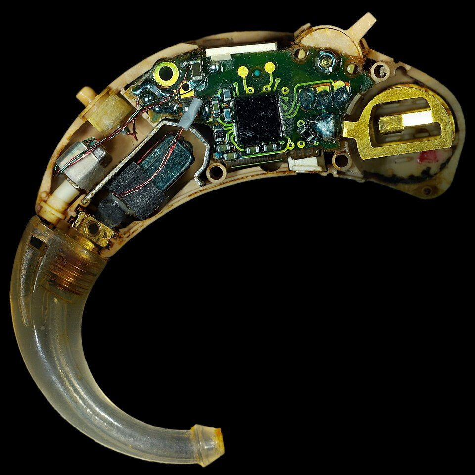
Inside a behind-the-ear hearing aid: microphones, DSP circuit board, receiver, battery compartment and tone hook.Image: Laserlicht, Wikimedia Commons, CC BY-SA 4.0
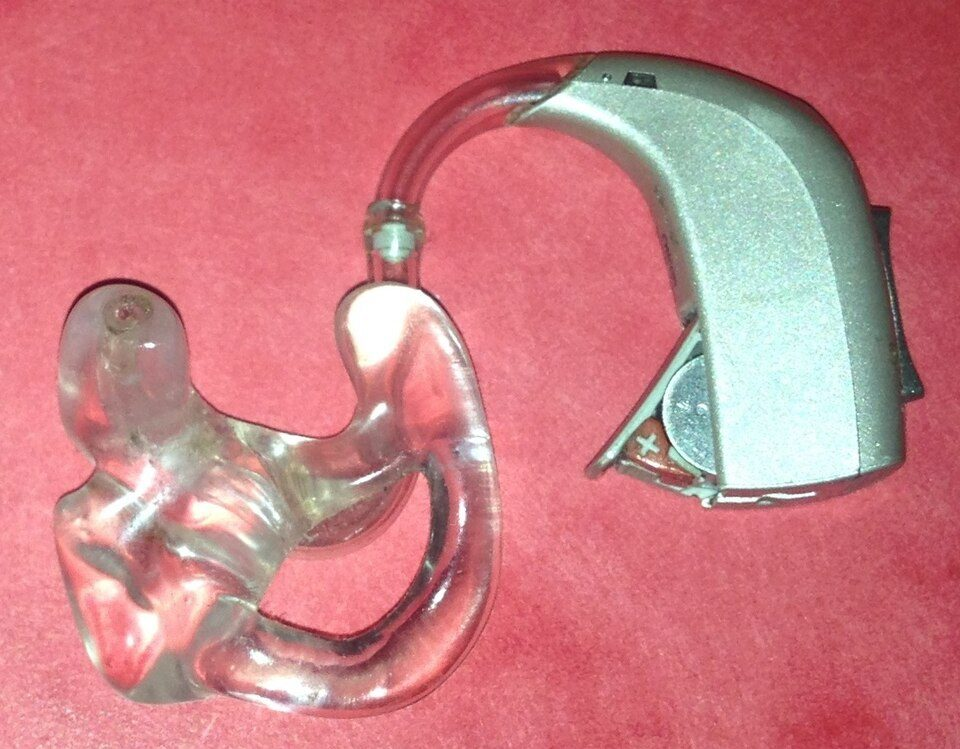
A digital behind-the-ear hearing aid with a custom earmould.Image: Christian P. Nielsen, Wikimedia Commons, Public domain
An analogue signal is continuous in time and amplitude, like the voltage from a microphone. A digital signal is a sequence of numbers, each representing the analogue value at one instant. Two operations turn one into the other.
Sampling measures the signal at regular intervals. The number of samples per second is the sampling rate fs. The sampling theorem states that a signal can be represented without loss only if it contains no energy above half the sampling rate, the Nyquist frequency fs/2. Energy above fs/2 folds back to a lower frequency (aliasing), so an anti-aliasing low-pass filter precedes or forms part of the ADC. Hearing aids commonly process audio at sampling rates in the region of 16 to 33 kHz, giving audio bandwidths of roughly 8 to 10 kHz or more; some devices sample faster in the converter and reduce the rate (decimate) before processing.
Quantisation rounds each sample to the nearest of a finite set of levels. With N bits there are 2N levels. The rounding error behaves approximately like a small added noise, and the ratio between the largest sine wave the converter can represent and this noise is the theoretical dynamic range (equation below). The acoustic world spans a very wide range, from a quiet room near 30 dB SPL to loud music or a shout near the ear above 100 dB SPL, so the converter's dynamic range sets how quiet a sound can be before it is lost in noise and how loud a sound can be before it is clipped.
Digital gain is simply multiplication. To apply 30 dB of gain, every sample is multiplied by 1030/20 = 31.6. Frequency-dependent gain is obtained by first separating the signal into frequency channels (topic 3.2) and multiplying each channel by its own gain, which can itself change with level (compression, topic 3.3).
Real-time processing means every block of samples must be processed before the next block arrives, and the total delay from microphone to receiver must be short. In a hearing aid the client hears both the processed sound and, through the vent or around an open dome, the direct unprocessed sound, as well as their own voice by bone conduction. If the processed sound arrives late, the two combine to produce comb-filter colouration (Figure 3.1b) and, with longer delays, an echo-like or disturbing quality to the client's own voice. Research on tolerable delay (for example the work of Stone and Moore) suggests that delays above roughly 10 ms become disturbing for many listeners, and that with open fittings even a few milliseconds produce audible colouration. Hearing aids are therefore typically designed for total delays in the range of about 1 to 10 ms, with many devices at the lower end of this range.
Key ideaEvery design decision in a hearing aid is a compromise between four limited resources: power (battery life), size, processing delay and computational capacity. Better frequency resolution needs longer analysis windows (more delay); more channels and more algorithms need more computation (more power).
Architecture and signal flow
Figure 3.1a. Functional architecture of a digital hearing aid. The acoustic path runs left to right; the telecoil and radio are alternative inputs; memory holds the fitting; the battery supplies every block.
Walk through the chain in signal order:
Microphones. One or two (sometimes three) omnidirectional microphones, now usually MEMS (micro-electro-mechanical system) types, sometimes electret. Two microphones spaced a few millimetres to about 15 mm apart allow directional processing (topic 3.4). Each converts sound pressure into a small voltage; sensitivity and self-noise set the softest sound the aid can pick up.
Preamplifier. Raises the microphone signal to suit the ADC input range while adding as little noise as possible. Some designs include analogue input protection so that very loud sounds do not overload the converter.
ADC. Hearing-aid ADCs are usually sigma-delta converters: they sample at a very high rate with a coarse quantiser, then filter and decimate digitally to the processing rate with an effective resolution of roughly 16 to 20 bits or more. The anti-aliasing filter is largely built into this decimation.
DSP core. A low-power processor (often a combination of programmable cores and fixed hardware accelerators) that runs the algorithms: analysis filterbank or FFT, directional processing, noise reduction, per-channel gain and wide dynamic range compression, feedback cancellation, output limiting and synthesis back to a single signal. It also runs environment classification and automatic program switching.
DAC and class-D output stage. Rather than a conventional DAC and linear power amplifier, most hearing aids convert the digital samples directly into a high-frequency pulse train (pulse-width or pulse-density modulation) that switches an H-bridge connected across the receiver. The receiver's inductance and the ear's mass-limited response smooth the pulses, so the receiver responds to their average value. Switching amplifiers waste very little power, which is essential with a 1.4 V cell.
Receiver. A balanced-armature transducer that converts current to sound. In behind-the-ear (BTE) aids it sits in the case and sound travels through tubing; in receiver-in-canal (RIC) aids it sits in the ear canal. Its frequency response, peak resonances and maximum output limit the achievable gain and output.
Battery and power management. Zinc-air cells (nominal about 1.4 V; common sizes 10, 312, 13 and 675) or rechargeable lithium-ion cells (nominal about 3.6 to 3.7 V). Voltage regulators, charge pumps and low-battery detection keep the supply stable as the cell discharges.
Memory. Non-volatile memory (EEPROM or flash) stores firmware, the fitting parameters for each listening program, volume and program settings, and data-logging records (hours of use, time in each acoustic environment, volume changes).
Fitting interface. Programming was traditionally by cable from a hardware interface connected to the computer; today it is increasingly wireless using Bluetooth Low Energy. Manufacturer fitting software, usually running within the HIMSA NOAH framework, reads the client's audiogram and writes parameters to the aid.
Wireless and telecoil. A 2.4 GHz radio supports Bluetooth Low Energy for phone streaming, remote controls and apps, ear-to-ear links, and increasingly Bluetooth LE Audio with its LC3 codec and Auracast broadcast audio (public broadcast streams that many receivers can join). Some devices use near-field magnetic induction for ear-to-ear communication. The telecoil is a small induction coil that picks up the magnetic field of a hearing loop or loop-compatible telephone, giving a direct signal free of room noise and reverberation.
Figure 3.1b. Why delay matters. The ear receives the direct and the processed sound. Where they have similar levels, their sum shows peaks and notches (a comb filter) whose spacing is 1/d.
Components
Component
Function
What can go wrong
Microphone(s) and ports
Pressure to voltage; two ports enable directionality
Blocked port by debris or moisture (weak or noisy sound, loss of directionality); drift in sensitivity between the two microphones degrades directional performance; wind noise
Preamplifier
Low-noise gain before conversion
Adds noise; overload by very loud input
ADC
Sampling and quantisation
Clipping at high input levels (distorted loud music or own voice); quantisation and circuit noise audible in quiet for mild losses
Distortion near maximum output; electrical interference
Receiver and tubing
Current to sound
Wax or moisture blockage (weak or dead aid), damaged receiver wire in RIC, cracked tubing causing feedback
Battery and power management
Supply and regulation
Short life with streaming; zinc-air cells affected by humidity and air access; contacts corroded
Memory
Firmware, programs, data logging
Lost or corrupted settings after failed update
Radio and antenna
Streaming, apps, ear-to-ear link
Pairing failures, dropouts, higher current drain
Telecoil
Magnetic pick-up from loops
Not activated in a program, wrong orientation, weak loop field, hum from electrical interference
Fitting interface
Reading and writing parameters
Connection failure, version mismatch between software and firmware
Key parameters and specifications
Parameter
Typical value or range
Clinical meaning
Processing sampling rate
about 16 to 33 kHz (device dependent)
Sets audio bandwidth; wider bandwidth helps high-frequency speech cues and music
Audio bandwidth
typically up to about 8 to 10 kHz
Useful gain above about 6 kHz is often limited by the receiver and feedback
Effective ADC resolution
about 16 to 20 bits or more
Theoretical dynamic range near 98 dB at 16 bits
Maximum undistorted input
roughly 95 to 115 dB SPL
Low values cause distortion of loud music and live performances
Equivalent input noise
typically about 15 to 30 dB SPL
Audible hiss in quiet for clients with near-normal low-frequency hearing
Processing delay
about 1 to 10 ms
Longer delays cause comb filtering and own-voice problems, especially with open fits
Number of channels
typically 4 to 20 or more
Finer control of frequency-gain and compression (topic 3.2)
Supply voltage
about 1.4 V zinc-air; about 3.6 to 3.7 V Li-ion
Determines battery type and output headroom
Current drain
roughly 1 to 3 mA; higher while streaming
Battery life in days, or charge lasting a day
Maximum output (OSPL90)
about 105 to 140 dB SPL in a coupler, by power class
Must suit the client's loudness discomfort level
Algorithms and equations
DR_ADC = 6.02 N + 1.76 dB
where N is the number of bits and DR_ADC is the ideal ratio of a full-scale sine wave to quantisation noise.
Worked example: N = 16 gives 6.02 × 16 + 1.76 = 98.1 dB. If the converter clips at 115 dB SPL, the ideal quantisation noise floor lies near 115 − 98 = 17 dB SPL. In practice circuit and microphone noise sit above this, so the real input dynamic range is smaller.
g = 10^(G / 20) y[n] = g × x[n]
where G is the gain in dB, g the linear multiplier, x[n] the input sample and y[n] the output sample.
Worked example: G = 30 dB gives g = 101.5 = 31.6. An input sample of 0.010 becomes 0.316.
f_notch = (2k + 1) / (2d), spacing = 1 / d
where d is the hearing-aid delay in seconds relative to the direct sound and k = 0, 1, 2 ...
Worked example: d = 5 ms gives notches at 100, 300, 500 Hz and so on, spaced 1/0.005 = 200 Hz apart. With d = 1 ms the spacing widens to 1000 Hz (notches at 500, 1500, 2500 Hz). The notches are deep only where direct and aided sound have similar levels, typically in the low frequencies of an open fitting.
battery life (h) = capacity (mAh) / current (mA)
a first approximation that ignores voltage cut-off and the variation of current with sound level and streaming.
Worked example: a size 312 zinc-air cell with a capacity of roughly 170 mAh at 1.2 mA lasts about 170 / 1.2 = 142 hours, or about 8.9 days of 16-hour use.
Clinical applications
Choosing a style: RIC with open dome for a mild to moderate high-frequency loss favours low delay and effective feedback cancellation; a BTE with custom mould suits a severe loss needing high gain and output.
Explaining own-voice complaints: a client who describes their voice as hollow or echoing may be hearing occlusion, comb filtering, or both; knowing the vent and delay paths guides the fix (larger vent, program change or gain adjustment).
Using data logging: memory records show whether the client wears the aids, which programs they use and how often they change volume, supporting counselling.
Recommending connectivity: streaming from phones and televisions, telecoil in looped venues, and LE Audio broadcast where available improve the signal-to-noise ratio far more than any microphone algorithm, because the sound is picked up at the source.
Troubleshooting a weak aid: work along the chain (microphone port, battery, receiver and wax guard, tubing) as in the table below.
Clinical linkFitting software presents processing as friendly controls (gain handles, noise reduction strength, feedback manager). Each control maps to parameters of the blocks in Figure 3.1a. After any change, verify the result with probe-microphone measurement rather than trusting the screen graph.
Limitations, errors and troubleshooting
Problem
Likely cause
What to check or do
Aid dead or very weak
Flat or wrong battery, wax guard blocked, receiver fault
Battery tester or charge status, change wax guard, listen with a stethoclip, check in a test box
Distorted sound for loud music
Input stage clipping, output at MPO
Use a music program with higher input headroom if available; check MPO and coupler output
Audible hiss in quiet
Microphone and circuit noise amplified by high gain for soft sounds
Reduce soft-sound gain in low-loss regions, enable expansion (soft-noise squelch)
Own voice hollow or echoing
Occlusion, delay-induced comb filtering
Increase venting, check program, measure occlusion; consider a lower-delay setting if offered
Streaming drops
Pairing, interference, distance, body shadow
Re-pair, update firmware, check phone settings
Telecoil gives hum or silence
Program not enabled, loop fault, electrical interference
Activate telecoil program, test with a loop listener, check loop installation
Short battery life
Streaming, high gain, humidity, stale cells
Review data logging, remove tab one minute before use, store cells correctly
Demonstration
Equipment: fitting computer with manufacturer software (in simulation mode if no aid is connected), a demonstration or non-functional hearing aid for dismantling, a stethoclip, a hearing-aid test box if available, and the block diagram above.
Show Figure 3.1a and trace the path of a spoken word from microphone to receiver, stating the form of the signal at each point (pressure, voltage, numbers, pulse train, pressure).
Open a non-functional BTE or RIC aid. Identify microphone ports, the battery compartment and contacts, the receiver or receiver wire, the programming contacts or antenna area and the telecoil if fitted.
Open the fitting software in simulation mode. Enter a sample sloping audiogram and let the software calculate a first fit.
Show the gain handles per channel, the compression settings, noise reduction and feedback manager. Change the high-frequency gain by 5 dB and show the predicted response change.
If a connected aid and test box are available, measure the coupler response before and after the change so students see that the software instruction changed the processing.
Show the data-logging screen and discuss what the memory stores.
Students observe: every software control corresponds to a DSP parameter; the acoustic result can differ from the screen prediction, so verification is needed.
Current developments
Bluetooth LE Audio with the LC3 codec and Auracast broadcast audio, allowing standard streaming from phones and public broadcast in venues, alongside proprietary and earlier protocols.
Rechargeable lithium-ion designs replacing disposable zinc-air cells in many product lines.
More capable low-power processors enabling machine-learning-based sound classification and, in some devices, deep-neural-network noise reduction.
Built-in sensors (for example accelerometers) used for features such as activity tracking or fall detection in some products.
Remote fitting and adjustment through smartphone apps and cloud services (tele-audiology).
Over-the-counter and self-fitting hearing aids in some regions, which make device architecture and verification knowledge more important for audiologists advising clients.
Practical activity and assessment
Practical P5: hearing-aid signal chain.
Draw the full architecture of a modern RIC hearing aid from memory, including acoustic, electrical, digital and wireless paths and the power supply.
Annotate each block with its function, the form of the signal entering and leaving it, and one fault that can occur there.
Mark on the diagram where each fitting-software control acts (gain, compression, noise reduction, feedback manager, program selection, telecoil).
Add a short note calculating the comb-filter notch spacing for delays of 2 ms and 8 ms.
Deliverable: one annotated A4 diagram with a half-page explanation, using manufacturer technical documentation and Dillon or Kates as sources.
References
Dillon, H. Hearing Aids (2nd ed.). Boomerang Press / Thieme.
Kates, J. M. Digital Hearing Aids. Plural Publishing.
Ricketts, T. A., Bentler, R., Mueller, H. G. Essentials of Modern Hearing Aids: Selection, Fitting, and Verification. Plural Publishing.
Popelka, G. R., Moore, B. C. J., Fay, R. R., Popper, A. N. (eds.) Hearing Aids. Springer Handbook of Auditory Research.
Hamacher, V. et al. (2005). Signal processing in high-end hearing aids: state of the art, challenges, and future trends. EURASIP Journal on Applied Signal Processing.
Stone, M. A., Moore, B. C. J. (1999). Tolerable hearing aid delays. I. Estimation of limits imposed by the auditory path alone using simulated hearing losses. Ear and Hearing.
IEC 60118 series: Electroacoustics, Hearing aids (performance measurement, induction-loop systems, speech-like test signals).
ANSI/ASA S3.22: Specification of Hearing Aid Characteristics.
Manufacturer technical documentation and fitting software guides.
Bluetooth SIG, LE Audio information: https://www.bluetooth.com
3.2
Channel separation
1 hour01.09.2026Practical P3Practical P5
Hearing loss almost always varies with frequency, so a hearing aid must give different gain and different compression in different frequency regions. Channel separation is the process of splitting the microphone signal into frequency channels that can be processed independently and then recombined. How the split is made determines frequency resolution, processing delay, sound quality and battery use.
What it is
An analysis filterbank (a set of band-pass filters, or an FFT) that divides the audio spectrum into adjacent frequency channels, followed by per-channel processing and a synthesis stage that adds the channels back into one signal.
Why it is required
A typical sloping loss needs little gain at 250 Hz and much more at 4 kHz, and the amount of compression needed also changes with frequency. Without separate channels, a loud low-frequency sound would reduce the gain for soft high-frequency consonants at the same time.
How it works
Each channel filter passes a range of frequencies bounded by crossover frequencies. A level detector and gain rule in each channel set that channel's gain from its own input level. The weighted channel signals are summed. The filters are designed so that, with equal gains, the sum is close to the original signal.
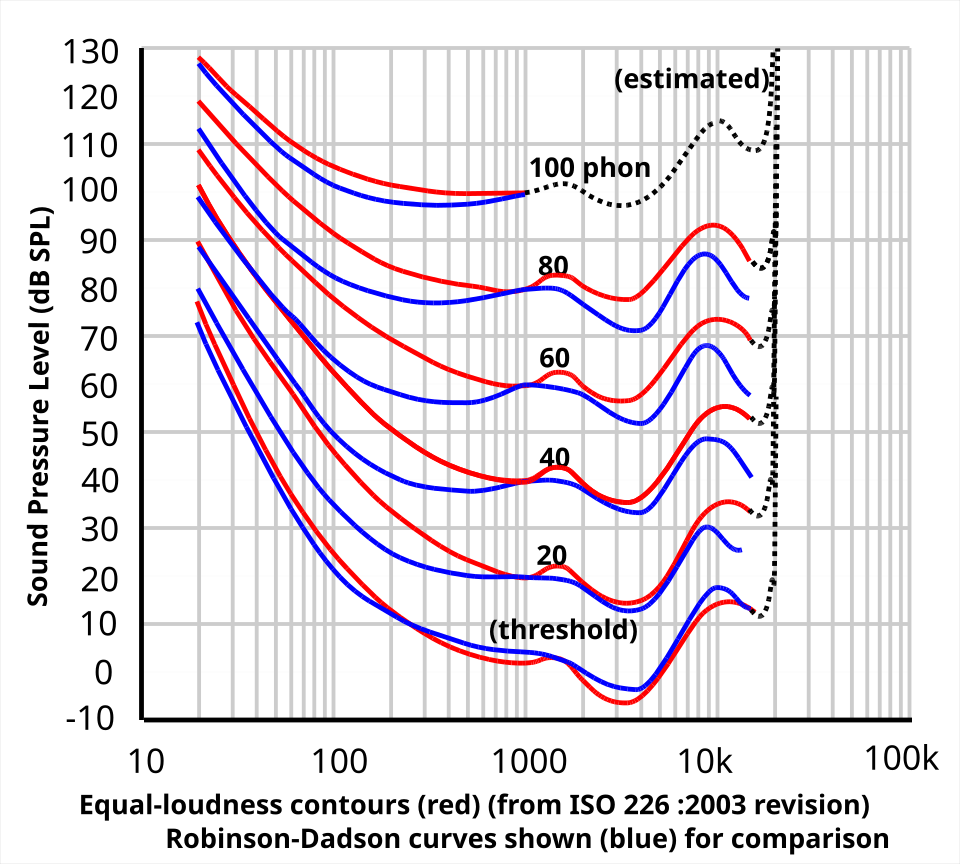
Equal-loudness contours: the ear is least sensitive at low and very high frequencies, which is why channel gains differ across frequency.Image: Lindosland (English Wikipedia), Wikimedia Commons, Public domain
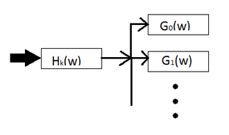
An analysis filterbank: one input split into several frequency channels.Image: Chaitu ASU, Wikimedia Commons, CC BY-SA 4.0
Background and principle of operation
A band-pass filter passes frequencies within a range and attenuates those outside it. Its centre frequency is the middle of the pass range (arithmetic middle on a linear scale, geometric middle on a logarithmic scale) and its bandwidth is the width of the range, usually measured between the points where the response has fallen by 3 dB. Where the responses of two neighbouring filters cross, the frequency is called the crossover frequency. The steepness of the filter edges (the skirts) is often stated in dB per octave.
Fitting software and textbooks use two related terms that are often confused. Following common usage (for example in Dillon), a band is a frequency region whose gain can be adjusted by the audiologist, while a channel is a frequency region with its own independent compression (its own level detector and gain rule). A device may offer 20 gain-adjustment bands but only 8 compression channels: several bands then share one compressor. Manufacturers do not always follow this distinction, so check the technical documentation.
Frequency-dependent gain is required for several reasons:
Thresholds differ across frequency. Speech cues for consonants such as /s/, /f/ and /th/ lie mainly above 2 kHz, where losses are often greatest.
Loudness growth (recruitment) differs across frequency, so compression ratios should differ too (topic 3.3).
Amplifying low frequencies strongly can cause upward spread of masking: intense low-frequency speech or noise masks weaker high-frequency cues.
Prescriptive formulas such as NAL-NL2 and DSL v5 specify target gain per frequency and per input level.
Other algorithms work per channel: noise reduction reduces gain only where the signal-to-noise ratio is poor, and feedback control can act only in the frequency region where feedback occurs.
The auditory system itself analyses sound with overlapping filters whose bandwidth increases with centre frequency. The equivalent rectangular bandwidth (ERB) of the auditory filter for young normal-hearing listeners is about 133 Hz at 1 kHz and about 456 Hz at 4 kHz (Glasberg and Moore). Many hearing-aid filterbanks therefore use channels that are narrow at low frequencies and wider at high frequencies, spaced roughly logarithmically or on an ERB-like scale.
Architecture and signal flow
Figure 3.2a. Multichannel processing with a band-pass filterbank. Each channel has its own gain and compressor; the synthesis stage sums the channels.
Walk-through:
The digitised input is fed to all analysis filters at once.
Each band-pass filter keeps only its frequency region. Adjacent filters overlap near the crossover frequencies so that no frequency falls into a gap.
In each channel a level detector estimates the short-term level and the gain rule (linear gain, compression, expansion, noise-reduction weighting) sets a gain. Gains may be linked across channels to limit spectral distortion.
The synthesis stage adds the weighted channels. For an FFT-based system this is an inverse FFT followed by overlap-add.
A broadband output limiter usually follows before the signal reaches the output stage.
Figure 3.2b. Weighted overlap-add (WOLA) FFT filterbank. Uniformly spaced FFT bins are grouped into wider channels at high frequencies to follow an approximately logarithmic spacing.
Components
Filterbank type
How it works
Strengths
Weaknesses
FIR band-pass bank
Each channel is a finite impulse response filter (weighted sum of past inputs)
Can have exactly linear phase; channels sum cleanly
Long filters needed for narrow low-frequency bands, giving more delay and computation
IIR band-pass bank
Recursive filters (use past outputs), for example Butterworth sections
Low computation, low delay, steep skirts with few coefficients
Non-linear phase; phase differences at crossovers can create peaks or dips when channels are summed
FFT / WOLA
Block-based short-time Fourier transform with windowing and overlap-add
Many bins cheaply; natural platform for noise reduction and feedback processing
Uniform resolution; block processing adds delay about equal to the window length; time-aliasing if gains change abruptly
Warped filterbank
Delay elements replaced by first-order all-pass filters, stretching the frequency axis
Resolution close to auditory (Bark or ERB) spacing with a short filter
Frequency-dependent group delay; more complex design
Hybrid schemes
For example a short time-domain filter whose gains are computed in a side-branch FFT
Low delay in the audio path with fine frequency analysis for control
Gain resolution limited by the short filter
Few wide channels
Low computation and power
Short delay possible
Coarse match to an irregular audiogram
A loud sound in one region reduces gain across a wide range
Many narrow channels
Fine match to audiogram and prescription targets
Better targeting of noise reduction and feedback control
More computation, and more delay if the filters are sharp
With fast compression, more flattening of spectral contrast
Key parameters and specifications
Parameter
Typical value or range
Clinical meaning
Number of compression channels
typically about 4 to 20 or more
More channels allow finer shaping; gains beyond a moderate number are small for most audiograms
Number of gain bands (handles)
often more than the channel count
Fine shaping in fitting software
Channel spacing
roughly logarithmic or ERB-like
Narrow at low, wide at high frequencies, like the cochlea
Crossover frequency
adjustable in some devices, for example 500 to 4000 Hz
Places a channel boundary relative to a steep audiogram slope
Filter skirt slope
about 12 to 60 dB per octave or more
Steeper skirts isolate channels better but need more delay or computation
FFT length at 16 kHz
often 64 to 256 samples
128 samples gives 125 Hz bins and an 8 ms window
Filterbank delay
about 1 to 8 ms
Largest contributor to total hearing-aid delay
Algorithms and equations
Δf = f_s / N T_window = N / f_s
Δf × T_window = 1
where f_s is the sampling rate, N the FFT or filter length in samples, Δf the bin spacing and T_window the analysis window duration.
Worked example: fs = 16 kHz, N = 128 gives Δf = 16000/128 = 125 Hz and Twindow = 128/16000 = 8 ms. Halving N to 64 halves the window to 4 ms but doubles the bin spacing to 250 Hz. Frequency resolution and delay cannot both be improved at once.
delay_FIR = (L − 1) / (2 f_s)
where L is the number of taps of a linear-phase FIR filter; resolution is roughly f_s / L.
Worked example: to resolve about 100 Hz at fs = 16 kHz needs L ≈ 160 taps, so the delay is 159/32000 = 4.97 ms, already half of a reasonable total delay budget.
f_k = f_lo × (f_hi / f_lo)^(k / M), k = 0 ... M
f_c = √(f_k × f_k+1)
where f_k are band edges for M logarithmically spaced channels between f_lo and f_hi, and f_c is each channel's geometric centre.
Worked example: M = 8 channels from 100 to 8000 Hz. The ratio between edges is 801/8 = 1.73. The edges are 100, 173, 299, 517, 894, 1547, 2675, 4626 and 8000 Hz, and the centres are about 132, 227, 393, 680, 1176, 2034, 3518 and 6083 Hz. Each channel is about 0.79 octave wide.
ERB(f) = 24.7 (4.37 f/1000 + 1) Hz
ERB-number(f) = 21.4 log10(4.37 f/1000 + 1)
where f is in Hz (Glasberg and Moore). Equal steps of ERB-number give ERB-like channel spacing.
Worked example: ERB(1000) = 24.7 × 5.37 = 132.6 Hz. Between 100 and 8000 Hz the ERB-number runs from 3.37 to 33.29, about 30 ERBs. Dividing this into 8 equal steps gives edges of about 100, 263, 507, 871, 1416, 2231, 3450, 5273 and 8000 Hz: more channels in the mid frequencies than log spacing, fewer at the very bottom.
MAC rate = channels × taps × f_s
where MAC means multiply-accumulate operations per second for a bank of FIR filters.
Worked example: 16 channels of 64-tap FIR filters at 16 kHz need 16 × 64 × 16000 = 16.4 million MAC/s for the filterbank alone. An FFT filterbank computes all channels together for much less, which is why many devices use FFT or warped structures.
For warped filterbanks, a warping parameter of about 0.58 at 16 kHz gives a frequency mapping close to the Bark scale (Smith and Abel).
Channel interaction and spectral smearing
Channels are never perfectly separate. A pure tone at a crossover frequency passes through two channels, so its output depends on both channel gains. When adjacent channels have very different gains, the summed response shows ripples or a step near the crossover, and IIR filters with different phase responses can add or cancel there. Fitting software usually smooths gains across neighbouring bands for this reason.
With fast-acting compression in many narrow channels, each channel turns down its own peaks and turns up its own valleys. Speech spectra have peaks (formants) and valleys; independent compression reduces this spectral contrast (a form of spectral flattening or smearing). Plomp argued that multichannel compression with short time constants reduces the modulation and contrast cues that listeners use. Because listeners with sensorineural loss already have broadened auditory filters, further reduction of spectral contrast can make vowel and consonant identification harder. Moderate channel counts, moderate compression ratios, slower time constants or linking of gains across channels reduce this effect.
Common errorMore channels do not automatically mean better speech understanding. The benefit of extra channels is mainly flexibility in fitting irregular audiograms and targeting noise and feedback control; beyond a moderate number the gains are small, and fast multichannel compression can reduce spectral contrast.
Try it: hearing-aid filterbank
Change the number of channels and the spacing rule, and watch how bandwidth is shared between low and high frequencies on the logarithmic frequency axis.
Centre frequencies (Hz)
Narrowest channel
Widest channel
Channels below 1 kHz
Odd channelsEven channelsPower sum of all channels
Observe that with linear spacing most channels fall above 2 kHz and the whole range below about 1 kHz may be covered by a single channel, whereas logarithmic and ERB-like spacings give more channels where speech energy and many fitting decisions lie. Increasing the filter order makes skirts steeper and reduces overlap; in a real device this costs delay or computation.
Clinical applications
Reading a multichannel fitting screen: the gain curves for soft (for example 50 dB SPL), moderate (65 dB SPL) and loud (80 dB SPL) inputs are drawn across frequency. The vertical spacing between the curves in a region shows how much compression that channel applies.
Steeply sloping or cookie-bite audiograms: more channels or adjustable crossovers allow gain to follow the slope without over-amplifying regions with near-normal hearing.
Reverse-slope losses: low-frequency channels need more gain than high-frequency ones; enough low-frequency channels are needed.
Feedback-limited fittings: channel-specific gain reduction in the region of feedback (often 2 to 5 kHz) preserves gain elsewhere.
Noise from a specific source (for example a low-frequency fan): per-channel noise reduction lowers gain only where noise dominates.
Limitations, errors and troubleshooting
Problem
Cause
What to check or do
Measured response has a dip or peak between two handles
Large gain difference between adjacent channels, crossover phase interaction
Smooth the gain across neighbouring bands; verify with probe-microphone measurement
Speech sounds muffled or "flat" with high channel count and fast compression
Reduced spectral contrast
Lower compression ratios, slower release, fewer effective channels if available
Echoey or hollow own voice with open fit
Long filterbank delay mixing with direct sound
Check whether the device offers a low-delay mode; adjust venting
Fitting screen differs from real-ear result
Software predicts average ear and coupling
Always verify with REM; use measured real-ear-to-coupler difference where appropriate
Short battery life on a premium device
More channels and algorithms raise current
Review features in use; discuss rechargeable options
Demonstration
Equipment: fitting software in simulation mode, the interactive demo above, and optionally Python with SciPy or Audacity to filter a speech recording.
In the fitting software, enter a sloping loss and show the gain handles and the channel count. Point out the difference between gain bands and compression channels for that device.
Show gain curves for soft, moderate and loud inputs. Increase the compression ratio in one high-frequency channel and show that the loud-input curve drops in that region only.
Use the demo: set 4 channels with linear spacing, then 8 with logarithmic spacing, then 16 with ERB-like spacing. Ask students to read the centre frequencies and count channels below 1 kHz.
Filter a speech file into three bands (for example below 1 kHz, 1 to 3 kHz, above 3 kHz) in Python or Audacity and play each band, so students hear which speech cues lie where.
Recombine the bands with one band boosted by 15 dB and play the result.
Students observe: channel spacing controls where fine adjustment is possible; separated bands carry different speech information; large gain steps between neighbours alter the sound.
import numpy as np
M, flo, fhi = 8, 100.0, 8000.0
log_edges = flo * (fhi / flo) ** (np.arange(M + 1) / M)
E = lambda f: 21.4 * np.log10(4.37 * f / 1000 + 1)
Einv = lambda e: (10 ** (e / 21.4) - 1) * 1000 / 4.37
erb_edges = Einv(np.linspace(E(flo), E(fhi), M + 1))
print(np.round(log_edges).astype(int))
print(np.round(erb_edges).astype(int))
Low-delay filterbank designs that combine fine frequency analysis with short audio-path delay, supporting open fittings.
Linking of gain across channels and across the two ears to preserve spectral shape and interaural level cues.
Filterbanks shared across algorithms (compression, noise reduction, feedback control, beamforming) to save power.
Frequency-lowering schemes (compression or transposition) that operate on the channel representation to move high-frequency cues into audible regions.
Neural-network processing that works on short-time spectral frames, which places new demands on frame length and delay.
Practical activity and assessment
Practical P3 (filtering) and P5 (signal chain): interpret a multichannel fitting graph.
Obtain a screenshot or printout of a fitting screen showing gain curves for soft, moderate and loud inputs across channels for a given audiogram.
Read the gain in each channel at 50, 65 and 80 dB SPL input and tabulate it.
For each channel estimate the effective compression ratio as 30 / (30 − (G50 − G80)), where G50 and G80 are the gains at 50 and 80 dB SPL input, and state whether the channel is linear or compressive over this range.
Identify the channel boundaries (crossover frequencies) and comment on whether the channel layout suits the audiogram shape.
Deliverable: a one-page table with a short written interpretation.
References
Dillon, H. Hearing Aids (2nd ed.). Boomerang Press / Thieme.
Kates, J. M. Digital Hearing Aids. Plural Publishing.
Glasberg, B. R., Moore, B. C. J. (1990). Derivation of auditory filter shapes from notched-noise data. Hearing Research.
Plomp, R. (1988). The negative effect of amplitude compression in multichannel hearing aids in the light of the modulation-transfer function. Journal of the Acoustical Society of America.
Smith, J. O., Abel, J. S. (1999). Bark and ERB bilinear transforms. IEEE Transactions on Speech and Audio Processing.
Kates, J. M., Arehart, K. H. (2005). Multichannel dynamic-range compression using digital frequency warping. EURASIP Journal on Applied Signal Processing.
Manufacturer fitting software documentation and fitting manuals.
SciPy signal processing documentation: https://scipy.org
3.3
Non-linear amplification
1 hour01.09.2026Practical P6
People with sensorineural hearing loss have raised thresholds but often near-normal loudness discomfort levels, so their usable dynamic range is reduced. Non-linear amplification, mainly wide dynamic range compression (WDRC), gives more gain to soft sounds and less to loud sounds so that speech is audible without loud sounds becoming uncomfortable. Understanding compression parameters is essential for reading fitting screens, verifying fittings and solving complaints about loudness and sound quality.
What it is
An automatic gain control whose gain depends on the input level: constant (linear) below a compression threshold, decreasing as input rises above it, and limited so that output never exceeds a maximum power output (MPO).
Why it is required
Loudness recruitment means loudness grows abnormally fast above threshold. A linear aid set to make soft speech audible makes loud sounds too loud; set for loud sounds, soft speech becomes inaudible. Compression fits the wide range of everyday sound levels into the listener's narrower range.
How it works
In each channel a level detector estimates the signal level with chosen attack and release times. A gain rule computes the gain in dB from that level using the threshold, ratio and gain settings. The signal is multiplied by the corresponding linear gain. A final limiter caps the output at the MPO.
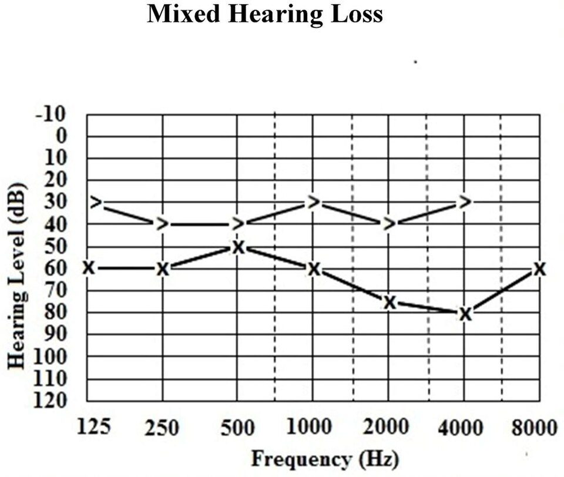
An audiogram of a mixed hearing loss (source figure; symbols follow the original article).Image: Alshuaib WB, Al-Kandari JM, Hasan SM, Wikimedia Commons, CC BY 3.0
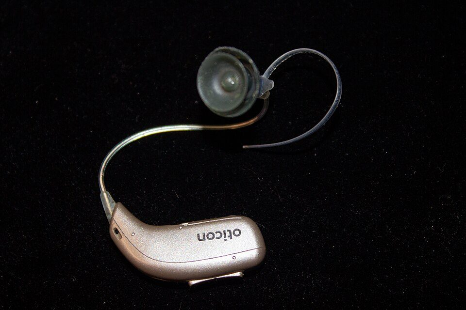
A receiver-in-canal style hearing aid with a thin wire and dome.Image: Bastique, Wikimedia Commons, CC BY 4.0
Background and principle of operation
In linear amplification the gain is the same at all input levels until the amplifier saturates: a 10 dB rise in input produces a 10 dB rise in output. In non-linear amplification the gain changes with input level. The most common form in hearing aids is compression, in which gain decreases as input level rises.
The static behaviour is described by the input/output (I/O) function, output level plotted against input level for a steady signal, and equivalently by the gain curve, gain plotted against input level. Key parameters:
Compression threshold (CT, also called kneepoint): the input level above which gain starts to decrease. In WDRC it is low, typically about 40 to 55 dB SPL input, so compression acts over most of the speech range.
Compression ratio (CR): the change in input level divided by the resulting change in output level above the threshold. With CR = 2, a 10 dB rise in input gives a 5 dB rise in output. The output rises by 1/CR dB for every dB of input, and the gain falls by (1 − 1/CR) dB per dB.
Gain for soft input: the gain applied below the threshold (linear region), often set from the prescription for soft (about 50 dB SPL) speech.
Maximum power output (MPO): the highest output the aid is allowed to produce, set below the listener's loudness discomfort level.
Attack time: how quickly gain decreases after a sudden rise in input. Release time: how quickly gain recovers after a sudden fall.
Loudness recruitment is the key physiological motivation. Outer hair cell damage removes the cochlea's own compressive amplification for soft sounds, while loud sounds reach nearly normal loudness. For example, if a listener's threshold at 2 kHz corresponds to about 60 dB SPL and their discomfort level to about 100 dB SPL, their dynamic range is about 40 dB, compared with nearly 100 dB for a normal ear. Compression partly restores what the damaged cochlea no longer does.
Types of non-linear gain used in hearing aids:
Expansion below a low threshold (for example below about 30 to 45 dB SPL input): gain is reduced for very soft sounds to make microphone noise and quiet background sounds less noticeable.
WDRC: low threshold, low to moderate ratio (about 1.5:1 to 3:1 in many fittings), acting over most of the speech range.
Compression limiting: high threshold and high ratio (about 8:1 to 10:1 or more, up to effectively infinite), preventing output above the MPO with little effect on normal-level sounds.
Peak clipping: an older limiting method that removes waveform peaks above a fixed level. It is simple but produces distortion products that reduce sound quality and can reduce intelligibility.
Architecture and signal flow
Figure 3.3a. A feed-forward compressor for one channel. The side chain measures level and computes the gain; the main path only multiplies.
Figure 3.3b. Static I/O function (left) and gain curve (right) for gain 30 dB below a 45 dB SPL kneepoint, CR = 2 and MPO = 100 dB SPL. The dashed lines show linear amplification with the same 30 dB gain.
Walk-through of the compressor:
The channel signal enters the main path and, in parallel, the side chain.
The level detector rectifies or squares the signal and smooths it. It uses a fast time constant when the level is rising (attack) and a slower one when it is falling (release).
The gain computer converts the level estimate to dB and applies the static rule: constant gain below CT, reduced gain above it, and a cap so the output stays at or below MPO. Expansion may be applied at very low levels.
The gain in dB is converted to a linear multiplier and applied to the main-path signal.
Across channels, gains are combined in the synthesis stage and a broadband limiter protects the listener.
Components
Element
Role
What can go wrong
Level detector
Estimates short-term level (peak or RMS)
Too fast: distortion of speech envelope, pumping; too slow: overshoot on sudden loud sounds, soft sounds after loud ones missed
Gain computer
Maps level to gain from CT, CR, gain, expansion and MPO
Unsuitable parameters for the loss: soft speech inaudible or loud sounds uncomfortable
Expander
Reduces gain for very soft inputs
Set too high: soft speech is also suppressed
Output limiter
Holds output at or below MPO
MPO too high: discomfort; too low: loud speech flattened and distorted
Channel structure
Separate compression per channel
Spectral flattening with many fast channels (topic 3.2)
Binaural link
Coordinates gain between ears
Unlinked fast compression can reduce interaural level differences
Key parameters and specifications
Parameter
Typical value or range
Clinical meaning
Compression threshold (WDRC)
about 40 to 55 dB SPL input
Lower CT makes soft sounds more audible relative to moderate ones
Compression ratio (WDRC)
about 1.5:1 to 3:1; higher for severe losses
Higher CR squeezes more input range into the residual dynamic range but changes speech more
Compression limiting ratio
about 8:1 to 10:1 or more
Holds output near MPO with little distortion
Expansion threshold
about 30 to 45 dB SPL input
Reduces circuit and ambient noise in quiet
Attack time (syllabic)
about 1 to 10 ms
Fast attack prevents loud onsets from exceeding comfort
Release time (syllabic)
about 20 to 150 ms
Gain recovers between syllables; improves audibility of soft phonemes
Release time (slow-acting)
about 0.5 s to several seconds
Preserves the speech envelope; adjusts to the overall level of the environment
MPO (OSPL90 in a coupler)
about 105 to 140 dB SPL by device class
Set from loudness discomfort data or prescription
For standard measurement, ANSI/ASA S3.22 defines attack time using an input step from 55 to 90 dB SPL (time until output settles within 3 dB of its final value) and release time using the reverse step (within 4 dB). IEC 60118 measurements use similar step methods. Manufacturer-quoted times may use different definitions, so compare values only when the method is the same.
Algorithms and equations
L_out = L_in + G for L_in < CT
L_out = CT + G + (L_in − CT)/CR for L_in ≥ CT
L_out is then limited to at most MPO
Gain = L_out − L_in
where L_in and L_out are input and output levels (dB SPL), G is the gain below threshold (dB), CT the compression threshold (dB SPL input), CR the compression ratio and MPO the maximum output (dB SPL).
Worked example: G = 30 dB, CT = 45 dB SPL, CR = 2, MPO = 100 dB SPL.
Input (dB SPL)
Calculation
Output (dB SPL)
Gain (dB)
40
below CT: 40 + 30
70
30
50
45 + 30 + (50 − 45)/2 = 75 + 2.5
77.5
27.5
65
75 + (65 − 45)/2 = 75 + 10
85
20
80
75 + (80 − 45)/2 = 75 + 17.5
92.5
12.5
100
75 + 27.5 = 102.5, limited to MPO
100
0
Check: from 50 to 80 dB SPL the input rises 30 dB and the output rises 92.5 − 77.5 = 15 dB, so CR = 30/15 = 2, as set. The 30 dB input range of speech from soft to loud is delivered in a 15 dB output range.
CR_needed ≈ input range / residual dynamic range
a rough estimate of the ratio needed to fit a range of everyday input levels into the listener's range between audibility and discomfort.
Worked example: to fit inputs from 40 to 90 dB SPL (50 dB) into a residual range of 30 dB needs CR ≈ 50/30 = 1.67. Real prescriptions also consider speech intelligibility, loudness and the effect of compression on sound quality, so they seldom map the full range this simply.
α = exp(−1 / (τ f_s))
L[n] = α L[n−1] + (1 − α) |x[n]|
where τ is the attack time constant when |x[n]| exceeds L[n−1], and the release time constant otherwise; f_s is the sampling rate.
Worked example: at fs = 16 kHz, τ = 5 ms gives α = exp(−1/80) = 0.9876; τ = 100 ms gives α = exp(−1/1600) = 0.99938. The closer α is to 1, the slower the detector follows the signal.
def wdrc(Lin, G=30, CT=45, CR=2, MPO=100):
out = Lin + G if Lin < CT else CT + G + (Lin - CT) / CR
return min(out, MPO)
for L in (40, 50, 65, 80, 100):
print(L, wdrc(L), round(wdrc(L) - L, 1))
Release from about 0.5 s up to several seconds; often adaptive
Gain follows the overall level of the environment
Preserves the temporal envelope and sound quality
Soft sounds just after a loud one may be under-amplified
Needs a fast limiter to catch sudden loud sounds
Because the gain does not follow every fluctuation, the effective compression ratio measured with running speech is lower than the static ratio, especially with long release times. Studies reviewed by Souza and by Moore show that the preferred compression speed varies between individuals; some evidence links cognitive factors to benefit from fast versus slow compression, but no single setting suits everyone. Many devices use adaptive or dual time constants: slow by default with a fast path for sudden loud sounds.
RememberCompression reduces the gain for loud sounds. It does not make loud sounds quieter than they were without the aid; above the kneepoint the output still rises, only more slowly than the input.
Try it: compression input/output curve
Move the kneepoint, ratio, soft-input gain and MPO; the upper graph shows output and the lower graph shows gain as input level changes.
Gain at 50 dB SPL
Gain at 65 dB SPL
Gain at 80 dB SPL
Output slope above CT
Output (upper) or gain (lower)Linear referenceMPO50, 65, 80 dB SPL inputs
Clinical applications
Prescription: fitting software applies a prescription such as NAL-NL2 or DSL v5 to set gain for soft, moderate and loud inputs per channel; the compression ratio follows from the spacing of those targets.
Verification: probe-microphone (real-ear) measurement with a speech-like signal such as the ISTS at soft, average and loud levels (for example 55, 65 and 75 dB SPL) confirms that each level meets its target. MPO is verified with a swept tone or similar at a high input level (for example 90 dB SPL) against the client's discomfort levels.
Test-box checks: I/O curves, attack and release times, OSPL90 and gain are measured in a 2 cm³ coupler to ANSI/ASA S3.22 or IEC 60118 methods for quality control and fault finding.
Complaint "soft speech is hard to hear": raise gain for soft input or lower CT in the relevant channels; verify soft-level audibility.
Complaint "loud sounds are too loud": reduce MPO or gain for loud input; check that the compression limiter is active.
Complaint "sound is unnatural or noisy in pauses": consider lower CR, longer release, or expansion for very soft input.
Limitations, errors and troubleshooting
Problem
Cause
What to check or do
Loud sounds uncomfortable
MPO or loud-input gain too high
Measure real-ear MPO; lower MPO in the offending channels
Brief loud clicks get through
Attack too slow, overshoot
Check attack time in a test box; enable fast limiting
Background noise "pumps" up in pauses
Fast release with high CR
Lengthen release, reduce CR, use noise reduction or expansion
Distortion on loud speech or music
Peak clipping, MPO set too low, input stage overload
Raise MPO if tolerable; use compression limiting; music program
Soft speech inaudible
CT too high, soft gain too low, expansion too strong
Verify soft speech at 55 dB SPL against target
Test-box CR differs from software value
Measurement signal and time constants, effective vs static CR
Use steady signals for static I/O; compare like with like
Demonstration
Equipment: the interactive demo above, a recorded speech passage and a music excerpt, Python or MATLAB (or an audio editor with a compressor, such as Audacity), fitting software and, if available, a hearing-aid test box.
Set the demo to CR = 1 (linear) and show that the gain curve is flat until the MPO. Then set CR = 2 and CT = 45 dB SPL and read the gains at 50, 65 and 80 dB SPL.
Ask students to calculate the three outputs by hand using the equation and compare with the readouts.
Process the speech recording with a compressor at CR 3:1 with fast (5 ms / 50 ms) and slow (5 ms / 1000 ms) time constants. Play both and show the waveforms: the fast setting flattens the envelope between syllables.
Repeat with music and discuss why slower compression is often preferred for music.
If a test box is available, run an I/O curve at 2 kHz and an attack/release measurement on a real aid and compare with the software settings.
Students observe: gain decreases above CT; the output rises by 1/CR dB per dB; time constants change the sound even when the static curve is the same.
Current developments
Adaptive compression speed that changes time constants according to the acoustic scene.
Binaurally linked compression that coordinates gain between the two ears to preserve interaural level differences.
Individualised fitting using loudness scaling, cognitive measures or client preference in addition to the audiogram.
Self-fitting and app-based adjustment, where clients change gain and compression within limits.
Higher input dynamic range front ends to reduce distortion of loud inputs such as live music.
Practical activity and assessment
Practical P6: compression simulation and calculation.
Given G = 25 dB, CT = 50 dB SPL, CR = 3 and MPO = 105 dB SPL, calculate output and gain for inputs of 40, 50, 65, 80 and 95 dB SPL. (Check value: at 80 dB SPL the output is 85 dB SPL and the gain is 5 dB.)
Plot the I/O and gain curves by hand and confirm them with the interactive demo.
Change CR to 1.5 and repeat. Describe in two sentences how soft, moderate and loud sounds are affected.
Relate the result to a client with a threshold near 55 dB HL and a discomfort level near 100 dB HL at 2 kHz.
Deliverable: a worked calculation sheet with both plots and a short interpretation.
References
Dillon, H. Hearing Aids (2nd ed.). Boomerang Press / Thieme.
Kates, J. M. Digital Hearing Aids. Plural Publishing.
Souza, P. E. (2002). Effects of compression on speech acoustics, intelligibility, and sound quality. Trends in Amplification.
Moore, B. C. J. (2008). The choice of compression speed in hearing aids: theoretical and practical considerations and the role of individual differences. Trends in Amplification.
Keidser, G., Dillon, H., Flax, M., Ching, T., Brewer, S. (2011). The NAL-NL2 prescription procedure. Audiology Research.
Scollie, S. et al. (2005). The Desired Sensation Level multistage input/output algorithm. Trends in Amplification.
Ricketts, T. A., Bentler, R., Mueller, H. G. Essentials of Modern Hearing Aids: Selection, Fitting, and Verification. Plural Publishing.
ANSI/ASA S3.22: Specification of Hearing Aid Characteristics.
IEC 60118 series: Electroacoustics, Hearing aids.
ANSI/ASA S3.46: Methods of Measurement of Real-Ear Performance Characteristics of Hearing Aids.
Manufacturer fitting guides and hearing-aid verification literature.
3.4
Noise suppression
1 hour08.10.2026Practical P6
Difficulty understanding speech in background noise is the most common complaint of hearing-aid users. Hearing aids attack noise in two ways: directional microphones and beamformers that favour sound from the front, and single-channel noise reduction that lowers gain in frequency regions dominated by noise. Audiologists must know what each can and cannot do, so they can set realistic expectations and distinguish listening comfort from speech intelligibility.
What it is
A set of algorithms that estimate the noise in the input and reduce its contribution to the output: spatial methods (directional microphones, beamforming) use differences in where sounds come from; spectral and temporal methods (modulation-based reduction, spectral subtraction, Wiener filtering, neural-network methods) use differences in how speech and noise vary over time and frequency.
Why it is required
Listeners with sensorineural loss typically need a better signal-to-noise ratio (SNR) than normal-hearing listeners to understand speech equally well, and amplification alone raises speech and noise together. Noise can also be tiring and annoying, which reduces hearing-aid use.
How it works
Directional systems combine two or more microphone signals with delays so that sound from behind or the sides partly cancels. Noise-reduction systems estimate the SNR in each frequency channel over time and apply less gain where the estimated SNR is poor, so noise-dominated parts of the spectrum are attenuated.
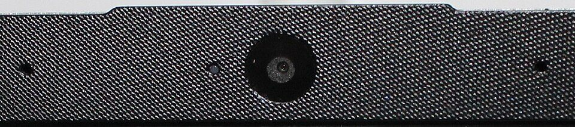
A two-microphone array; the same time-difference principle is used by directional microphones in hearing aids.Image: Zvsmedia, Wikimedia Commons, CC BY-SA 4.0
Background and principle of operation
Signal-to-noise ratio is the level of the wanted signal minus the level of the noise, in dB: SNR = Lspeech − Lnoise. At +5 dB SNR speech is 5 dB above the noise; at −5 dB it is below it. The SNR that a listener needs for 50 % sentence understanding is called the speech reception threshold in noise; the extra SNR a hearing-impaired listener needs compared with normal-hearing listeners is sometimes called SNR loss and varies widely between individuals, which is why clinical speech-in-noise tests are useful.
Stationary noise has statistical properties (level and spectrum) that change slowly: fans, air conditioning, car and engine noise. Non-stationary noise changes quickly: babble from other talkers, cafeteria clatter, music, traffic passing. Stationary noise is easier to estimate and remove. Babble is the hardest case because it has the same spectrum and similar modulations to the target speech.
Noise-reduction algorithms need an estimate of the noise. Common approaches:
Voice activity detection: update the noise estimate only in frames judged to contain no speech.
Minimum statistics (Martin): in each frequency band, the minimum of the smoothed power over a window of about one to two seconds approximates the noise floor, because speech pauses between words and syllables let the level drop to the noise.
Recursive averaging with speech-presence probability: the noise estimate is updated more when speech is unlikely.
Speech has strong slow amplitude modulations at roughly 2 to 10 Hz (the syllable rate) with a large depth between peaks and pauses, whereas steady noise has shallow modulations. Modulation-based noise reduction, widely used in hearing aids, measures the modulation depth and rate in each channel and reduces gain in channels where modulations look noise-like, often more strongly when the overall level is high. The maximum attenuation is limited, by an amount that varies between manufacturers and settings, to avoid audible distortion.
Spectral subtraction (Boll) estimates the noise power spectrum and subtracts it from the noisy power spectrum in each frame, keeping the noisy phase. Wiener filtering applies to each frequency band the gain that minimises the mean-square error between the processed and the clean signal, which depends only on the SNR in that band. Statistical estimators such as the Ephraim and Malah minimum mean-square error short-time spectral amplitude estimator refine this, and introduced the decision-directed estimate of the a priori SNR that reduces musical noise.
Directional microphones exploit the location of sound sources. With two omnidirectional microphones a distance d apart along the front-back axis, sound from the front reaches the front microphone first. If the rear microphone signal is delayed internally by T and subtracted from the front signal, sound arriving from a chosen direction is cancelled. The resulting polar pattern (sensitivity against angle) is first-order: cardioid, supercardioid or hypercardioid depending on T relative to the acoustic travel time d/c. Adaptive directional systems change T continuously to steer the null (the least sensitive direction) towards the strongest noise source behind. Beamformers with more microphones, or with microphones on both ears linked wirelessly (binaural beamforming), can produce narrower beams.
Key ideaA single-microphone noise-reduction gain applied within a frequency band multiplies speech and noise in that band by the same amount, so the SNR within the band does not change. Benefits come from reducing noise-dominated bands relative to speech-dominated bands, reducing loudness and annoyance, and (for directional systems) from genuinely spatial separation.
Architecture and signal flow
Figure 3.4a. Single-channel noise reduction. The side chain estimates noise and SNR in every band and frame and chooses a gain; the main path multiplies and resynthesises.
Figure 3.4b. A two-microphone delay-and-subtract directional system. The internal delay T relative to d/c sets the polar pattern; the equaliser compensates the low-frequency roll-off.
Walk-through of the complete noise-management chain in a typical device:
An environment classifier estimates the acoustic scene (quiet, speech in quiet, speech in noise, noise alone, music, wind) from level, modulation and spectral features.
Directional processing is applied first (it needs the raw microphone signals): omnidirectional in quiet, fixed or adaptive directional in speech-in-noise scenes, sometimes binaural beamforming.
The directional output is analysed into channels. A noise estimator and SNR estimator run in each channel.
A gain rule (modulation-based, Wiener-type or other) computes attenuation per channel, limited by a maximum reduction and smoothed over time and frequency to avoid artefacts.
Noise-reduction gain is combined with the compression gain before synthesis. Wind-noise and transient (impulse) noise reduction may run as separate blocks.
Components
Component
Function
What can go wrong
Environment classifier
Chooses programs and algorithm strength
Misclassification (music treated as noise, soft speech as noise)
Microphone pair
Spatial sampling for directionality
Blocked port or sensitivity mismatch destroys the null; the aid silently becomes nearly omnidirectional
Directional processor / beamformer
Attenuates sound from sides and rear
Talker behind or beside the listener attenuated; reduced benefit in reverberant rooms and with open fittings
Noise estimator
Tracks the noise spectrum
Too slow for changing noise; overestimates noise in continuous speech
Gain rule and floor
Maps SNR to attenuation
Too aggressive: speech distortion, musical noise; too mild: little effect
Wind and impulse-noise blocks
Special-case suppression
Speech onsets or music transients attenuated
Key parameters and specifications
Parameter
Typical value or range
Clinical meaning
Microphone port spacing
roughly 5 to 15 mm
Smaller spacing: more low-frequency roll-off and more amplified microphone noise after equalisation
Directivity index, first order (theory, free field)
cardioid 4.8 dB, supercardioid 5.7 dB, hypercardioid 6.0 dB
Upper bound; values on the head and in rooms are lower and vary with frequency
Null direction
cardioid 180°; hypercardioid about 110°
Direction of greatest attenuation; adaptive systems move it
Maximum noise-reduction attenuation
often several dB up to around 15 dB, manufacturer dependent
Stronger settings increase comfort but risk speech distortion
Noise-estimate window
about 1 to 2 s (minimum statistics)
Sets how fast the system adapts to a change in noise
Speech modulation rates
about 2 to 10 Hz
Basis for modulation-based detection of speech
Onset time of noise reduction
from under a second to several seconds
Explains why clients notice noise first, then a gradual reduction
Algorithms and equations
Y(k,m) = S(k,m) + N(k,m)
γ = |Y|² / λ_N ξ = E|S|² / λ_N
where Y, S and N are the noisy, speech and noise spectra in band k and frame m, λ_N the estimated noise power, γ the a posteriori SNR and ξ the a priori SNR (both as power ratios, not dB).
G_Wiener = ξ / (1 + ξ)
G_power-sub = √(max(1 − α/γ, β))
Ŝ(k,m) = G(k,m) × Y(k,m)
where α ≥ 1 is an over-subtraction factor, β a spectral floor (for example β = 0.063 limits attenuation to 12 dB in power terms), and the noisy phase is kept.
Worked example (Wiener gain): at ξ = 10 dB (ratio 10), G = 10/11 = 0.909, which is −0.83 dB. At ξ = 0 dB (ratio 1), G = 0.5, which is −6.0 dB. At ξ = −10 dB (ratio 0.1), G = 0.1/1.1 = 0.0909, which is −20.8 dB. For comparison, power spectral subtraction with α = 1 and γ = 1 + ξ gives √0.5 = 0.707 (−3.0 dB) at ξ = 0 dB: it is gentler than Wiener at every SNR.
ξ(m) = a G²(m−1) γ(m−1) + (1 − a) max(γ(m) − 1, 0)
the decision-directed a priori SNR estimate, with a typically close to 1 (about 0.98), so ξ changes smoothly from frame to frame.
Worked example (two bands, broadband SNR). Band A: speech 60 dB, noise 50 dB (ξ = 10). Band B: speech 40 dB, noise 60 dB (ξ = 0.01). Before processing, total speech power is 106 + 104 and total noise power is 105 + 106, so broadband SNR = 10 log10(1.01 × 106 / 1.1 × 106) = −0.37 dB. Wiener gains are 0.909 in A and 0.0099 in B. After processing, speech is 59.2 dB and noise 49.2 dB, so broadband SNR = +10.0 dB. Yet the SNR inside each band is unchanged (+10 dB in A, −20 dB in B). The large broadband "improvement" comes from removing band B, which also removes the speech information it carried. With a realistic 12 dB attenuation limit, the result is +7.5 dB broadband SNR.
first-order pattern: R(θ) = a + (1 − a) cos θ
a = T / (T + d/c)
where θ is the angle of arrival (0° = front), T the internal delay, d the port spacing and c ≈ 343 m/s. a = 0.5 gives a cardioid (T = d/c), a = 0.25 a hypercardioid (T = d/3c).
Worked example: d = 12 mm gives d/c = 0.012/343 = 35.0 µs, so a cardioid needs T = 35 µs, less than one sample period at 16 kHz (62.5 µs); fractional-delay filters are used. For frontal sound the two signals are 2d/c = 70 µs apart, and the difference output relative to a single microphone is 2 sin(π f × 70 µs): −13.2 dB at 500 Hz and +3.8 dB at 4 kHz. The 17 dB difference over three octaves is the 6 dB/octave roll-off that the equaliser must compensate, which also boosts microphone noise at low frequencies.
Artefacts: musical noise and speech distortion
The noisy power in each band fluctuates randomly around the noise mean. When a fixed noise estimate is subtracted, most bands fall to the floor but a few random peaks survive. These isolated peaks come and go in each frame at random frequencies and are heard as short tonal "twinkling" sounds, called musical noise. It can be more annoying than the original noise. Remedies include over-subtraction (α > 1) with a spectral floor, smoothing gains across time and frequency, the decision-directed SNR estimate, and limiting maximum attenuation. Aggressive gain rules also attenuate weak speech components such as soft high-frequency consonants and word endings, which is speech distortion. There is always a trade-off between noise attenuation and speech distortion.
Comfort versus intelligibility
The published evidence, summarised in reviews such as Bentler and Chiou and in hearing-aid textbooks, supports these cautious conclusions:
Single-microphone noise reduction in hearing aids generally improves listening comfort and reduces annoyance, and some studies report reduced listening effort, but it has not been shown to give consistent improvements in speech intelligibility in noise. It should be presented to clients as a comfort feature.
Directional microphones can improve speech understanding in noise when the talker is in front, the noise comes from other directions, and the listener is fairly close to the talker. Laboratory benefits of a few dB in SNR are common; benefits in everyday reverberant rooms, with open fittings or with talkers to the side are usually smaller.
Remote microphones, streaming and loop systems improve SNR more than on-device processing because they pick up the talker close to the mouth.
Deep-neural-network (DNN) methods trained on large speech and noise datasets can separate speech from non-stationary noise better than classical methods in research settings; how well these results carry over to low-delay, low-power hearing aids and to everyday listening is still being established.
Common errorDo not promise that noise reduction will make speech clearer in a restaurant. Explain that it makes noise less tiring, that directionality helps most when facing the talker, and that a remote microphone is the strongest option for difficult situations.
Try it: noise-reduction gain rules
The upper graph shows gain against a priori SNR for three rules; the lower graph shows a speech-plus-noise spectrum in 16 bands before and after the selected rule is applied (using the true SNR in each band).
Broadband SNR before
Broadband SNR after
Bands attenuated by more than 3 dB
Speech level change
Selected rule / processed outputClean speechNoiseNoisy input or other rules
Observe that the broadband SNR rises when noise-dominated bands are turned down, but the speech level also falls in those bands. In a real device the SNR per band is estimated, not known, so gains are less accurate than in this demonstration.
Clinical applications
Counselling: explain what noise reduction and directionality do, where the client should sit (back to the noise, facing the talker) and when to use a remote microphone.
Fitting: choose automatic or manual directional programs; set noise-reduction strength according to the client's comfort and sound-quality reports.
Verification: some probe-microphone systems let you present speech from the front and noise from behind and compare directional and omnidirectional output, or measure noise-reduction effect over time. Test-box directional measurements check that both microphones work.
Troubleshooting: loss of directional benefit is often a blocked microphone port; clean or replace microphone covers.
Evaluation: speech-in-noise tests (for example sentence tests with adaptive SNR) and questionnaires on comfort and effort document outcomes.
Limitations, errors and troubleshooting
Problem
Cause
What to check or do
No benefit in noise with directional program
Blocked port, mismatched microphones, talker not in front, reverberant room
Clean ports, test directional response in a test box, counsel on positioning
Soft or distant speech disappears
Noise reduction or expansion treating speech as noise
Reduce noise-reduction strength or expansion; check classifier behaviour
Use omnidirectional mode in quiet (automatic switching)
Music sounds dull
Music treated as noise
Use a dedicated music program with noise reduction off
Wind noise outdoors
Turbulence at microphone ports
Enable wind-noise reduction; recommend a hat or cover; omnidirectional mode in wind
Demonstration
Equipment: speech recording, a noise recording (steady noise and babble), Python with NumPy and SciPy (or MATLAB) for a simple spectral subtraction or Wiener filter, Praat or Python for spectrograms, and the interactive demo above. Optionally a hearing aid with a directional program and a test box or two loudspeakers.
Mix speech with steady noise at 0 dB SNR and play it. Show the waveform and spectrogram.
Apply a Wiener filter with a noise estimate from a speech-free segment. Play the result and show the spectrogram: noise between harmonics and in pauses is reduced.
Set the attenuation limit very high and remove the spectral floor. Play again so students hear musical noise.
Repeat with babble noise and show that performance falls because the noise estimate cannot follow the babble.
Use the demo to show that per-band gain changes the broadband SNR but not the SNR inside each band.
If available, show a directional program: place the aid on a stand with a loudspeaker in front and behind, and compare output levels for each loudspeaker in omnidirectional and directional modes.
Students observe: noise reduction improves the sound of noise more than the clarity of speech; directionality depends on geometry.
import numpy as np
for xi_db in (10, 0, -10):
xi = 10 ** (xi_db / 10)
g_w = xi / (1 + xi)
g_p = np.sqrt(xi / (1 + xi))
print(xi_db, round(20 * np.log10(g_w), 2), round(20 * np.log10(g_p), 2))
10 -0.83 -0.41
0 -6.02 -3.01
-10 -20.83 -10.41
Current developments
Deep-neural-network noise reduction running on dedicated low-power hardware in hearing aids, with the challenges of short latency, battery use and generalisation to unfamiliar environments.
Binaural beamforming using microphones on both ears through a wireless link, with methods to preserve spatial cues for localisation.
Scene classification with machine learning, and user-adjustable noise settings through smartphone apps.
Integration of external microphones, streaming and broadcast audio (such as Auracast) as the most direct way to improve SNR.
Outcome measures that include listening effort (questionnaires, dual-task and physiological measures such as pupillometry) in addition to intelligibility.
Practical activity and assessment
Practical P6: critical review of comfort versus intelligibility.
Select two peer-reviewed studies or reviews on hearing-aid noise reduction or directional microphones.
For each, record the algorithm type, test conditions (noise type, SNR, room, fitting), outcome measures (intelligibility, comfort, effort) and the main findings.
Run the demonstration code or the interactive demo and describe what you observe in the spectrum and in the SNR readouts.
Write a 500-word critical review: which benefits are about comfort, which about intelligibility, and what you would tell a client.
Deliverable: the review with a comparison table and one annotated spectrogram before and after processing.
References
Kates, J. M. Digital Hearing Aids. Plural Publishing.
Dillon, H. Hearing Aids (2nd ed.). Boomerang Press / Thieme.
Loizou, P. C. Speech Enhancement: Theory and Practice. CRC Press.
Boll, S. F. (1979). Suppression of acoustic noise in speech using spectral subtraction. IEEE Transactions on Acoustics, Speech, and Signal Processing.
Ephraim, Y., Malah, D. (1984). Speech enhancement using a minimum mean-square error short-time spectral amplitude estimator. IEEE Transactions on Acoustics, Speech, and Signal Processing.
Martin, R. (2001). Noise power spectral density estimation based on optimal smoothing and minimum statistics. IEEE Transactions on Speech and Audio Processing.
Bentler, R., Chiou, L.-K. (2006). Digital noise reduction: an overview. Trends in Amplification.
Ricketts, T. A. (2001). Directional hearing aids. Trends in Amplification.
Chung, K. (2004). Challenges and recent developments in hearing aids. Part I. Speech understanding in noise, microphone technologies and noise reduction algorithms. Trends in Amplification.
Wang, D., Chen, J. (2018). Supervised speech separation based on deep learning: an overview. IEEE/ACM Transactions on Audio, Speech, and Language Processing.
Praat: https://www.praat.org
NumPy: https://numpy.org
3.5
Feedback cancellation
1 hour09.10.2026Practical P6
Acoustic feedback is the whistling that occurs when amplified sound leaks from the ear canal back to the hearing-aid microphone and is amplified again. It limits the gain that can be given, especially with open or vented fittings. Modern hearing aids use adaptive feedback cancellation to estimate and subtract the leaked sound, adding usable gain; audiologists still control the physical factors that decide how much feedback there is to cancel.
What it is
A set of methods that prevent or remove oscillation in the closed loop formed by microphone, amplifier, receiver and the leakage path back to the microphone: physical control of the leakage, gain reduction, notch filters, frequency shifting and adaptive cancellation.
Why it is required
Without it, the maximum gain before whistling may be below the prescribed gain, particularly at 2 to 5 kHz where speech clarity cues lie and where many losses are greatest. Feedback also causes embarrassment, discomfort and rejection of hearing aids, and sub-oscillatory feedback colours the sound even when no whistle is heard.
How it works
An adaptive digital filter driven by the receiver signal forms a running model of the feedback path. Its output, the predicted feedback at the microphone, is subtracted from the microphone signal before amplification. The filter coefficients are updated continuously by an LMS-type algorithm so that the model follows changes such as jaw movement or a hand near the ear.
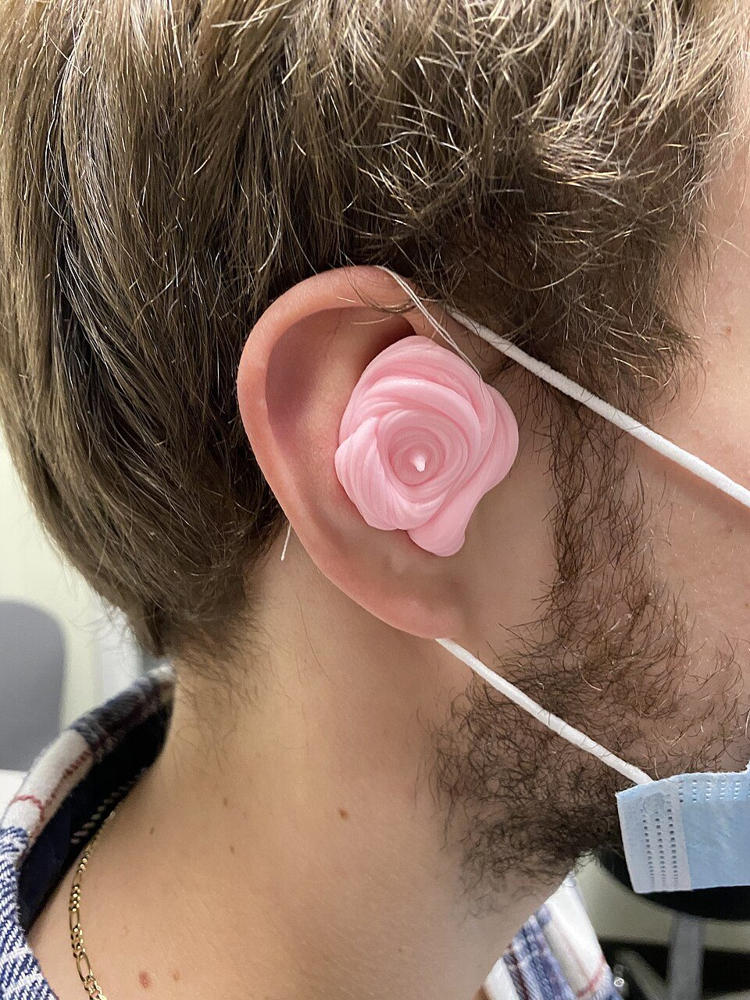
Taking an ear impression for a custom earmould. The fit and venting of the mould strongly affect the acoustic feedback path.Image: Seanhov, Wikimedia Commons, CC BY-SA 4.0
Background and principle of operation
A hearing aid forms a closed loop. Sound from the receiver leaks back to the microphone through the vent, through leaks between the earmould or dome and the canal wall, through the shell or case as vibration, and sometimes electrically or magnetically. The leakage is described by the feedback path F(f), a transfer function whose magnitude is usually expressed as an attenuation in dB and which also has a phase (a delay). The hearing aid itself is the forward path G(f), with gain and processing delay.
The product L(f) = G(f) F(f) is the open-loop gain or simply loop gain. In dB, the loop gain magnitude is the hearing-aid gain minus the feedback path attenuation. Sound going once around the loop is multiplied by L. Oscillation (a sustained whistle) occurs when, at some frequency, the loop gain magnitude is at least 1 (0 dB) and the loop phase is a whole multiple of 360°, so each pass adds to the previous one in step. This is the Barkhausen condition. The Nyquist stability criterion states the general rule: plotting L(f) in the complex plane as frequency sweeps, the system becomes unstable when this curve encircles the critical point where the loop gain equals exactly 1 with zero phase. Intuitively, if the loop gain is below 0 dB at every frequency, the sound dies away on each pass whatever the phase, so the aid is stable.
Because the total loop delay (processing delay plus acoustic travel) is several milliseconds, the loop phase rotates rapidly with frequency: phase = −360° × f × τ. With τ = 5 ms the phase condition is met every 1/τ = 200 Hz. In practice, therefore, if the loop gain exceeds 0 dB anywhere over a range wider than a couple of hundred hertz, a whistle is almost certain. The maximum stable gain (MSG) at each frequency is approximately equal to the feedback path attenuation there. The gain margin is how far the loop gain lies below 0 dB.
Before a whistle starts, a loop gain close to 0 dB already changes the sound: where loop phase is near 0° the closed-loop response has peaks, and where it is near 180° it has dips. This sub-oscillatory feedback produces a ringing, metallic or "tinny" quality and should be avoided by keeping a gain margin of several dB.
Types of feedback:
Acoustic feedback: sound leaks through vents, slit leaks or open domes, or from a cracked or loose tube. This is the most common type and is the one that fitting choices control.
Mechanical feedback: receiver vibration is transmitted through the case, shell or tubing to the microphone. Receiver suspension and mounting reduce it; it is a particular issue in high-power devices.
Electrical or magnetic feedback: the receiver's magnetic field couples into the telecoil, or signals couple between circuit wires. It is controlled by design (component layout, shielding).
Architecture and signal flow
Figure 3.5a. The feedback loop and an adaptive feedback canceller. The top path is the physical leakage; the bottom path is the canceller's model of it. The error e(n) (dashed) drives adaptation.
Walk-through, following the numbered intervention points that students should mark on their own drawing:
The physical feedback path (top): the first and most powerful place to intervene. Smaller vents, better-fitting moulds or domes, intact tubing and secure receivers increase the path attenuation.
The microphone picks up the wanted sound x(n) plus the feedback f(n). Microphone placement relative to the vent outlet matters (for example in-the-ear styles with the vent near the microphone).
The canceller (bottom) takes a copy of the receiver signal u(n), filters it through its estimate W of the feedback path, and produces y_hat(n), the predicted feedback.
The subtraction removes the predicted feedback; ideally e(n) contains only x(n).
The forward path can reduce gain in the channels where feedback is likely (gain limits set by a feedback test at fitting), apply notch filters, or apply a small frequency shift or decorrelating delay.
Adaptation: e(n) and u(n) are used to update W so that it follows changes in the real path.
Components
Method or element
How it works
Drawbacks
Physical control (vent, fit, coupling)
Increases feedback path attenuation
Smaller vents increase occlusion; tighter fit may reduce comfort
Gain reduction in feedback-prone channels
Keeps loop gain below 0 dB with a margin
Loses high-frequency gain and audibility
Notch filtering
Detects a growing narrow-band peak and inserts a narrow notch at that frequency
Acts only after feedback starts; may notch musical tones; small added gain because a new peak appears nearby
Frequency shifting or phase modulation
Shifts output frequency slightly so each pass round the loop lands at a different frequency, preventing build-up
Audible for pure tones and music; limited added gain on its own
Estimates the feedback signal and subtracts it before amplification
Entrainment with tonal inputs; residual chirps; needs decorrelation and constrained adaptation
Initial feedback path measurement
At fitting the aid plays a test signal and measures the path in the ear
Must be repeated when the coupling changes (new dome, remade mould)
Key parameters and specifications
Parameter
Typical value or range
Clinical meaning
Frequency region of feedback
most often about 2 to 5 kHz
Where receiver output, gain and leakage combine; the region most at risk
Feedback path attenuation
varies widely: lower with open domes and large vents, higher with closed moulds
Sets the maximum stable gain without cancellation
Recommended gain margin
several dB (often about 3 to 6 dB or more)
Avoids sub-oscillatory colouration and whistling with movement
Total loop delay
a few ms (processing plus acoustic)
Sets how closely phase-aligned frequencies are spaced (1/τ)
Added stable gain (ASG) from cancellation
varies widely between devices and conditions
Extra usable gain; independent tests show large differences between systems
Frequency shift (where used)
small, of the order of hertz to tens of hertz
Larger shifts break the loop better but become audible
Adaptation step size μ
small; manufacturer tuned
Fast adaptation tracks changes but increases entrainment and artefacts
Algorithms and equations
Closed loop: H(f) = G(f) / (1 − G(f) F(f))
Loop gain (dB) = G_dB(f) − A_dB(f)
Stable if |G(f) F(f)| < 1 at all f
where G is the forward-path gain, F the feedback path, A_dB = −20 log10|F| the feedback path attenuation and H the overall response from sound to receiver.
Worked example (gain margin): at 3 kHz the aid's gain is 45 dB and the feedback path attenuation measured with the client's mould is 50 dB. Loop gain = 45 − 50 = −5 dB: stable with a 5 dB margin. If the client is refitted with a larger vent giving 38 dB attenuation, loop gain = +7 dB and the aid whistles. A canceller providing 10 dB of added stable gain raises the effective attenuation to 48 dB, giving loop gain −3 dB: stable again, but with a smaller margin.
peak = 1 / (1 − |L|) dip = 1 / (1 + |L|)
the closed-loop change in response at frequencies where the loop phase is 0° (peak) or 180° (dip), for a loop gain |L| below 1.
Worked example (sub-oscillatory feedback): with a loop gain of −3 dB (|L| = 0.708), the peaks are 1/0.292 = 3.42 times, which is +10.7 dB, and the dips are 1/1.708 = 0.585, which is −4.7 dB. At −6 dB (|L| = 0.501) the peaks are +6.0 dB. This is why a gain margin of several dB is needed even when no whistle is heard.
phase(f) = −360° × f × τ spacing = 1 / τ
where τ is the total loop delay; the in-phase frequencies are spaced 1/τ apart.
Worked example: τ = 4 ms gives in-phase frequencies every 250 Hz. A region of positive loop gain 1 kHz wide around 3 kHz therefore contains about four candidate whistle frequencies.
y_hat(n) = w(n)ᵀ u(n)
e(n) = y(n) − y_hat(n)
LMS: w(n+1) = w(n) + μ e(n) u(n)
NLMS: w(n+1) = w(n) + μ e(n) u(n) / (δ + u(n)ᵀu(n))
where u(n) = [u(n), u(n−1), ... u(n−L+1)] is the vector of recent receiver samples, w(n) the L filter coefficients, y(n) the microphone sample, μ the step size and δ a small constant that prevents division by zero.
Worked example (one NLMS update with L = 2): w = [0.10, 0.05], u = [0.5, −0.2], microphone sample y = 0.08, μ = 0.1, δ = 0.01. Predicted feedback y_hat = 0.10 × 0.5 + 0.05 × (−0.2) = 0.05 − 0.01 = 0.04. Error e = 0.08 − 0.04 = 0.04. Normalisation: uᵀu = 0.25 + 0.04 = 0.29, so μ/(δ + 0.29) = 0.1/0.30 = 0.333. Update = 0.333 × 0.04 × [0.5, −0.2] = [0.00667, −0.00267]. New w = [0.1067, 0.0473]. The coefficients move so that the next prediction is closer to the measured microphone signal. Normalisation makes the adaptation speed independent of the output level, which matters because hearing-aid output varies by tens of dB.
Entrainment, bias and decorrelation
The LMS update assumes that the only part of y(n) correlated with u(n) is the feedback. For speech and noise this is roughly true over short times. For tonal or highly predictable inputs (a sustained musical note, a flute, alarm beeps, a telephone tone) the receiver output is strongly correlated with the incoming sound, so the filter partly learns to predict and cancel the input itself. This entrainment (bias) produces artefacts: the tone is attenuated or warbles, or chirping and whistling appear briefly. Remedies used in hearing aids include:
Decorrelation: a processing delay in the forward path, a small frequency shift or phase modulation, or adding a low-level probe noise, so the output differs from the input.
Prediction-error methods: pre-whitening filters remove the predictable (tonal) structure before the update.
Constrained or slowed adaptation: coefficients are kept near the feedback path measured at fitting, and the step size is reduced when tonal input is detected.
Combining methods: cancellation for most of the added gain, with gain limits or notches as a safety net.
Clinical linkA client who reports "chirps" when a phone rings, or that the aid seems to "eat" some notes of music, is often describing entrainment. A music program with slower or modified feedback cancellation, and reduced gain in the feedback region, can help.
Try it: loop gain and added stable gain
Choose a vent, set the hearing-aid gain and the canceller's added stable gain; frequencies where the loop gain comes within 6 dB of 0 dB are marked, and those above 0 dB whistle. The feedback-path values are an illustrative model, not measurements.
Maximum loop gain
At frequency
Maximum stable gain at 3 kHz
Status
Hearing-aid gainEffective feedback path attenuationLoop gainWithin 6 dB of 0 dBAbove 0 dB
The lower graph shows how feedback changes the aid's response, assuming a 4 ms loop delay. As the loop gain approaches 0 dB the ripple grows into sharp peaks; once it exceeds 0 dB the loop is unstable and the aid whistles.
Clinical applications
Run the manufacturer's feedback test (feedback path measurement) with the aid in the client's ear after every change of dome, mould, tube or vent, so the gain limits and canceller start from the real path.
Select coupling to match gain needs: open domes for mild high-frequency losses; closed or power domes, or custom moulds with smaller vents, when more high-frequency gain is needed.
Check whether the prescribed high-frequency gain is achievable: fitting software often shows a feedback limit line; verify with probe-microphone measurement that targets are met without whistling.
Handle whistling during insertion or with a phone or hat near the ear: counsel the client, check telephone program settings, and check that the canceller is active.
Refer for a new mould when weight loss, ageing or growth of a child's ear causes slit leaks; children need frequent mould replacement for this reason.
Look for wax: cerumen in the canal can reflect sound and make feedback worse; otoscopy is part of feedback troubleshooting.
Normal to some degree; use phone program or streaming; check canceller setting
New whistling in a previously stable fitting
Cracked or hardened tube, loose receiver, changed dome, wax
Inspect tubing and dome, otoscopy, replace parts, re-run feedback test
Chirps with music or tones
Entrainment of the adaptive filter
Music program with modified cancellation; reduce gain in feedback region
High-frequency targets cannot be reached
Maximum stable gain lower than prescribed gain
Reduce vent size or change coupling; accept a documented compromise; consider frequency lowering
Metallic or ringing sound quality
Sub-oscillatory feedback (small gain margin)
Reduce gain by a few dB in the affected channel; improve fit
Whistle when aid is in the hand or case
Expected: no ear canal, very low path attenuation
Counsel the client; switch off or insert before switching on
Demonstration
Equipment: a hearing aid (demonstration unit), a 2 cm³ coupler or ear simulator, a test box or a quiet table, fitting software, and the interactive demo. Python can be used for a simple NLMS simulation.
SafetyFeedback oscillation can reach the aid's maximum output. Demonstrate with the aid on a coupler or in the hand, never in a person's ear, and keep the gain and MPO at safe levels. Do not point the aid close to anyone's ear while it is oscillating.
With the aid coupled to a coupler (closed), raise the gain until just below the whistle. Then partly uncouple the tube or open a leak: the path attenuation falls and the aid whistles. Students hear that the whistle frequency is typically in the 2 to 5 kHz region.
Turn the feedback canceller on in the fitting software and repeat: more gain is possible before whistling. Estimate the added stable gain in dB from the gain settings.
Play a pure tone or a flute recording near the aid with the canceller active and listen for artefacts (entrainment).
Use the demo: choose a 1 mm vent and 40 dB gain; increase gain until markers appear. Switch to an open dome and see the maximum stable gain fall. Add 10 dB of canceller ASG and see stability return.
Show a simplified NLMS feedback-cancellation simulation (Python or MATLAB): a known feedback path, white-noise input, and the estimated coefficients converging over time.
Students observe: feedback depends on the product of gain and leakage; cancellation adds gain but not without limits or artefacts.
import numpy as np
w = np.array([0.10, 0.05]) # current estimate of the feedback path
u = np.array([0.5, -0.2]) # recent receiver samples
y = 0.08 # microphone sample
mu, delta = 0.1, 0.01
y_hat = w @ u
e = y - y_hat
w = w + mu * e * u / (delta + u @ u)
print(round(y_hat, 4), round(e, 4), np.round(w, 4))
0.04 0.04 [0.1067 0.0473]
Current developments
Faster and more robust adaptive cancellation that tracks rapid path changes (for example a phone brought to the ear) with fewer artefacts on music.
Use of both microphones, or both ears' signals, in feedback estimation.
Combination of cancellation with slight frequency shifting or phase modulation for decorrelation, tuned to be inaudible for most signals.
Wider-bandwidth devices and open fittings that place greater demands on feedback control above 5 kHz.
Objective test methods for comparing feedback-control performance between devices, since added stable gain depends strongly on the test conditions.
Practical activity and assessment
Practical P6: draw the feedback loop and identify intervention points.
Draw the closed loop: incoming sound, microphone, subtraction, forward path, receiver, feedback path, and the adaptive filter.
Mark at least five points where feedback can be reduced (coupling and vent, microphone location, gain limit, notch or frequency shift, adaptive cancellation) and write one advantage and one disadvantage for each.
For a client needing 50 dB of gain at 3 kHz, calculate the loop gain with feedback path attenuations of 55 dB, 45 dB and 35 dB, and the added stable gain a canceller would need in each case to keep a 5 dB margin. (Check values: −5 dB, +5 dB and +15 dB loop gain; needed ASG 0, 10 and 20 dB.)
Use the interactive demo to confirm your answers qualitatively.
Deliverable: an annotated diagram with the calculation and a short paragraph on which intervention you would try first and why.
References
Kates, J. M. Digital Hearing Aids. Plural Publishing.
Dillon, H. Hearing Aids (2nd ed.). Boomerang Press / Thieme.
Spriet, A., Doclo, S., Moonen, M., Wouters, J. (2008). Feedback control in hearing aids. In Benesty, J., Sondhi, M. M., Huang, Y. (eds.), Springer Handbook of Speech Processing. Springer.
Siqueira, M. G., Alwan, A. (2000). Steady-state analysis of continuous adaptation in acoustic feedback reduction systems for hearing-aids. IEEE Transactions on Speech and Audio Processing.
Freed, D. J., Soli, S. D. (2006). An objective procedure for evaluation of adaptive antifeedback algorithms in hearing aids. Ear and Hearing.
Chung, K. (2004). Challenges and recent developments in hearing aids. Part II. Feedback and occlusion effect reduction strategies, laser shell manufacturing processes, and other signal processing technologies. Trends in Amplification.
Haykin, S. Adaptive Filter Theory. Prentice Hall / Pearson.
Manufacturer technical documentation on feedback management.
3.6
Basic architecture of a cochlear implant
1 hour15.10.2026Practical P7
A cochlear implant (CI) replaces the function of missing or damaged inner hair cells by delivering controlled pulses of electric current directly to the auditory nerve. This topic follows the complete path from sound at the microphone to current at the spiral ganglion, and explains the parameters that an audiologist sets and checks when programming and troubleshooting a device.
What it is
A two-part medical device. An external sound processor worn on the head analyses sound and sends coded instructions, together with power, across the skin by radio-frequency (RF) induction. A surgically implanted receiver-stimulator decodes these instructions and drives an array of electrodes placed inside the scala tympani of the cochlea.
Why it is required
In severe to profound sensorineural hearing loss, most of the loss arises from hair-cell damage. A hearing aid can only make sound louder at the eardrum; if the transducers of the cochlea are missing, extra acoustic gain gives little additional speech understanding. Electric stimulation bypasses the hair cells and excites the surviving spiral ganglion neurons directly.
How it works
Microphones convert sound to voltage. A digital processor splits the signal into frequency channels, extracts each channel's envelope and compresses it into the narrow electric dynamic range of the listener. The resulting sequence of pulses is sent over an inductive link. Inside, current sources deliver charge-balanced biphasic pulses to electrodes placed at tonotopically appropriate places, so that high frequencies stimulate basal and low frequencies apical nerve fibres.
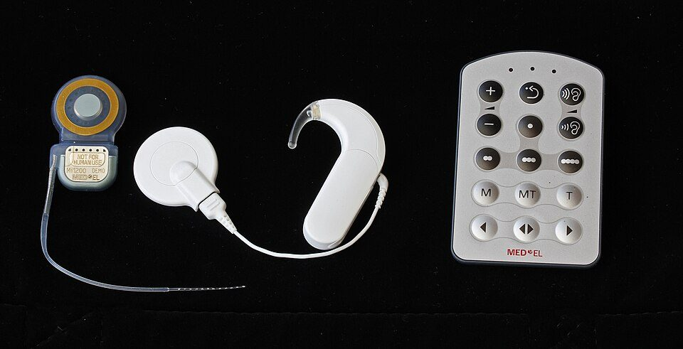
Cochlear implant components: implant with electrode array, coil and magnet, external speech processor and remote control.Image: Thomas.haslwanter, Wikimedia Commons, CC BY-SA 4.0
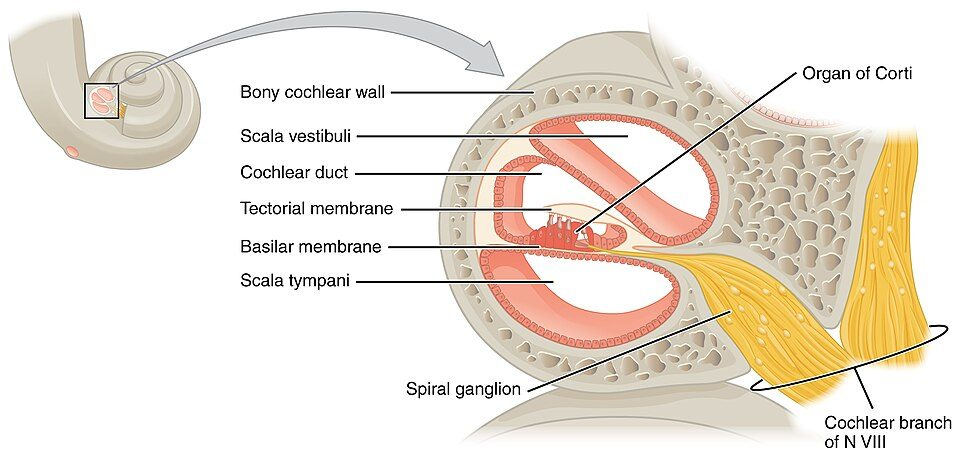
Cross-section of the cochlea showing the scala vestibuli, scala media and scala tympani, where the electrode array is placed.Image: OpenStax, Wikimedia Commons, CC BY 4.0
Background and principle of operation
In a normal cochlea, the travelling wave on the basilar membrane peaks at a place that depends on frequency, and inner hair cells at that place release neurotransmitter that triggers action potentials in the auditory nerve fibres (spiral ganglion neurons) connected to them. This place coding is called tonotopy: the base of the cochlea responds best to high frequencies and the apex to low frequencies. Timing information is also carried by neural firing that follows the waveform (phase locking) up to roughly a few kilohertz.
When inner hair cells are lost, the auditory nerve fibres can survive for years, although their peripheral processes (dendrites) often degenerate. A neuron can be made to fire by an external electric field that depolarises its membrane beyond threshold. A CI exploits this: it places electrode contacts close to the nerve fibres and passes current through the perilymph and surrounding tissue. The current spreads in the conductive fluid, so each contact excites a population of neurons over a region of the cochlea, not a single fibre.
Four ideas underpin the whole design:
Place coding by electrode position. Each intracochlear contact is assigned to a frequency band. A contact near the base receives the high-frequency band, a contact nearer the apex a lower band. The listener hears different pitches when different contacts are stimulated.
Temporal coding by pulse timing and envelope. The amplitude of successive pulses on a channel follows the slowly varying envelope of that band. Rate and modulation information carry some temporal cues, although electric hearing represents fine temporal structure much less precisely than acoustic hearing.
Loudness by charge. Loudness grows with the charge delivered per pulse (current × phase duration) and with pulse rate. The range between the softest audible stimulation and the loudest comfortable stimulation is small, typically of the order of 5 to 20 dB in current, compared with more than 100 dB of acoustic dynamic range in normal hearing. The processor therefore compresses the acoustic range heavily.
Safety by charge balance. Net direct current damages tissue and corrodes electrodes. Every stimulus is a biphasic pulse whose second phase returns the charge delivered by the first, and coupling capacitors or active checks prevent any residual DC flow.
DefinitionThreshold level (T level): the lowest current on a channel that produces a just audible sensation. Comfort level (C level, called M level or most comfortable level in some systems): the highest current that is loud but comfortable. The electric dynamic range is the interval between T and C, often expressed in dB of current.
Architecture and signal flow
Figure 3.6a. Functional architecture of a cochlear implant system. Everything left of the skin flap is worn and replaceable; everything to the right is implanted. The forward RF link carries both power and stimulation data; the back-telemetry link returns measurements such as electrode impedances and evoked neural responses.
The signal path, block by block:
Microphones. Usually two omnidirectional microphone ports on the processor, sometimes with an additional microphone placed at the ear canal entrance or on an accessory. Two ports allow directional processing (beamforming), as in hearing aids. Sensitivity is set so that ordinary conversational levels (about 60 to 65 dB SPL) sit within the processor's analysis range.
Front-end processing. Pre-amplification, analogue-to-digital conversion (commonly 16 kHz or higher sampling), pre-emphasis, automatic gain control and optional noise reduction or directional processing. The input dynamic range (IDR) window, typically 40 to 60 dB wide, determines which acoustic levels are mapped between T and C.
Speech processing strategy. A bank of band-pass filters (or an FFT) divides the signal into as many analysis channels as there are active electrodes, the envelope of each band is extracted, and a strategy decides which channels are stimulated in each frame (topic 3.7).
Mapping. Each channel's envelope is converted to a current level between that electrode's T and C levels with a compressive (roughly logarithmic) function. The set of T and C levels, frequency allocations, rate and pulse width stored in the processor is called the map or programme.
Encoding and RF transmission. For each pulse the processor encodes the electrode number, reference electrode, current amplitude and phase width into a digital data stream. This stream modulates an RF carrier that drives the transmitting coil. A magnet in the centre of the coil holds it over the implanted receiver coil.
Transcutaneous inductive link. The transmitting and receiving coils form a loosely coupled transformer across the skin. The implant has no battery in most current designs: it rectifies the received RF energy to generate its own supply voltage, and demodulates the same carrier to recover the data. Coupling falls as the coil separation (skin flap thickness) increases, which is why flap thickness is limited by manufacturer guidance and the magnet strength must be chosen for the individual.
Receiver-stimulator. A hermetically sealed electronics package (titanium or ceramic housing) placed in a bed drilled in the temporal bone. It contains the receiving coil, rectifier and regulator, data decoder, a controller, one or more programmable current sources, a switching matrix that connects the current sources to the chosen electrode pair, DC-blocking capacitors and telemetry circuits.
Electrode array. A flexible silicone carrier with platinum or platinum-iridium contacts, inserted through the round window or a cochleostomy into the scala tympani. Commercial arrays have between 12 and 22 intracochlear contacts, differing in length, stiffness and whether they are designed to lie along the lateral wall or wrap close to the modiolus (perimodiolar).
Reference (ground) electrodes. Extracochlear electrodes, typically a ball electrode placed under the temporalis muscle and/or a contact on the receiver-stimulator case, complete the current path in monopolar stimulation.
Auditory nerve. Current flowing from the active contact depolarises nearby spiral ganglion neurons. Action potentials travel via the auditory nerve to the cochlear nucleus and the central auditory pathway.
Stimulation modes and the biphasic pulse
The current path is defined by which electrodes act as source and sink:
Monopolar (MP)
Active contact inside the cochlea, return path to a distant extracochlear reference.
Current spreads widely, so thresholds are low and power consumption is modest.
The default mode in most current clinical programming.
Spatial selectivity is limited: neighbouring channels excite overlapping neural populations.
Bipolar (BP) and common ground (CG)
BP: active and return contacts are both inside the cochlea, one or more positions apart.
The field is more local in principle, but higher currents are needed to reach threshold.
CG: one contact is active and all other intracochlear contacts are tied together as the return; mainly used for impedance and short-circuit checks.
Tripolar and partial tripolar configurations are research tools for sharper fields.
Figure 3.6b. Biphasic, charge-balanced current pulses on one channel. The charge per phase equals amplitude × phase width; the second phase has the same area with opposite sign. The interval between successive pulses on the same channel sets the per-channel stimulation rate.
Components
Component
Function
What can go wrong
Microphones and ports
Pick up sound; two ports enable directionality
Blocked or damp ports, worn protective covers, reduced sensitivity; the user reports soft or distorted sound
Sound processor
Analysis, strategy, mapping, encoding; stores maps, programmes and logging data
Powers the processor and, through the RF link, the implant
Short battery life with thick flaps or high current levels, poor contacts, depleted rechargeable cells
Coil, cable and magnet
Transmit power and data; magnet keeps coil aligned
Broken cable (intermittent sound), magnet too weak (coil falls off) or too strong (skin redness, pressure sores)
Receiver coil and electronics package
Recover power and data, generate controlled currents, telemetry
Hard failure (no link), soft failure (intermittent or abnormal percepts), impact damage
Internal magnet
Retains the external coil
Displacement or discomfort in MRI; must follow manufacturer MR-conditional instructions
Intracochlear electrode contacts
Deliver current to the nerve at tonotopic places
Open circuit (very high impedance), short circuit between contacts, extracochlear contacts after partial insertion or migration
Reference electrodes
Return path for monopolar stimulation
Fault forces a change of stimulation mode or explantation in rare cases
Fitting interface and software
Set T and C levels, frequency table, rate, programmes; run telemetry
Wrong patient file loaded, map not saved to processor, incompatible software version
Key parameters and specifications
Parameter
Typical value or range
Clinical meaning
Intracochlear contacts
12 to 22, by manufacturer
Upper limit on the number of place channels; the number of functionally independent channels is usually much lower
Array length / insertion angle
about 15 to 31 mm; roughly 1 to 2 turns
Deeper insertion reaches lower-frequency regions but may risk trauma to residual hearing
Phase width
typically about 20 to 50 µs per phase, longer when needed
Wider phases deliver more charge at a lower current, useful when the voltage compliance limit is reached
Interphase gap
a few µs to tens of µs
Affects efficiency of the pulse; usually left at default
Per-channel stimulation rate
several hundred to a few thousand pulses per second (pps)
Sampling rate of the envelope on each electrode; sets how much envelope detail is carried
Electric dynamic range (T to C)
typically about 5 to 20 dB in current
Very narrow: small errors in C level produce large loudness changes
Input dynamic range (IDR)
typically 40 to 60 dB, adjustable in some systems
Acoustic range squeezed into T to C; affects audibility of soft speech and noise
Electrode impedance
typically a few kΩ to about 15 kΩ
Very high suggests open circuit or air/tissue issue; very low suggests short circuit
Skin flap thickness
limited by manufacturer guidance, commonly under about 6 to 10 mm
Thicker flaps weaken coupling, need stronger magnets and shorten battery life
RF carrier
in the megahertz range, differs by manufacturer
Carries power and data; susceptible to coil misplacement
Equations and worked examples
Charge per phase and charge density
Q = I × t_ph
D = Q / A
where Q is the charge per phase (C), I the current amplitude (A), t_ph the phase width (s), A the geometric area of the electrode contact and D the charge density.
Example: I = 500 µA and t_ph = 25 µs give Q = 500 × 10-6 × 25 × 10-6 = 12.5 × 10-9 C = 12.5 nC per phase. For an illustrative contact area of 0.2 mm2 (0.002 cm2), D = 12.5 nC / 0.002 cm2 = 6.25 µC/cm2 per phase. Manufacturers design their current and phase limits so that charge density stays within established safe limits for platinum electrodes; the Shannon (1992) model is a widely cited framework for these limits.
Voltage compliance
V = I × Z
where V is the voltage the current source must develop, I the current and Z the electrode impedance.
With Z = 10 kΩ: 500 µA needs 5 V and 1 mA needs 10 V. If the implant's current source cannot develop the required voltage (it is out of compliance), the delivered current is lower than programmed and loudness stops growing. The usual clinical remedy is to widen the phase width so that the same charge is delivered at a lower current.
Acoustic-to-electric mapping
A simple mapping places the bottom of the IDR at T and the top at C, with a linear relation in dB of current (the actual loudness-growth functions used by manufacturers differ in shape):
I_dB = T_dB + (A - A_min) / IDR × (C_dB - T_dB)
where A is the channel input level (dB), A_min the bottom of the IDR, IDR its width in dB, and T_dB, C_dB the threshold and comfort currents in dB re 1 µA.
Example: T = 150 µA, C = 600 µA, so the electric dynamic range is 20 log10(600/150) = 12.0 dB. Let the IDR span 25 to 65 dB SPL (40 dB). An input at 45 dB SPL sits halfway, so the output is halfway in dB: I = √(150 × 600) = 300 µA. An input at 55 dB SPL sits 75 % of the way: I = 150 × 40.75 = 424 µA. A 40 dB range of sound is thus squeezed into a 12 dB range of current, a compression of about 3.3 : 1 in dB terms.
Stimulation rate budget
With sequential (non-overlapping) pulses of 25 µs per phase and an 8 µs interphase gap, one pulse lasts 58 µs, so the maximum total rate is 1 / 58 µs ≈ 17 241 pps. Eight channels at 900 pps each need 8 × 900 = 7200 pps, which fits. Doubling the phase width to 50 µs lengthens the pulse to 108 µs and cuts the maximum to about 9259 pps, so a fixed number of channels may need a lower rate.
Frequency to place
F = 165.4 × (10^(0.06 × x) - 0.88)
where F is the characteristic frequency (Hz) and x the distance from the apex (mm) along a human organ of Corti of about 35 mm (Greenwood function).
A contact 20 mm from the base lies 15 mm from the apex: F = 165.4 × (100.9 - 0.88) = 165.4 × (7.943 - 0.88) ≈ 1168 Hz. A lateral-wall contact at that depth receives a frequency band that is often well above 1168 Hz in a standard frequency table, so the listener initially hears a place-frequency mismatch (sound is higher pitched or "squeaky") that usually reduces with adaptation. The Greenwood map describes the organ of Corti; the spiral ganglion cell bodies lie in Rosenthal's canal and follow a shorter spiral, so maps for perimodiolar contacts differ.
Clinical applications
Intra-operative checks. Impedance telemetry confirms that every contact is connected and inside fluid. Evoked compound action potential (ECAP) measurements, known as neural response telemetry (NRT) in one manufacturer's system and by other names in others, show whether the nerve responds to stimulation.
Activation (switch-on) and programming. The audiologist measures or estimates T and C levels for each electrode, balances loudness across electrodes, selects rate and strategy, and checks sound-field responses. ECAP thresholds can guide initial levels in young children, with the caution that they correlate only moderately with behavioural levels.
Troubleshooting. A child who suddenly refuses the processor may have a short-circuited electrode producing an unpleasant sensation, a broken coil cable, or a C level that has become too loud. Impedance telemetry and a listening check of the processor (with a monitor earphone where available) come first.
Deactivating problem electrodes. Contacts outside the cochlea, electrodes causing facial nerve stimulation, or shorted pairs are switched off and their frequency range redistributed.
Bimodal fitting. A CI in one ear and a hearing aid in the other. The hearing aid often contributes low-frequency and voice-pitch information; frequency and loudness balancing between the two devices is part of fitting.
Electric-acoustic stimulation (EAS, hybrid). Where low-frequency hearing is preserved in the implanted ear, a processor with an integrated acoustic receiver amplifies low frequencies while the electrode array, often shorter and designed to limit trauma, stimulates the high-frequency region. The crossover frequency is set from the post-operative audiogram.
Imaging-informed fitting. Post-operative CT can show electrode position and insertion angle, which some centres use to adjust frequency allocation.
SafetyImplanted magnets and electronics make MRI conditional: follow the specific manufacturer's MR instructions (field strength, head bandaging, or magnet removal). Electrostatic discharge (for example on plastic slides) can corrupt the processor's map; monopolar electrosurgery near the implant is contraindicated.
Limitations, errors and troubleshooting
Problem
Likely cause
What to check or do
No sound, processor shows link error
Coil not over implant, broken cable, dead battery, magnet too weak, hard implant failure
Swap coil, cable and battery; check magnet strength; if link still fails run integrity test or refer for device check
Intermittent sound
Cable fault, moisture, loose battery contacts
Flex the cable while listening with monitor earphone; dry-aid; replace parts one at a time
Very high impedance on one contact
Open circuit, contact outside cochlea, air bubble early after surgery
Repeat after stimulation; if persistent, deactivate and consult imaging
Beyond individual faults, the architecture has structural limits: current spread limits the number of independent channels; electrode position relative to surviving neurons varies; and fine temporal structure is poorly conveyed. These explain why music and speech in noise remain difficult for many users.
Demonstration
Equipment: a demonstration processor (or clear manufacturer architecture diagram), a spare coil and cable, a surgical demo electrode array or model cochlea if available, and fitting software in simulation mode.
Show the external parts: point out the microphone ports, controls, battery compartment, coil, cable and magnet. Students name each part against Figure 3.6a.
Place the coil against a steel surface to show magnet strength, and explain magnet selection for different skin flap thicknesses.
Show an electrode array model: count the contacts, compare lateral-wall and perimodiolar designs, and locate the reference electrode.
In simulation mode of fitting software, display an impedance report and a set of T and C levels. Ask students which contacts look abnormal.
Draw Figure 3.6b on the board and calculate charge per phase for two settings of current and phase width.
Trace the full pathway aloud: sound, microphone, filterbank, envelope, mapping, RF, decoder, current source, electrode, nerve.
Current developments
Thinner and more flexible arrays and slower, controlled insertion techniques aimed at preserving residual hearing, including robot-assisted insertion in research and early clinical use.
Intra-operative electrocochleography through the array to monitor cochlear function during insertion.
Off-the-ear single-unit processors, rechargeable batteries and direct wireless streaming from phones and remote microphones.
Remote (tele-audiology) programming and monitoring of datalogging and impedances.
Research into totally implantable systems with implanted microphones and batteries.
Research on more focused stimulation, including multipolar current focusing and, at an experimental stage, optical (optogenetic) stimulation of the auditory nerve.
Practical activity and assessment
Receive an unlabelled CI system diagram with numbered blocks (external and internal parts, links, reference electrode).
Label every block and write one line on its function.
Mark on the diagram where power travels, where data travels, and where telemetry returns.
Calculate the charge per phase for I = 400 µA, t_ph = 37 µs, and state what happens if impedance rises to 20 kΩ with a 10 V compliance limit at I = 600 µA.
Deliverable: labelled diagram plus a half-page note, submitted as part of the P7 portfolio.
References
National Institute on Deafness and Other Communication Disorders (NIDCD). Cochlear Implants (patient and professional information). https://www.nidcd.nih.gov
Clark, G. M. Cochlear Implants: Fundamentals and Applications. Springer.
Zeng, F.-G., Popper, A. N., Fay, R. R. (eds.). Cochlear Implants: Auditory Prostheses and Electric Hearing. Springer Handbook of Auditory Research.
Wolfe, J. Cochlear Implants: Audiologic Management and Considerations for Implantable Hearing Devices. Plural Publishing.
Wolfe, J., Schafer, E. C. Programming Cochlear Implants. Plural Publishing.
Zeng, F.-G., Rebscher, S., Harrison, W., Sun, X., Feng, H. (2008). Cochlear implants: system design, integration, and evaluation. IEEE Reviews in Biomedical Engineering, 1, 115 to 142.
Shannon, R. V. (1992). A model of safe levels for electrical stimulation. IEEE Transactions on Biomedical Engineering, 39, 424 to 426.
Greenwood, D. D. (1990). A cochlear frequency-position function for several species: 29 years later. Journal of the Acoustical Society of America, 87, 2592 to 2605.
Stakhovskaya, O., Sridhar, D., Bonham, B. H., Leake, P. A. (2007). Frequency map for the human cochlear spiral ganglion. Journal of the Association for Research in Otolaryngology, 8, 220 to 233.
ISO 14708-7. Implants for surgery: Active implantable medical devices, Part 7: Particular requirements for cochlear and auditory brainstem implant systems.
Manufacturer technical and surgical manuals for the implant systems used in your clinic.
3.7
Speech processing strategies in cochlear implants
1 hour16.10.2026Practical P7
A speech processing strategy is the set of rules that turns the microphone signal into a sequence of electric pulses: which electrodes are stimulated, when, and at what current. Understanding strategies explains what information CI users receive, why speech in quiet can be good while music and noisy speech remain hard, and what the programming parameters for rate, maxima and frequency allocation actually change.
What it is
An algorithm in the sound processor that performs filter-bank analysis, envelope extraction, channel selection, amplitude mapping and pulse sequencing. Common families are continuous interleaved sampling (CIS), n-of-m or peak-picking strategies (including ACE and the historical SPEAK), and strategies that add temporal fine structure or current steering.
Why it is required
There are far fewer independent electrode sites than inner hair cells, the electric dynamic range is narrow, and simultaneous currents from neighbouring electrodes interact. A strategy has to pick the most useful information from speech and present it within these limits.
How it works
The signal is divided into frequency bands, one per active electrode. The slowly varying envelope of each band sets the amplitude of pulses delivered to its electrode, from base (high bands) to apex (low bands). Pulses on different electrodes are interleaved in time so that their fields do not add. Peak-picking strategies stimulate only the bands with the largest envelopes in each analysis frame.
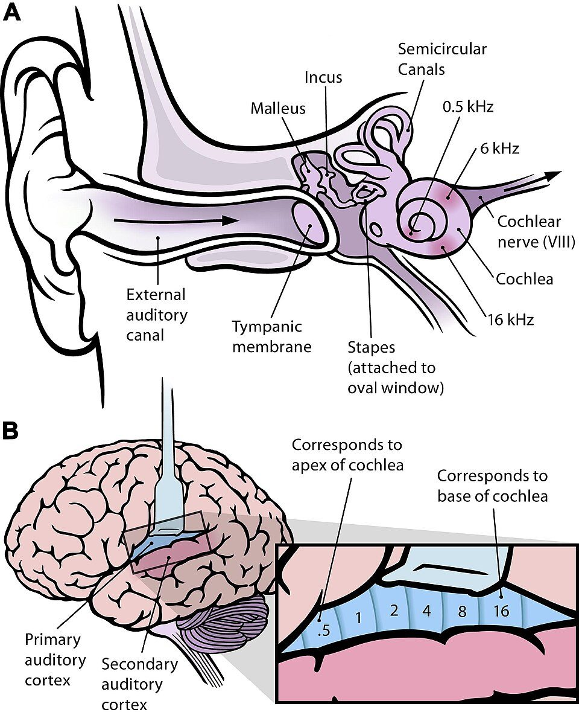
Tonotopy: high frequencies map to the base of the cochlea and low frequencies to the apex, which CI channel allocation follows.Image: Chittka L. and Brockmann A., Wikimedia Commons, CC BY 2.5
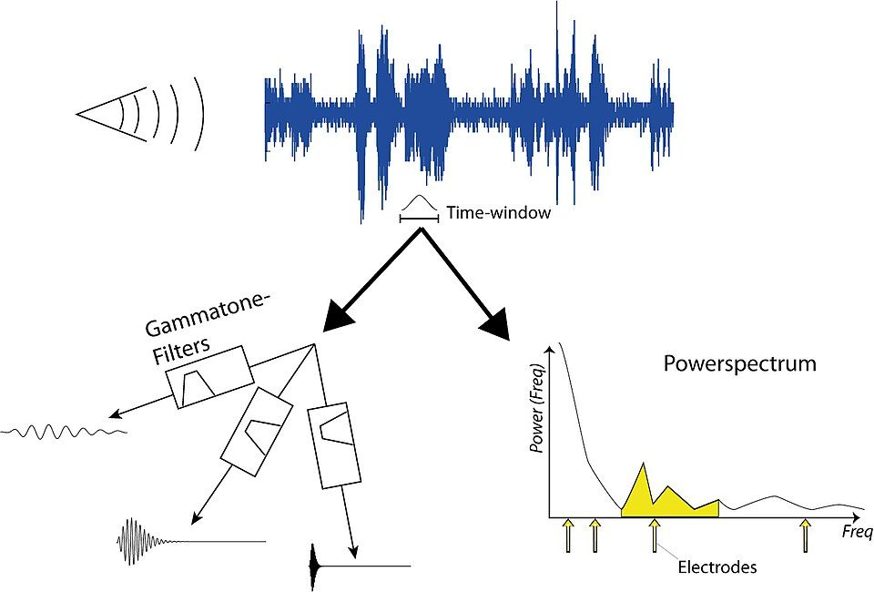
Simplified CI processing: a time window of the input is split by filters, and channel envelopes set the electrode stimulation.Image: Thomas.haslwanter, Wikimedia Commons, CC BY-SA 3.0
Background and principle of operation
The core idea behind almost every modern strategy comes from the channel vocoder, first developed for speech transmission in telephony: speech can be represented by the time-varying energy in a set of frequency bands, and a listener can understand a signal rebuilt from those band envelopes even though the detailed waveform (the temporal fine structure) has been discarded. A cochlear implant is a vocoder whose synthesis stage is the listener's auditory nerve: instead of modulating noise bands, the envelopes modulate pulse trains delivered at different cochlear places.
Key terms:
Channel: an analysis band plus the electrode (or electrode pair) that represents it.
Envelope: the slow amplitude contour of a band-pass signal, typically containing information below a few hundred hertz. It carries syllable rhythm, onsets and some voice-pitch periodicity.
Temporal fine structure (TFS): the rapid oscillations inside the envelope, near the band's centre frequency. TFS is important for pitch, music and separating voices in noise.
Frame: a short analysis time slot (a few milliseconds) in which one set of channel amplitudes is computed.
Channel interaction: overlap of the neural populations excited by different electrodes, either because current fields add (simultaneous interaction) or because the same neurons are stimulated in quick succession (non-simultaneous interaction).
Historical and current strategy families
Early multichannel devices used compressed analogue (CA) stimulation: each band-pass filtered signal was compressed and delivered as a continuous analogue current waveform, all channels at the same time. This preserved fine structure in principle, but the simultaneous currents summed in the conductive cochlear fluid and blurred the spectral pattern. Some users performed well, many did not.
Continuous interleaved sampling (CIS), described by Wilson and colleagues (1991), solved the summation problem by using brief biphasic pulses that are never simultaneous: electrodes are stimulated one after another in a fixed cycle. Each channel's pulse amplitude follows its band envelope. CIS showed clear improvements in speech recognition over CA in the original comparisons and remains the reference strategy against which others are described.
Peak-picking (n-of-m) strategies analyse m bands but stimulate only the n bands with the largest amplitudes in each frame (for example 8 of 22). The idea is that speech energy is concentrated in a few spectral peaks (formants), and skipping weak bands lets the remaining channels be stimulated at a higher rate for the same total pulse budget, while reducing channel interaction. SPEAK was an early peak-picking strategy with a relatively low per-channel rate (of the order of 250 pps) and a variable number of maxima; it is now mainly of historical interest. ACE (Advanced Combination Encoder) is the widely used n-of-m strategy in which the number of maxima and a higher per-channel rate are programmable; its filterbank is implemented with an FFT.
Fine-structure and current-steering approaches try to add information that CIS discards. Two general ideas are used by different manufacturers:
Timing the pulses on apical (low-frequency) channels to the zero-crossings or phase of the band signal, so that the pulse timing itself carries low-frequency fine structure rather than a fixed-rate carrier.
Delivering simultaneous, weighted currents to two neighbouring electrodes (current steering) so that the peak of the combined field lies between them. This creates intermediate pitch percepts, sometimes called virtual channels, and is used to track spectral peaks more finely.
Evidence comparing these families shows large individual differences and no strategy that is best for every user. Programming usually starts from the manufacturer's default for the device and is adjusted from the user's performance and preference.
Key ideaMost information delivered by a CI is envelope information in a limited number of place channels. Speech in quiet needs relatively few channels; music, voice pitch and speech in noise need fine structure and spectral resolution that current electric stimulation delivers poorly.
Architecture and signal flow
Figure 3.7a. Generic channel-vocoder processing chain used by CIS and n-of-m strategies. In CIS every channel is stimulated in every cycle; in n-of-m only the n bands with the largest envelopes in each frame are passed on.
Walk-through:
Front end. Microphone signal, automatic gain control, pre-emphasis (a gentle high-frequency boost that compensates for the falling long-term speech spectrum), and optional directional and noise processing.
Filter bank. Band-pass filters, one per active electrode, spanning roughly 100 to 250 Hz at the low end to about 8 kHz at the high end. Spacing is approximately logarithmic above about 1 kHz, which matches cochlear frequency spacing. FFT-based implementations sum the power of groups of FFT bins to form each band.
Envelope detection. Full-wave or half-wave rectification followed by a low-pass filter (cut-off commonly 200 to 400 Hz), or the magnitude of the analytic (Hilbert) signal, or FFT bin magnitudes.
Channel selection. CIS keeps every channel. n-of-m sorts the envelope values in each frame and keeps the n largest. Some implementations also discard channels below a base level.
Mapping. Each selected envelope value is converted to a current between the electrode's T and C levels using a compressive function (topic 3.6).
Pulse sequencing. The selected channels are stimulated one at a time, each with a biphasic pulse, commonly in base-to-apex or apex-to-base order. The sequence repeats at the per-channel rate.
Figure 3.7b. Interleaved (non-simultaneous) stimulation. Each channel receives one biphasic pulse per cycle; pulses are staggered so that their electric fields never add. Heights change from cycle to cycle as the band envelopes change.
Components
Stage
What it does
What can go wrong
Front end and AGC
Keeps input within the analysis range; directional and noise processing
Slow AGC pumps noise between words; fast AGC distorts envelopes
Frequency allocation table
Assigns band edges to electrodes
Mismatch between assigned frequency and cochlear place; gaps when electrodes are deactivated
Filter bank
Splits the signal into bands
Too few bands lose spectral detail; broad overlapping filters smear formants
Envelope detector
Extracts amplitude contour of each band
Low cut-off removes voice-pitch periodicity; high cut-off with low pulse rate causes envelope aliasing
Maxima selector (n-of-m)
Keeps the largest n bands per frame
Too few maxima drop weaker formants and consonant cues; noise peaks can be selected instead of speech
Amplitude map
Compresses envelope into T to C range
Wrong T or C levels make soft sounds inaudible or loud sounds uncomfortable
Pulse sequencer
Orders and times pulses
Total rate limited by pulse duration; rate changes alter loudness and require re-measurement of levels
Key parameters and specifications
Parameter
Typical value or range
Clinical meaning
Number of analysis channels m
12 to 22, equal to active electrodes
Sets spectral sampling; functionally independent channels are fewer (often estimated at about 4 to 8 in studies of speech in noise)
Maxima n (n-of-m)
commonly 6 to 12
More maxima keep more spectral detail but lower the per-channel rate available within the total rate
Per-channel rate
about 250 to a few thousand pps
Higher rates sample the envelope more finely; benefit varies between users
Total (aggregate) rate
up to tens of thousands of pps, device dependent
Budget shared by all selected channels
Envelope cut-off
commonly 200 to 400 Hz
Determines whether voice-pitch periodicity appears in the envelope
Analysis frequency range
about 100 to 250 Hz up to about 8 kHz
Lower edge can be raised in EAS fittings where the hearing aid covers low frequencies
Frame period
a few ms (tied to rate)
Time resolution of channel selection
Algorithms and equations
Logarithmically spaced band edges
f_k = f_lo × (f_hi / f_lo)^(k / m), k = 0 ... m
where f_lo and f_hi are the lowest and highest band edges and m the number of channels.
Example: m = 8, f_lo = 250 Hz, f_hi = 8000 Hz. The ratio 8000 / 250 = 32, and each band spans 321/8 = 1.542 times its lower edge. The edges are 250, 386, 595, 917, 1414, 2181, 3364, 5187 and 8000 Hz, with geometric centre frequencies of about 310, 479, 738, 1139, 1756, 2709, 4177 and 6442 Hz. Clinical frequency tables are closer to linear below about 1 kHz, so real tables differ from this pure log spacing.
Envelope and pulse amplitude in CIS
e_k(t) = LPF{ |BPF_k{x(t)}| }
I_k(n) = map_k( e_k(t_n) )
where BPF_k is the k-th band-pass filter, LPF a low-pass smoothing filter, t_n the time of the n-th pulse on channel k and map_k the compressive function that places the envelope between T_k and C_k.
n-of-m selection and rate budget
S(frame) = indices of the n largest e_k(frame)
R_total = n × R_channel
where R_channel is the per-channel rate and R_total the aggregate rate of the implant.
Example: an ACE-style map with 8 maxima of 22 channels at 900 pps per channel needs R_total = 8 × 900 = 7200 pps. A CIS map using all 12 electrodes at 1500 pps needs 18 000 pps. With a pulse lasting 58 µs (25 µs phases, 8 µs gap) the sequential limit is about 17 241 pps, so the CIS example would need shorter phases or fewer channels.
A common engineering guideline is that the per-channel pulse rate should be at least about four times the envelope cut-off frequency so that the envelope is adequately sampled. With a 200 Hz cut-off that suggests at least about 800 pps per channel.
Noise-vocoder simulation for normal-hearing listeners
Researchers and teachers simulate CI processing by replacing the electrode pulses with band-limited noise (or sine carriers) modulated by the band envelopes. Normal-hearing listeners then experience a signal with similar spectral and temporal limits. Shannon and colleagues (1995) showed that speech in quiet can be highly intelligible with only about four such bands, while later work showed that performance in noise continues to improve with more channels and that CI users tend to stop improving beyond roughly eight channels, which is one line of evidence for channel interaction. A vocoder is a simulation: it does not reproduce neural survival, electrode position or electric loudness growth.
import numpy as np
from scipy import signal
def noise_vocoder(x, fs, n_ch=8, lo=250, hi=7000, env_cut=160, seed=0):
edges = lo * (hi / lo) ** (np.arange(n_ch + 1) / n_ch) # log spacing
b_env, a_env = signal.butter(2, env_cut, fs=fs) # envelope LPF
rng = np.random.default_rng(seed)
out = np.zeros_like(x)
for k in range(n_ch):
sos = signal.butter(3, [edges[k], edges[k + 1]], "bandpass",
fs=fs, output="sos")
band = signal.sosfilt(sos, x)
env = signal.lfilter(b_env, a_env, np.abs(band)) # rectify + LPF
carrier = signal.sosfilt(sos, rng.standard_normal(len(x)))
out += np.maximum(env, 0) * carrier
return out * np.std(x) / np.std(out), edges
fs = 16000
t = np.arange(int(0.5 * fs)) / fs
x = signal.chirp(t, 300, t[-1], 3000) * (1 + 0.5 * np.sin(2 * np.pi * 4 * t))
y, edges = noise_vocoder(x, fs)
print("band edges (Hz):", np.round(edges).astype(int))
print("output RMS matched to input:", np.isclose(np.std(y), np.std(x)))
band edges (Hz): [ 250 379 575 872 1323 2006 3043 4615 7000]
output RMS matched to input: True
Replace the chirp with a recorded sentence (loaded with scipy.io.wavfile.read) and save y to a WAV file to listen to 4, 8 and 16-channel versions.
Interactive demonstration
Try it: filterbank envelopes and n-of-m channel selection
A synthetic 400 ms signal: a voiced diphthong gliding from /a/ to /i/ (0 to 290 ms) followed by an /s/-like fricative. Change the number of channels and maxima and compare the analysed envelopes (top) with the channels actually stimulated (bottom).
Analysed envelopes, all channels (dB re maximum, 60 dB range)
Stimulated channels after n-of-m selection (unselected channels shown dark)
Channels (centre frequencies)
Selected per frame
Envelope energy kept
Total stimulation rate
Things to observe: the first-formant band moves from around 700 Hz towards 300 Hz and the second formant rises as /a/ glides to /i/; the fricative excites only the highest channels. With 2 maxima only the strongest formant region survives in each frame. Because envelope energy is concentrated in a few bands, even small n keeps most of the energy, yet the weaker bands that are dropped may carry the second formant or consonant cues. Energy retained is not the same as information retained. The filters here are simple second-order sections and the frame step is 2 ms; real processors differ in detail.
Clinical applications
Choosing and adjusting the strategy. Most users are fitted with the manufacturer's default strategy. Alternatives (different rate, number of maxima, fine-structure options) are tried when performance plateaus or when the user reports poor sound quality, always with a trial period and outcome measurement.
Rate changes. Increasing pulse rate increases loudness at a given current (loudness summation), so T and C levels usually need re-measurement after a rate change.
Number of maxima. In n-of-m maps, increasing maxima can improve spectral detail for some users but reduces the rate available per channel and may increase channel interaction.
Frequency allocation. When electrodes are deactivated, their bands are redistributed to neighbours, which shifts the frequency-to-place map. In EAS fittings the lowest electric frequency is raised to match the acoustic crossover.
Counselling. Explaining that a CI delivers mainly envelope cues helps set expectations for music, tonal-language pitch and noisy environments, and motivates the use of remote microphones.
Research and training. Vocoder simulations help families and students hear an approximation of degraded input, and are used in auditory training research. They must be presented as simulations, not as what a particular user hears.
Limitations, errors and troubleshooting
Problem
Cause
What to check or do
Speech sounds "tinny" or high pitched after switch-on
Frequency-to-place mismatch, shallow insertion
Reassure and allow adaptation; review insertion depth; consider allocation changes in persistent cases
Poor speech in noise
Channel interaction, maxima capturing noise peaks, lack of fine structure
Enable directional and noise processing, remote microphone, review maxima and levels
Music sounds out of tune
Envelope-only coding, limited place resolution
Counsel; try fine-structure options where available; dedicated music programme
Loudness changes after altering rate or phase width
Charge and rate both affect loudness
Re-measure T and C levels; loudness balance across electrodes
Sound quality degraded after deactivating electrodes
Frequency bands redistributed, spectral gaps
Check frequency table, consider re-allocation, re-evaluate performance
Vocoder demo misunderstood by family
Simulation treated as literal
Explain it models processing limits only, not neural survival or adaptation
Demonstration
Equipment: laptop with Python (NumPy, SciPy) or MATLAB, headphones or a loudspeaker, a few recorded sentences, and the interactive demo above.
Play an unprocessed sentence, then 16, 8, 4 and 2-channel noise-vocoded versions. Students write down what they hear and note the channel count at which the sentence becomes intelligible.
Repeat with the sentence mixed with babble at a moderate SNR (for example +5 dB). Students observe that more channels are needed in noise.
Open the u3-ci demo. Set m = 16 and n = all (CIS). Trace F1 and F2 on the top heat map.
Change n to 8, 4 and 2. Discuss which formant disappears first and what that would mean for vowel recognition.
Change the per-channel rate and read the total rate note. Relate the limit to phase width and the charge equation of topic 3.6.
If fitting software is available in simulation mode, show where strategy, rate, maxima and frequency table are set.
Current developments
Strategies that model aspects of normal auditory processing, such as compression and adaptation, to present more natural envelope dynamics.
Current focusing and steering to reduce channel interaction or to add intermediate pitch places.
Channel selection guided by individual data, for example deactivating electrodes that show poor discrimination or unusual thresholds, based on imaging or psychophysical measures.
Front-end speech enhancement, including machine-learning noise reduction, evaluated specifically for CI users.
Coordinated bilateral and bimodal processing that preserves interaural timing and level cues.
Practical activity and assessment
Draw a flowchart of a simplified CI processor from microphone to electrode, naming every stage.
For an 8-channel map from 250 to 8000 Hz with logarithmic spacing, compute the band edges and mark them on the flowchart.
Run the vocoder code with 4, 8 and 16 channels on one recorded sentence, in quiet and at +5 dB SNR; score intelligibility for two classmates.
Explain in 150 words how n-of-m selection differs from CIS and when fewer maxima might be preferred.
Wilson, B. S., Finley, C. C., Lawson, D. T., Wolford, R. D., Eddington, D. K., Rabinowitz, W. M. (1991). Better speech recognition with cochlear implants. Nature, 352, 236 to 238.
Loizou, P. C. (1998). Mimicking the human ear. IEEE Signal Processing Magazine, 15(5), 101 to 130.
Loizou, P. C. (1999). Introduction to cochlear implants. IEEE Engineering in Medicine and Biology Magazine, 18(1), 32 to 42.
Shannon, R. V., Zeng, F.-G., Kamath, V., Wygonski, J., Ekelid, M. (1995). Speech recognition with primarily temporal cues. Science, 270, 303 to 304.
Friesen, L. M., Shannon, R. V., Baskent, D., Wang, X. (2001). Speech recognition in noise as a function of the number of spectral channels: comparison of acoustic hearing and cochlear implants. Journal of the Acoustical Society of America, 110, 1150 to 1163.
Wilson, B. S., Dorman, M. F. (2008). Cochlear implants: a remarkable past and a brilliant future. Hearing Research, 242, 3 to 21.
Zeng, F.-G., Popper, A. N., Fay, R. R. (eds.). Cochlear Implants: Auditory Prostheses and Electric Hearing. Springer.
Wolfe, J., Schafer, E. C. Programming Cochlear Implants. Plural Publishing.
Manufacturer technical descriptions of the processing strategies available on the devices used in your clinic.
3.8
LPC analysis
1 hour22.10.2026Practical P4
Linear predictive coding (LPC) describes a short segment of speech as the output of an all-pole filter excited by a simple source. The filter's resonances are the formants, so LPC is the standard method behind formant measurement in Praat and similar tools, and the same model underlies most mobile-telephone speech codecs. Audiologists and speech scientists use it to measure vowel production, build test stimuli and understand how speech is represented in hearing devices.
What it is
A method that predicts each speech sample as a weighted sum of the previous p samples. The p weights (LPC coefficients) define an all-pole filter whose frequency response is a smooth spectral envelope of the frame.
Why it is required
The spectrum of voiced speech is a comb of harmonics. The formant frequencies that identify vowels are properties of the envelope over those harmonics, not of any single harmonic. LPC separates the envelope (vocal-tract filter) from the fine harmonic structure (source) with few parameters and little computation.
How it works
A short frame is pre-emphasised and windowed. Its autocorrelation values are computed, and the Levinson-Durbin recursion solves for the predictor coefficients that minimise the mean-squared prediction error. The roots of the prediction polynomial, or the peaks of its inverse spectrum, give formant frequencies and bandwidths.
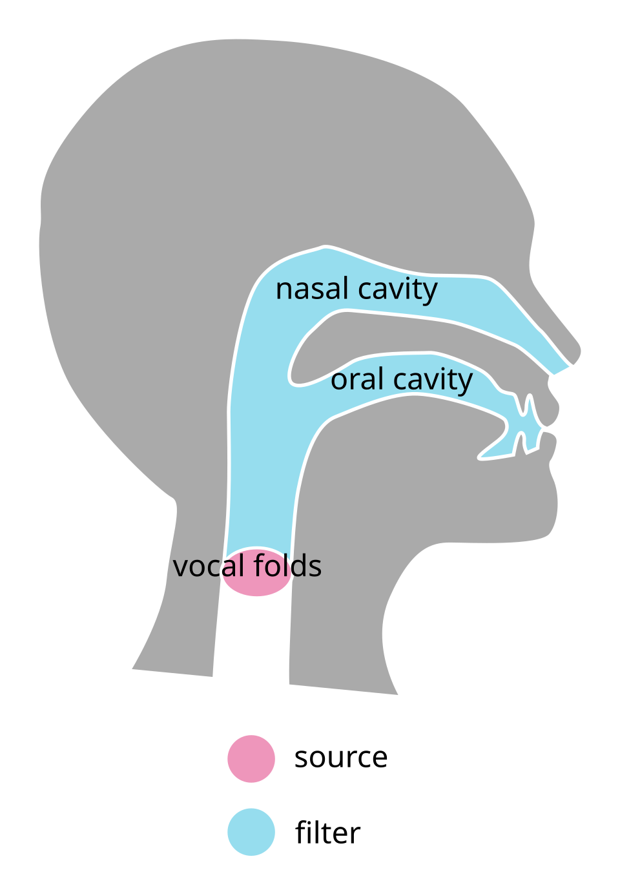
Source-filter model of speech: the vocal folds are the source and the vocal tract is the filter.Image: Emflazie, Wikimedia Commons, CC BY-SA 4.0
Background and principle of operation
The source-filter model of speech
Fant's acoustic theory of speech production treats speech as the product of three independent parts:
Source. For voiced sounds, the vocal folds release quasi-periodic puffs of air at the fundamental frequency f0 (typically about 85 to 180 Hz in adult men, 165 to 255 Hz in adult women, and higher in children). The glottal source spectrum is a series of harmonics at multiples of f0 whose amplitudes fall at roughly 12 dB per octave. For voiceless sounds, the source is turbulent noise at a constriction.
Filter. The vocal tract from glottis to lips is an acoustic tube whose resonances, the formants F1, F2, F3 and so on, shape the source spectrum. Tongue, jaw and lip positions change the tube shape and so the formant frequencies.
Radiation. Sound radiating from the lips is boosted by about 6 dB per octave, so the net slope of voiced speech is about -6 dB per octave.
For a uniform tube closed at the glottis and open at the lips, the resonances are at odd quarter-wavelength frequencies:
F_n = (2n - 1) × c / (4 L), n = 1, 2, 3 ...
where c is the speed of sound in warm moist air (about 350 m/s) and L the vocal-tract length.
For L = 17.5 cm: F1 = 350 / (4 × 0.175) = 500 Hz, F2 = 1500 Hz, F3 = 2500 Hz, the neutral vowel (schwa) of an adult male. A shorter tract (women, children) raises all formants in proportion. Constricting the tube at different places moves individual formants: a high front vowel /i/ has low F1 and high F2; an open vowel /a/ has high F1 and low F2; a rounded back vowel /u/ has low F1 and low F2.
Linear prediction
Because the vocal tract changes slowly relative to the sampling rate, neighbouring samples of speech are strongly correlated. Linear prediction exploits this by estimating the current sample from a weighted sum of p past samples. The difference between the actual and predicted sample is the prediction error or residual. If the predictor captures the vocal-tract resonances well, the residual is close to the source: a train of spikes at the glottal pulses for voiced speech, or noise for voiceless speech. Turning the equation around, the speech is the output of an all-pole filter 1/A(z) driven by the residual. The frequency response of that filter is the LPC spectral envelope.
An all-pole model is a good fit for non-nasal vowels, which are produced by an unbranched tube with no side cavities. Nasal consonants, nasalised vowels and some fricatives have spectral zeros (anti-resonances) that an all-pole model can only approximate with extra poles.
DefinitionFormant: a resonance of the vocal tract, seen as a broad peak in the spectral envelope. Harmonic: a component of the voiced source at an integer multiple of f0. Formants and harmonics are different things; with a high f0 a formant may fall between two harmonics.
Architecture and signal flow
Figure 3.8a. Top: the source-filter model that LPC assumes. Bottom: the LPC analysis chain applied to a recorded frame. The same coefficients can drive the inverse filter to recover the residual, which approximates the source.
Walk-through of the analysis chain:
Pre-emphasis. A first-difference filter y[n] = x[n] - α x[n-1] with α around 0.9 to 0.97 lifts the high frequencies by about 6 dB per octave, compensating the falling speech spectrum so that higher formants are modelled with similar accuracy to F1.
Framing and windowing. Frames of about 20 to 30 ms (several pitch periods) with a Hamming or Gaussian window, stepped every 5 to 10 ms.
Autocorrelation. r[k] = Σ x[n] x[n-k] for lags k = 0 to p. Only p + 1 numbers summarise the frame's spectral shape.
Levinson-Durbin recursion. Solves the p normal equations efficiently in about p2 operations, producing the coefficients a1 to ap, the reflection coefficients k1 to kp and the residual energy at each order.
Envelope and formants. The envelope is G2 / |A(ejω)|2. Formants are found from complex root pairs of A(z) with narrow bandwidths, or from peaks of the envelope, and are then tracked frame by frame with continuity constraints.
Figure 3.8b. A voiced spectrum is a comb of harmonics spaced at f0. The LPC envelope passes over the harmonic peaks; its maxima are the formant estimates.
Components
Stage
Purpose
What can go wrong
Recording and sampling
Capture speech with adequate bandwidth
Clipping, room reverberation, low SNR, microphone too far away, wrong sampling rate for the formant range
Resampling
Match the analysis bandwidth to the formant range (Praat resamples to twice the maximum formant)
Too high a bandwidth wastes poles on empty high frequencies
Pre-emphasis
Flatten spectral tilt
Omitted: F2 and F3 poorly modelled
Window
Taper the frame edges
Too short: fewer than two periods; too long: formants move within the frame
Autocorrelation and Levinson-Durbin
Compute predictor coefficients
Numerical issues at high orders with narrow-band signals
Root solving and selection
Convert poles to frequency and bandwidth
Spurious poles with wide bandwidth reported as formants; two close formants merged
Formant tracking
Link estimates across frames
Track jumps (F2 labelled as F1, etc.) that must be checked visually
Key parameters and specifications
Parameter
Typical value or range
Clinical meaning
Analysis sampling rate
about 10 to 11 kHz for adult men, higher for women and children
Nyquist frequency should sit just above the highest formant to be tracked
LPC order p
fs/1000 + 2 to 4 (e.g. 12 to 14 at 10 kHz)
Two poles per formant plus a few for source and radiation shape
Window length
about 20 to 30 ms (Praat default 25 ms)
Must include at least two to three pitch periods
Frame step
5 to 10 ms
Time resolution of formant tracks
Pre-emphasis
α about 0.9 to 0.97 (Praat: from 50 Hz)
Improves modelling of higher formants
Praat maximum formant
about 5000 Hz (men) to 5500 Hz (women), higher for children
Wrong setting is the most common source of wrong formant values
Accepted formant bandwidth
usually below a few hundred Hz
Very wide poles model spectral tilt, not resonances
Vowel
F1 (Hz)
F2 (Hz)
Articulation
/i/ (heed)
about 270
about 2290
High front, spread lips
/æ/ (had)
about 660
about 1720
Low front
/ɑ/ (hod)
about 730
about 1090
Low back
/u/ (who'd)
about 300
about 870
High back, rounded
These values are approximate averages for adult male speakers of American English from Peterson and Barney (1952). Women's formants are typically about 15 to 20 % higher and children's higher still, and vowels of Indian English and Malayalam differ from these values, so local normative data should be used for clinical comparison.
Algorithms and equations
Prediction and error
x^[n] = a1 x[n-1] + a2 x[n-2] + ... + ap x[n-p]
e[n] = x[n] - x^[n]
A(z) = 1 - a1 z^-1 - a2 z^-2 - ... - ap z^-p
H(z) = G / A(z)
where x^[n] is the predicted sample, a1 to ap are the LPC coefficients, e[n] the prediction error (residual), A(z) the inverse (whitening) filter and H(z) the all-pole vocal-tract model with gain G.
Normal equations (autocorrelation method)
sum over k of a_k r[|i - k|] = r[i], i = 1 ... p
E_p = r[0] - sum over k of a_k r[k]
where r[k] is the autocorrelation of the windowed frame and E_p the minimum residual energy. The matrix is Toeplitz (constant along diagonals), which is what Levinson-Durbin exploits.
Levinson-Durbin recursion
E_0 = r[0]
for i = 1 ... p:
k_i = ( r[i] - sum_{j=1}^{i-1} a_j r[i-j] ) / E_{i-1}
a_i = k_i
a_j = a_j - k_i a_{i-j} for j = 1 ... i-1
E_i = (1 - k_i^2) E_{i-1}
where k_i are reflection (PARCOR) coefficients. With the autocorrelation method |k_i| < 1, which guarantees a stable filter. The reflection coefficients relate to area ratios of an equivalent lossless tube model of the vocal tract.
Worked example with normalised autocorrelation r[0] = 1, r[1] = 0.8, r[2] = 0.5 and p = 2:
Check with the normal equations: 1.1111 × 1 + (-0.3889) × 0.8 = 0.8 and 1.1111 × 0.8 + (-0.3889) × 1 = 0.5. Both equations are satisfied. The residual energy fell from 1 to 0.31, a prediction gain of 10 log10(1/0.3056) = 5.1 dB.
From poles to formants
F = θ × fs / (2π)
B = -(fs / π) × ln(r)
where a complex pole of A(z) is written r e^(jθ), F is the formant frequency and B its 3 dB bandwidth.
Example: fs = 10 kHz and a pole at r = 0.97, θ = 0.3 rad give F = 0.3 × 10 000 / 6.283 = 477 Hz and B = -(10 000 / 3.1416) × ln 0.97 = 3183 × 0.0305 = 97 Hz, a plausible F1. A pole at r = 0.80 would give B ≈ 710 Hz, too wide to be treated as a formant.
Choosing the order
At fs = 10 kHz the band 0 to 5 kHz contains about five formants for an adult male (one per kilohertz for a 17.5 cm tract). Each formant needs a complex-conjugate pole pair (2 poles), giving 10, plus 2 to 4 poles for the glottal and radiation shape: p = 12 to 14, which is the rule p = fs/1000 + 2 to 4. Too low an order merges formants; too high an order starts to fit individual harmonics and produces spurious peaks.
import numpy as np
from scipy import signal
fs = 10000
f0 = 120
formants = [(730, 90), (1090, 110), (2440, 170)] # /a/, adult male
n = np.arange(int(0.04 * fs)) # 40 ms frame
src = np.zeros(len(n)); src[::fs // f0] = 1.0 # impulse train
x = src
for F, B in formants: # cascade resonators
r = np.exp(-np.pi * B / fs); th = 2 * np.pi * F / fs
x = signal.lfilter([1.0], [1, -2 * r * np.cos(th), r * r], x)
x = signal.lfilter([1, -0.97], [1], x) * np.hamming(len(x))
def levinson(r, p):
a = np.zeros(p + 1); a[0] = 1.0; E = r[0]
for i in range(1, p + 1):
k = -(r[i] + np.dot(a[1:i], r[i-1:0:-1])) / E
a[1:i] = a[1:i] + k * a[i-1:0:-1]
a[i] = k
E *= (1 - k * k)
return a, E
p = 12
r = np.correlate(x, x, "full")[len(x) - 1:len(x) + p]
a, E = levinson(r, p)
roots = [z for z in np.roots(a) if z.imag > 0]
F = sorted(np.angle(roots) * fs / (2 * np.pi))
print("formant candidates (Hz):", np.round(F[:4]).astype(int))
B = [-np.log(abs(z)) * fs / np.pi for z in roots]
cand = sorted((np.angle(z) * fs / (2 * np.pi), b) for z, b in zip(roots, B))
keep = [round(f) for f, b in cand if 90 < f < fs / 2 - 90 and b < 400]
print("after bandwidth check:", keep)
This code stores the polynomial in the form 1 + a1z-1 + ..., the sign convention used by many software packages; the predictor coefficients of the equations above are the negatives of a[1:]. Note the spurious candidate at 1634 Hz: with only three formants synthesised, the extra poles model the spectral shape and have wide bandwidths. The bandwidth check removes it, exactly as formant trackers do.
Interactive demonstration
Try it: LPC envelope and order
A synthetic vowel (fs = 10 kHz, 51.2 ms Hamming frame, pre-emphasis 0.97). Change the LPC order and f0 and watch how well the envelope finds the formants.
LPC envelope peaks
Synthesis formants
Residual energy E/r[0]
Rule of thumb at 10 kHz
p = 12 to 14
Harmonic spectrumLPC envelopeTrue formantsEnvelope peaks
Things to observe: at p = 4 the envelope can show only one or two broad peaks; around p = 10 to 14 the peaks match the formants; at high orders the envelope becomes more detailed. Raise f0 to 250 to 300 Hz: the harmonics become sparse and the estimated F1 and F2 are pulled towards the nearest harmonics, which is why formant measurement in children and high-pitched voices is less reliable.
Clinical applications
Vowel production in hearing loss. Children and adults with hearing loss, and CI users, can show a reduced vowel space (F1 to F2 area) or centralised vowels. LPC-based F1/F2 measurement documents change with amplification, implantation or therapy.
Motor speech disorders. Vowel space area and F2 slope in diphthongs are used as acoustic measures in dysarthria research and assessment.
Visual feedback in therapy. Real-time formant displays and vowel charts give visual feedback to speakers who cannot monitor their vowels by ear.
Stimulus preparation. Formant values measured with LPC are used to design synthetic vowel continua and to check recorded test lists for consistency.
Understanding devices. LPC-based codecs are used in mobile telephony, so telephone speech heard by hearing-aid and CI users has passed through a linear-prediction coder. Very low bit-rate coders can reduce naturalness and intelligibility for listeners already coping with degraded input.
LPC in speech coding
Transmitting LPC coefficients plus a compact description of the residual needs far fewer bits than the waveform. The early LPC-10 vocoder transmitted speech at 2.4 kbit/s with a buzzy, synthetic quality. Code-excited linear prediction (CELP) and its derivatives choose the excitation from a codebook by analysis-by-synthesis and are the basis of many mobile telephone codecs. Coefficients are usually converted to line spectral frequencies (LSFs), which quantise more robustly.
Limitations, errors and troubleshooting
Problem
Cause
What to check or do
Formant values jump or double
Maximum formant setting wrong for the speaker; tracker assigns F2 to F1 slot
Adjust maximum formant (and number of formants) in Praat; overlay tracks on the spectrogram and correct by eye
F1 and F2 reported as one peak
Close formants in back vowels (/u/, /o/), order too low
Increase order slightly; check spectrum slice; compare with neighbouring frames
F1 estimate sits on a harmonic
High f0 (children, women, falsetto)
Report with caution; average over frames; consider methods designed for high f0
Measure oral vowels in non-nasal contexts, or use pole-zero methods
Values differ between software
Different methods (Burg, autocorrelation), windows and defaults
Report software, version and settings with every measurement
Demonstration
Equipment: laptop with Praat (https://www.praat.org), a headset or measurement microphone, a quiet room, and recordings of /i/, /a/ and /u/ (for example in hVd words) from a male and a female volunteer.
Record the three vowels at 44.1 kHz, then open each file in Praat with View & Edit.
Enable Formants > Show formants. Show the default settings: maximum formant 5500 Hz, 5 formants, window 0.025 s. Change maximum formant to 5000 Hz for the male speaker and show how tracks change.
Place the cursor at the vowel midpoint and use Formant > Formant listing to read F1 and F2.
Use Spectrum > View spectral slice and, from the objects window, an LPC smoothing of the slice to show the envelope over the harmonics.
Open the u3-lpc demo and repeat the order and f0 experiment on the screen.
Plot the six vowels on an F1 (inverted y axis) versus F2 (inverted x axis) chart and discuss speaker differences.
Current developments
Formant tracking with neural networks trained on hand-corrected tracks, aimed at more robust performance for children and pathological voices.
Neural speech codecs that learn compact representations instead of explicit LPC parameters, alongside continued use of LPC-based codecs.
Linear prediction retained inside some neural vocoders to model the spectral envelope cheaply, reducing computation.
Automated vowel-space and articulatory measures in clinical research on hearing loss and motor speech disorders.
Practical activity and assessment
Record three sustained vowels /i/, /a/, /u/ from yourself (three repetitions each).
In Praat, choose and justify the maximum formant setting for your voice.
Measure F1 and F2 at the vowel midpoint and average over repetitions.
Plot your vowel triangle and compare it with a classmate of the other sex and with published values.
Deliverable: a table of F1/F2 values, the vowel chart, and a short paragraph on one measurement error you encountered (P4 portfolio).
References
Rabiner, L. R., Schafer, R. W. Theory and Applications of Digital Speech Processing. Pearson.
Rabiner, L. R., Schafer, R. W. Digital Processing of Speech Signals. Prentice Hall.
Makhoul, J. (1975). Linear prediction: a tutorial review. Proceedings of the IEEE, 63, 561 to 580.
Atal, B. S., Hanauer, S. L. (1971). Speech analysis and synthesis by linear prediction of the speech wave. Journal of the Acoustical Society of America, 50, 637 to 655.
Markel, J. D., Gray, A. H. Linear Prediction of Speech. Springer.
Fant, G. Acoustic Theory of Speech Production. Mouton.
Peterson, G. E., Barney, H. L. (1952). Control methods used in a study of the vowels. Journal of the Acoustical Society of America, 24, 175 to 184.
Hillenbrand, J., Getty, L. A., Clark, M. J., Wheeler, K. (1995). Acoustic characteristics of American English vowels. Journal of the Acoustical Society of America, 97, 3099 to 3111.
Kent, R. D., Read, C. The Acoustic Analysis of Speech. Singular.
Boersma, P., Weenink, D. Praat: doing phonetics by computer, and the Praat manual. https://www.praat.org
3.9
Cepstrum analysis
1 hour23.10.2026Practical P4
The cepstrum is the spectrum of the logarithm of a spectrum. It turns the regular harmonic ripple of voiced speech into a single peak whose position gives the pitch period, and it separates the smooth vocal-tract envelope from that ripple. Cepstral methods are used for fundamental-frequency estimation, for the cepstral peak prominence measure used in voice assessment, and, in the form of mel-frequency cepstral coefficients, as the classic feature set for speech and speaker recognition.
What it is
A transform of a signal frame: Fourier transform, magnitude, logarithm, inverse Fourier transform. The independent variable of the result is called quefrency and has units of time. A peak at quefrency T means the log spectrum has a ripple repeating every 1/T hertz.
Why it is required
In the speech spectrum the source (harmonics) and the filter (formants) are multiplied together, which makes them hard to separate. The logarithm turns that product into a sum, and the inverse transform places the two parts at different quefrencies, where they can be separated by simple windowing.
How it works
The formant envelope changes slowly across frequency, so it appears at low quefrencies (below about 2 ms). The harmonic ripple is spaced at f0 across frequency, so it appears as a peak at the pitch period 1/f0 (2.5 to 20 ms for most voices). Picking that peak gives f0; keeping only the low quefrencies and transforming back gives a smooth envelope.
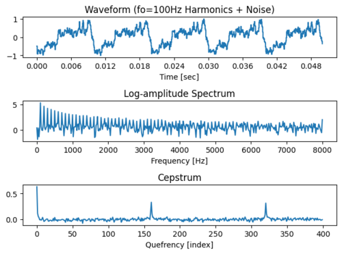
Waveform, log spectrum and cepstrum of a 100 Hz harmonic signal. The cepstral peak at the pitch period reveals f0.Image: Tarepan, Wikimedia Commons, CC BY-SA 4.0
Background and principle of operation
In the source-filter model (topic 3.8), voiced speech is the source signal e[n] convolved with the vocal-tract impulse response h[n]:
In time: s[n] = e[n] * h[n] (convolution).
In frequency: S(f) = E(f) × H(f) (multiplication).
In log magnitude: log|S(f)| = log|E(f)| + log|H(f)| (addition).
Once the two parts are added, a linear operation such as the inverse Fourier transform keeps them added. The term log|H(f)| is a smooth function of frequency with a few broad peaks, so its inverse transform is concentrated near quefrency zero. The term log|E(f)| for a periodic source is a comb of harmonics at f0, 2f0, 3f0 and so on; a function that repeats every f0 hertz along the frequency axis has its inverse transform concentrated at quefrency 1/f0 and its multiples.
Bogert, Healy and Tukey (1963) introduced the playful vocabulary: cepstrum (from spectrum), quefrency (frequency), rahmonics (harmonics, the peaks at 2/f0, 3/f0) and liftering (filtering in the quefrency domain). Noll (1967) developed cepstral pitch detection for speech.
DefinitionReal cepstrum: c[n] = inverse DFT of log|X[k]|. It uses only the magnitude spectrum. The complex cepstrum also uses the unwrapped phase and allows full deconvolution back to separate source and filter waveforms; it is rarely needed in clinical analysis.
Because the cepstrum responds to the regular spacing of harmonics, it can find the pitch even when the fundamental component itself is missing, for example in telephone speech band-limited from about 300 Hz upward. Unvoiced sounds (fricatives, whisper) have no harmonic ripple, so their cepstrum shows no clear peak in the pitch range: this gives a simple voicing decision.
Architecture and signal flow
Figure 3.9a. Cepstral analysis. The inverse transform of the log spectrum separates the vocal-tract envelope (low quefrencies) from the pitch periodicity (a peak at the pitch period).
Frame and window. A voiced frame must contain at least two, preferably three or more, pitch periods for the harmonic ripple to be resolved: about 40 ms for voices down to 75 Hz. A Hamming or Hann window reduces spectral leakage.
FFT. A power-of-two FFT, commonly 512 to 2048 points, gives the spectrum.
Log magnitude. The natural log or dB of the magnitude. A small floor (for example 10-10) avoids the logarithm of zero.
Inverse FFT. Because log|X| is real and symmetric, the result is real and symmetric; only the first half is examined.
Pitch branch. Search for the largest peak between the shortest and longest expected periods. Compare its height with the surrounding cepstrum to decide whether the frame is voiced.
Envelope branch. Keep the coefficients below a lifter cut-off Lc (shorter than the shortest pitch period), set the rest to zero, and transform back to obtain a smoothed log spectrum without harmonic ripple.
Figure 3.9b. Schematic cepstrum of a voiced frame. Liftering below the dashed line keeps the vocal-tract envelope; the peak at T0 gives the fundamental frequency.
Components
Stage
Purpose
What can go wrong
Window
Select a quasi-stationary segment
Too short: harmonics not resolved; too long: f0 changes within the frame and the peak broadens
FFT and magnitude
Spectrum of the frame
Clipping adds spurious harmonics; DC offset adds low-frequency energy
Logarithm
Turns product into sum
Log of zero in silent frames: use a floor
Inverse FFT
Produces the cepstrum
Misreading index as time: quefrency = index / fs
Peak picker
Finds pitch period
Octave errors (peak at 2T0 or T0/2), vocal-tract peak mistaken for pitch at very high f0
Voicing threshold
Separates voiced from unvoiced frames
Breathy or rough voices misclassified as unvoiced
Lifter
Smooths the envelope
Cut-off too high lets harmonic ripple through; too low smears formants
Key parameters and specifications
Parameter
Typical value or range
Clinical meaning
Frame length
about 30 to 64 ms
Longer frames for low voices; shorter for rapid f0 changes
Pitch search range
2.5 to 20 ms (400 to 50 Hz)
Should match the speaker: narrower range reduces octave errors
Quefrency resolution
1/fs (62.5 µs at 16 kHz)
Limits f0 precision at high f0 unless the peak is interpolated
Lifter cut-off
about 1 to 2.5 ms, below the shortest period
Controls smoothness of the envelope
MFCC count
typically 12 to 13 plus energy, with deltas 39
Standard ASR and speaker-recognition feature vector
Mel filters
typically 20 to 40 triangular filters
Approximate auditory frequency resolution
Algorithms and equations
c[n] = (1/N) sum_{k=0}^{N-1} log|X[k]| e^(j 2π k n / N)
T0 = n_pk / fs f0 = fs / n_pk
where X[k] is the N-point DFT of the windowed frame, c[n] the real cepstrum at quefrency n/fs seconds, and n_pk the index of the largest cepstral peak in the pitch search range.
Worked example: fs = 16 kHz and f0 = 125 Hz. The period is 8 ms, so the peak should appear at n = 0.008 × 16 000 = 128 samples. For a 250 Hz voice the peak is at 64 samples; the neighbouring indices 63 and 65 correspond to 253.97 Hz and 246.15 Hz, so the raw resolution at this f0 is about ±4 Hz. Parabolic interpolation around the peak, or a higher sampling rate, improves precision.
Liftering
c_L[n] = c[n] for |n| < Lc, otherwise 0
log|H^(f)| = DFT{ c_L[n] }
where Lc is the lifter cut-off in samples and H^ the smoothed spectral envelope.
At 16 kHz a 1.5 ms lifter keeps 24 coefficients on each side of zero. For a 400 Hz voice the pitch period is 2.5 ms (40 samples), so the lifter must stay below 40 samples or harmonic ripple leaks into the envelope.
Mel-frequency cepstral coefficients (MFCCs)
MFCCs apply the cepstral idea to an auditory-like spectrum: the power spectrum is summed in triangular filters equally spaced on the mel scale, the log of each filter energy is taken, and a discrete cosine transform (DCT) replaces the inverse FFT. The first 12 or 13 coefficients describe the spectral envelope compactly and are nearly uncorrelated, which made them the standard features for hidden-Markov-model speech recognisers (topic 3.10).
mel(f) = 2595 × log10(1 + f / 700)
MFCC_m = sum_{j=1}^{J} log(E_j) cos(π m (j - 0.5) / J)
where E_j is the energy in the j-th of J mel filters and m = 0, 1, 2 ... is the coefficient index.
Numbers: 1000 Hz maps to 2595 × log10(2.4286) = 1000 mel, 4000 Hz to 2146 mel and 8000 Hz to 2840 mel. The band from 4 to 8 kHz therefore occupies only 694 mel, about a third of the 0 to 4 kHz span, so high frequencies receive fewer, wider filters, similar to auditory critical bands.
import numpy as np
from scipy import signal
fs, f0, N = 16000, 125, 1024 # 64 ms frame
src = np.zeros(N); src[::fs // f0] = 1.0 # period 128 samples
x = src
for F, B in [(730, 90), (1090, 110), (2440, 170)]:
r = np.exp(-np.pi * B / fs); th = 2 * np.pi * F / fs
x = signal.lfilter([1.0], [1, -2 * r * np.cos(th), r * r], x)
x = x * np.hanning(N)
logmag = np.log(np.abs(np.fft.fft(x)) + 1e-10)
c = np.real(np.fft.ifft(logmag)) # real cepstrum
lo, hi = int(fs / 400), int(fs / 60) # search 2.5 to 16.7 ms
q = lo + np.argmax(c[lo:hi])
print("peak at", q, "samples =", 1000 * q / fs, "ms")
print("estimated f0 =", fs / q, "Hz")
peak at 128 samples = 8.0 ms
estimated f0 = 125.0 Hz
Interactive demonstration
Try it: cepstral pitch and liftered envelope
A synthetic /ɑ/ frame (fs = 16 kHz, 64 ms Hann window). Move f0 and watch the cepstral peak move to 1/f0; switch the source to breathy or unvoiced; move the lifter cut-off and watch the smoothed envelope.
Real cepstrum (grey dashed lines: 2.5 to 14.3 ms search range for 400 to 70 Hz)
Log spectrum and liftered (cepstrally smoothed) envelope
Things to observe: the peak sits at 1000/f0 ms, and a smaller rahmonic appears at twice that quefrency for higher f0. With the breathy source the peak is lower but still found; with noise only there is no peak standing clearly above the rest, and the demo reports the frame as unvoiced (its voicing rule is a simple threshold of 4.5 standard deviations, chosen for this demonstration). The smoothed envelope follows the average of the log spectrum, so it lies below the tops of the harmonics and shows F1 and F2 merged into one broad hump for /ɑ/; a longer lifter resolves more detail. If the lifter cut-off is moved above the pitch period (for example f0 = 400 Hz with a 3 ms lifter), harmonic ripple appears in the envelope.
Clinical applications
Fundamental frequency measurement. Mean f0 and f0 range in connected speech are routine measures in voice assessment and in monitoring the speech of people with hearing loss, who may show raised or poorly controlled f0.
Cepstral peak prominence (CPP). The height of the cepstral peak above a regression line fitted to the cepstrum is a robust acoustic correlate of breathiness and overall dysphonia severity. A smoothed version (CPPS) is widely used in voice clinics and research because, unlike jitter and shimmer, it does not require accurate cycle-by-cycle period marking and works on connected speech.
Features for recognition. MFCCs are the classic input to automatic speech recognition, speaker recognition and many audio classification systems, including research on automatic analysis of speech in hearing impairment.
Stimulus verification. Checking the f0 of recorded or synthesised test materials, for example when building f0-matched sentence lists or competing-talker maskers with controlled f0 differences.
Hearing devices. Periodicity detection is one of the cues used in hearing-aid classifiers and speech detectors, and pitch estimation is part of some CI research strategies that try to enhance voice-pitch cues.
Limitations, errors and troubleshooting
Problem
Cause
What to check or do
f0 reported at half or double the true value
Octave error: rahmonic or subharmonic peak wins
Restrict the search range to the speaker; check against the narrow-band spectrogram; use tracking across frames
No peak in a clearly voiced frame
Frame too short for a low voice, strong jitter, f0 changing within frame
Lengthen the frame, analyse steadier segments
Wrong f0 for very high voices
Pitch peak overlaps low-quefrency envelope region
Lower the minimum search quefrency carefully, use autocorrelation methods for comparison
Breathy voice classified as unvoiced
Noise lowers the peak below threshold
Use CPP as a continuous measure rather than a binary decision
CPP values not comparable across clinics
Different software, frame, smoothing and regression settings
Use one software and protocol; report settings; compare only with norms collected the same way
Background noise or reverberation
Adds non-harmonic energy
Record close to the mouth with a headset microphone in a quiet room
Demonstration
Equipment: Praat and Python with NumPy and librosa, a headset microphone, and recordings of a sustained vowel, a voiceless fricative /s/ and a short sentence.
Record a sustained /a/ and a sustained /s/. In Praat select a 50 ms segment of each and compute a spectrum, then a PowerCepstrum (Spectrum: To PowerCepstrum).
Draw both cepstra. Students identify the pitch peak in /a/ and its absence in /s/.
From the /a/ cepstrum read the peak quefrency, compute f0 = 1/T0, and compare with Praat's pitch tracker (which uses an autocorrelation method by default).
Use the PowerCepstrum peak prominence query to obtain CPP and compare a normal and a deliberately breathy /a/.
Run the Python cell above, then change f0 and the frame length and observe when the estimate fails.
Use the u3-cep demo to show liftering and the effect of the lifter cut-off on the envelope.
Current developments
Smoothed CPP included in multiparameter voice-quality indices used in voice clinics and research.
Neural-network pitch trackers trained on large datasets, reported to be more robust in noise than classical methods in several evaluations.
Learned filterbanks and self-supervised speech representations replacing hand-designed MFCCs in many recognition systems, while MFCCs remain common in small-data clinical research.
Real-time f0 feedback apps used in voice therapy and in speech training for people with hearing loss.
Practical activity and assessment
Record a sustained vowel and a short sentence from two speakers of different sex.
For three voiced frames from each, compute the cepstrum (Praat or Python) and estimate f0 from the peak quefrency.
Compare your estimates with Praat's pitch track; explain any discrepancy larger than 5 %.
Show one voiceless frame and explain why no pitch peak appears.
Deliverable: annotated cepstrum plots, an f0 table and a 150-word interpretation (P4 portfolio).
References
Bogert, B. P., Healy, M. J. R., Tukey, J. W. (1963). The quefrency alanysis of time series for echoes: cepstrum, pseudo-autocovariance, cross-cepstrum and saphe cracking. In M. Rosenblatt (ed.), Proceedings of the Symposium on Time Series Analysis. Wiley.
Noll, A. M. (1967). Cepstrum pitch determination. Journal of the Acoustical Society of America, 41, 293 to 309.
Childers, D. G., Skinner, D. P., Kemerait, R. C. (1977). The cepstrum: a guide to processing. Proceedings of the IEEE, 65, 1428 to 1443.
Davis, S. B., Mermelstein, P. (1980). Comparison of parametric representations for monosyllabic word recognition in continuously spoken sentences. IEEE Transactions on Acoustics, Speech, and Signal Processing, 28, 357 to 366.
Hillenbrand, J., Cleveland, R. A., Erickson, R. L. (1994). Acoustic correlates of breathy vocal quality. Journal of Speech and Hearing Research, 37, 769 to 778.
Oppenheim, A. V., Schafer, R. W. Discrete-Time Signal Processing. Pearson.
Rabiner, L. R., Schafer, R. W. Theory and Applications of Digital Speech Processing. Pearson.
Boersma, P., Weenink, D. Praat manual (PowerCepstrum, Pitch). https://www.praat.org
Speaker recognition and automatic speech recognition
2 hours29.10.2026Practical P4Practical P14
Speech carries two kinds of information that machines can extract: what was said, and who said it. Automatic speech recognition (ASR) converts speech to text; speaker recognition decides who is speaking. Both are now built into phones, captioning services, telehealth platforms and some hearing devices, so audiologists need to understand how they work, how their accuracy is measured, and why they fail more often for exactly the speakers and listening conditions that audiology deals with.
What it is
Two related pattern-recognition systems. Both convert short frames of audio into feature vectors. ASR maps a sequence of feature vectors to the most probable word sequence using acoustic, pronunciation and language knowledge. Speaker recognition maps a whole utterance to a fixed-length representation of the voice (a speaker model or embedding) and compares it with stored representations.
Why it is required
Live captions give people with hearing loss access to speech in meetings, lectures, phone calls and video. ASR allows automatic scoring and large-scale analysis of speech data in research. Speaker recognition supports secure voice log-in, labels who is speaking in captions (diarisation), and underlies own-voice detection concepts in hearing devices.
How it works
Audio is framed every 10 ms and converted to spectral features such as MFCCs or log-mel filterbank energies. For ASR, a statistical or neural acoustic model scores how well each speech sound fits each frame, and a decoder searches for the word sequence that best combines acoustic evidence with a language model. For speaker recognition, features from an utterance are summarised into a model or embedding and compared with an enrolled speaker using a similarity score and a threshold.
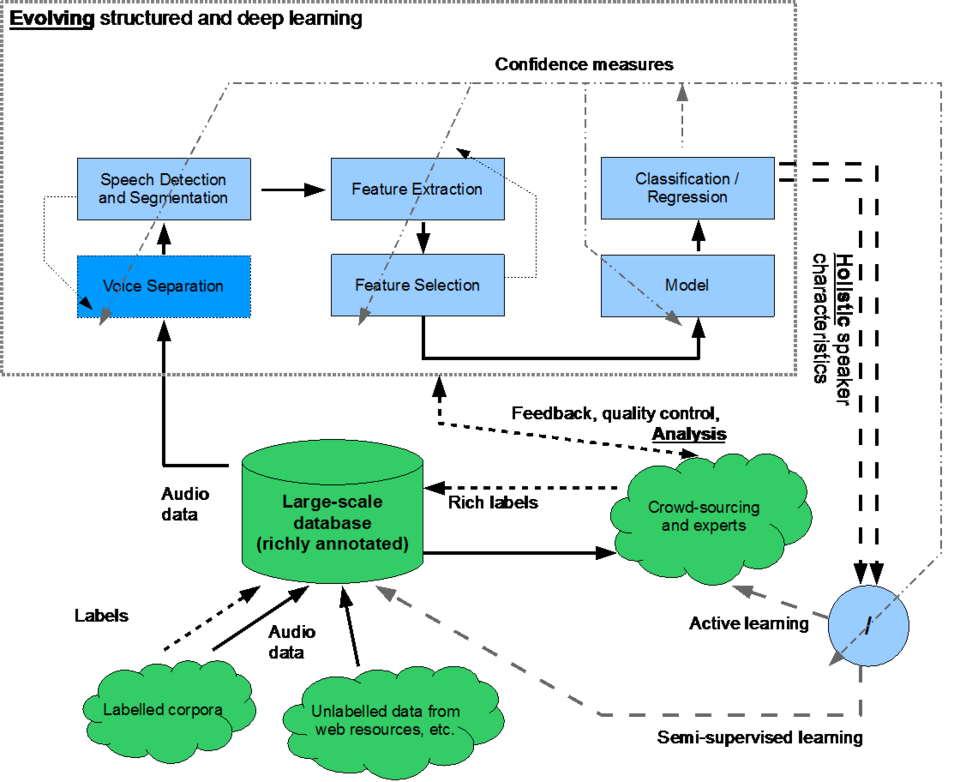
Components of a speech recognition system: detection, feature extraction, model and labelled training data.Image: IHEARu, Wikimedia Commons, CC BY-SA 4.0
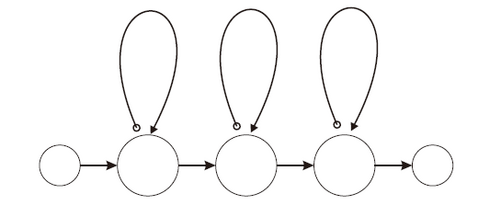
A left-to-right hidden Markov model topology, as used for phoneme models in classic ASR.Image: Edwardgao, Wikimedia Commons, Public domain
Background and principle of operation
Information in the speech signal
A speech waveform combines several layers of information at once:
Linguistic content: phonemes, words and sentences, carried mainly by the time-varying spectral envelope (formant patterns, bursts, frication, nasality) and by timing.
Speaker identity: vocal-tract length and shape (which shift all formants), vocal-fold size and behaviour (f0 range, voice quality), and learned habits (accent, speaking rate, word choice).
Paralinguistic information: emotion, effort, health and age.
Channel and environment: microphone response, telephone band-limiting, codecs, room reverberation and background noise.
ASR wants to keep the linguistic content and ignore speaker and channel differences. Speaker recognition wants to keep speaker identity and ignore the words and the channel. Both face the same core problem: the channel and environment change the signal as much as the information of interest does.
Features: from waveform to vectors
Both tasks start with the short-time analysis of topics 3.8 and 3.9. Typical front-end processing at 16 kHz sampling:
Pre-emphasis and division into 25 ms frames every 10 ms (100 frames per second), each multiplied by a Hamming window.
FFT and power spectrum, then summation into 23 to 80 triangular mel-scale filters.
Logarithm of each filter energy: these log-mel filterbank energies are the usual input to neural systems.
For MFCCs, a DCT of the log-mel energies, keeping 13 coefficients, and appending first and second time differences (delta and delta-delta) to capture dynamics: 39 values per frame.
Normalisation: cepstral mean (and variance) normalisation subtracts the average of each coefficient over the utterance. Because a fixed channel multiplies the spectrum, it adds a constant to the log spectrum and therefore to every cepstral coefficient; subtracting the mean removes much of a stationary microphone or telephone colouring.
Other features include perceptual linear prediction (PLP), f0 and energy contours for prosody, and, in modern systems, representations learned directly from waveforms by self-supervised neural networks.
import numpy as np
import librosa
sr = 16000
t = np.arange(sr) / sr # 1 s test signal
y = 0.5 * np.sin(2 * np.pi * 220 * t) + 0.2 * np.sin(2 * np.pi * 1500 * t)
mfcc = librosa.feature.mfcc(y=y, sr=sr, n_mfcc=13,
n_fft=400, hop_length=160, n_mels=40)
d1 = librosa.feature.delta(mfcc)
d2 = librosa.feature.delta(mfcc, order=2)
feats = np.vstack([mfcc, d1, d2])
print("MFCC matrix:", mfcc.shape)
print("with deltas:", feats.shape)
MFCC matrix: (13, 101)
with deltas: (39, 101)
A 25 ms window at 16 kHz is 400 samples and a 10 ms hop is 160 samples, so one second yields 101 frames (librosa pads the ends). One second of audio (16 000 samples) is reduced to 39 × 101 = 3939 numbers that describe the spectral envelope and its changes, discarding most fine structure.
Part A: Speaker recognition
Tasks and terminology
Task
Question answered
Comparison
Example
Speaker verification (authentication)
Is this speaker who they claim to be?
1 : 1, score against one enrolled model, accept or reject
Voice log-in to a banking or telehealth line
Closed-set identification
Which of N known speakers is this?
1 : N, choose best-scoring model
Labelling family members in home recordings
Open-set identification
Is this one of the N known speakers, and if so which?
1 : N plus rejection threshold
Watch-list style applications
Speaker diarisation
Who spoke when?
Segment and cluster, no prior enrolment needed
Attributing captions in a multi-talker meeting
Systems are also classed by what the speaker says. Text-dependent systems use a fixed pass-phrase at enrolment and test, which makes comparison easier and short utterances sufficient. Text-prompted systems ask for a random phrase, which makes replay attacks harder. Text-independent systems accept any speech and are needed for conversation, diarisation and forensic comparison, but require longer samples.
Architecture
Figure 3.10a. Speaker verification. Enrolment and test utterances pass through the same feature extractor and embedding model; the test representation is scored against the claimed speaker's stored model and the score is compared with a threshold.
Speaker models: from GMMs to neural embeddings
Gaussian mixture models (GMM). The distribution of a speaker's feature vectors is modelled as a weighted sum of many Gaussian components (often hundreds to a couple of thousand). In the GMM-UBM approach (Reynolds and colleagues, 2000) a large universal background model is trained on many speakers, and each enrolled speaker's model is obtained by adapting its means towards that speaker's data (maximum a posteriori adaptation). The verification score is the log-likelihood ratio between the speaker model and the background model.
Supervectors and i-vectors. Stacking the adapted means gives a very long supervector. The i-vector method (Dehak and colleagues, 2011) uses factor analysis to represent each utterance by a short vector (typically a few hundred values) in a "total variability" space that contains both speaker and channel variation. Channel effects are then reduced by linear discriminant analysis and the vectors are compared with probabilistic linear discriminant analysis (PLDA) or cosine scoring.
x-vectors and neural embeddings. A deep neural network is trained to classify thousands of training speakers from frame sequences. A statistics-pooling layer averages frame-level activations over the utterance, and a layer after pooling is used as the speaker embedding (the x-vector of Snyder and colleagues, 2018). Later architectures (residual networks, attention-based and channel-attention time-delay networks) follow the same embedding idea and are the basis of most current systems.
Scoring. Cosine similarity between embeddings, or PLDA, gives a score. Score normalisation against a cohort of impostor speakers improves threshold stability across conditions.
Key ideaWhatever the model, speaker recognition compares a fixed-length representation of a test utterance with that of an enrolled speaker and applies a threshold. The threshold, not the model alone, decides the balance between false acceptances and false rejections.
A simple classification concept with MFCCs
The cell below builds two synthetic "speakers" that differ in f0 and vocal-tract scale (formants 18 % higher for speaker B, a rough model of adult male and female voices), averages 12 MFCCs over each utterance as a crude embedding, enrols each speaker from three utterances, and classifies ten new utterances by cosine similarity. It shows the concept only: real voices vary far more between recordings than these synthetic ones, which is why real systems need trained embeddings and thousands of speakers.
import numpy as np
import librosa
from scipy import signal
sr = 16000
rng = np.random.default_rng(1)
VOWELS = [(730, 1090, 2440), (270, 2290, 3010), (300, 870, 2240)]
def utterance(f0, scale):
"""0.5 s of three vowels from a 'speaker' with given f0 and tract scale."""
out = []
for F in VOWELS:
n = int(0.5 * sr / 3)
f = f0 * (1 + 0.02 * rng.standard_normal()) # small f0 variation
src = (np.sin(2 * np.pi * f * np.arange(n) / sr) > 0.99).astype(float)
y = src + 0.01 * rng.standard_normal(n)
for Fk in F:
Fk = Fk * scale; r = np.exp(-np.pi * 100 / sr)
y = signal.lfilter([1], [1, -2 * r * np.cos(2 * np.pi * Fk / sr), r * r], y)
out.append(y / np.max(np.abs(y)))
return np.concatenate(out)
def embed(y): # mean MFCC vector (12 values)
m = librosa.feature.mfcc(y=y, sr=sr, n_mfcc=13, n_fft=512, hop_length=160)
return m[1:].mean(axis=1) # drop c0 (overall level)
speakers = {"A": (110, 1.00), "B": (210, 1.18)} # e.g. adult male, adult female
enrol = {s: np.mean([embed(utterance(*p)) for _ in range(3)], axis=0)
for s, p in speakers.items()}
def cos(u, v): return u @ v / (np.linalg.norm(u) * np.linalg.norm(v))
correct = 0
for true, p in speakers.items():
for _ in range(5):
e = embed(utterance(*p))
guess = max(enrol, key=lambda s: cos(e, enrol[s]))
correct += guess == true
print("identification accuracy:", correct, "/ 10")
print("cosine A vs B enrolment: %.3f" % cos(enrol["A"], enrol["B"]))
e = embed(utterance(*speakers["A"]))
print("new A utterance vs A: %.3f, vs B: %.3f" % (cos(e, enrol["A"]), cos(e, enrol["B"])))
identification accuracy: 10 / 10
cosine A vs B enrolment: 0.962
new A utterance vs A: 1.000, vs B: 0.962
Measuring speaker-recognition performance
A verification system makes two kinds of error:
False acceptance (false alarm): an impostor is accepted. The false acceptance rate (FAR) is the proportion of impostor trials accepted.
False rejection (miss): a genuine speaker is rejected. The false rejection rate (FRR) is the proportion of target trials rejected.
Raising the threshold lowers FAR and raises FRR. The equal error rate (EER) is the error rate at the threshold where FAR = FRR; it summarises a system with one number but does not tell you where to operate it. A detection error trade-off (DET) curve plots FRR against FAR for all thresholds, with both axes on a normal-deviate scale so that systems with Gaussian-like score distributions appear as near-straight lines (Martin and colleagues, 1997). Applications with a high cost of false acceptance, such as banking, operate at a low FAR and accept a higher FRR. Evaluation campaigns also use a detection cost function (DCF) that weights the two errors by their costs and by the prior probability of a target speaker.
Figure 3.10b. Schematic detection error trade-off (DET) plot. Each curve is one system; the point where it crosses the diagonal is its equal error rate. System 2 (blue) performs better than system 1 (red) at all operating points.
Worked example (illustrative numbers): out of 1000 impostor trials, 50 are accepted at threshold θ1, so FAR = 5 %; out of 1000 target trials, 120 are rejected, so FRR = 12 %. At a lower threshold θ2, FAR = 80/1000 = 8 % and FRR = 80/1000 = 8 %: this is the EER operating point, EER = 8 %.
import numpy as np
rng = np.random.default_rng(0)
target = rng.normal(2.0, 1.0, 5000) # same-speaker trial scores
impostor = rng.normal(0.0, 1.0, 5000) # different-speaker trial scores
thr = np.linspace(-3, 5, 2001)
far = np.array([(impostor >= t).mean() for t in thr]) # false accepts
frr = np.array([(target < t).mean() for t in thr]) # false rejects
i = np.argmin(np.abs(far - frr))
print("EER threshold = %.2f" % thr[i])
print("FAR = %.3f, FRR = %.3f" % (far[i], frr[i]))
EER threshold = 1.00
FAR = 0.160, FRR = 0.161
With target and impostor scores separated by two standard deviations, the theoretical EER is the probability that a normal variable exceeds 1 standard deviation, about 15.9 %; the simulation gives 16 %. Better systems separate the two score distributions further.
Threats and safeguards
Voice biometrics can be attacked by replaying a recording, by voice conversion or by synthetic speech from modern text-to-speech (topic 3.11). Anti-spoofing (presentation attack detection) systems try to detect such signals, and open evaluation challenges such as ASVspoof compare methods. Because voice cloning is now easy, voice alone should not be treated as a strong authentication factor for clinical records.
Part B: Automatic speech recognition
The statistical formulation
ASR chooses the word sequence W that is most probable given the observed feature sequence O. Using Bayes' rule, and noting that P(O) does not depend on W:
W* = argmax_W P(W | O) = argmax_W P(O | W) × P(W)
where P(O | W) is given by the acoustic model (with the pronunciation lexicon) and P(W) by the language model. In practice log probabilities are added, with a language-model weight and a word insertion penalty.
This formulation defined ASR from the 1980s to the 2010s and still describes the roles of the components even in systems where one neural network learns them jointly.
ASR pipeline
Figure 3.10c. Top: classical ASR with separate acoustic model, pronunciation lexicon and language model combined in a decoder. Bottom: end-to-end neural ASR, where one network maps features directly to characters or word pieces (an external language model can still be added).
Walk-through of the classical pipeline:
Audio capture and front end. Voice activity detection (VAD) finds speech regions; features are computed every 10 ms, with normalisation. Telephone systems work at 8 kHz, most others at 16 kHz.
Acoustic model. Estimates how likely each frame is under each speech-sound unit. Units are usually context-dependent phones (triphones: a phone with its left and right neighbours), clustered into a few thousand tied states.
Pronunciation lexicon. Lists each vocabulary word as a sequence of phones, for example "aid" as /eɪ d/. Words missing from the lexicon (new drug names, local place names, Malayalam words in English speech) cannot be recognised without a grapheme-to-phoneme model.
Language model. Assigns probabilities to word sequences. An n-gram model estimates P(word | previous n-1 words) from counts in a text corpus; neural language models use longer context.
Decoder. Searches the enormous space of possible word sequences, typically using Viterbi beam search over a network that combines HMM states, lexicon and grammar (often compiled into a weighted finite-state transducer), and keeps only the most promising hypotheses.
Post-processing. Punctuation, capitalisation and inverse text normalisation ("twenty five" to "25").
Hidden Markov models
Figure 3.10d. Three-state left-to-right HMM for one phone. Self-loops (a11, a22, a33) let a state last for several frames, so the model copes with different speaking rates; emission probabilities b(o) score how well each feature vector fits each state.
An HMM treats speech as a sequence of hidden states (roughly the beginning, middle and end of each phone) that emit observable feature vectors. Transition probabilities model timing; emission probabilities model the spectra. Word models are made by chaining phone models according to the lexicon. The Viterbi algorithm finds the single best state sequence efficiently by dynamic programming. HMM parameters are trained from transcribed speech with the expectation-maximisation (Baum-Welch) algorithm (Rabiner, 1989).
Historical progression
Period (approximate)
Approach
Key characteristics
1950s to 1970s
Template matching, dynamic time warping (DTW)
Isolated words, speaker-dependent, small vocabularies; stored examples aligned in time to the input
1980s to about 2010
HMM with GMM emissions
Statistical, continuous speech, large vocabularies, speaker-independent; MFCC features, triphones, n-gram language models, speaker adaptation
Early 2010s
Hybrid DNN-HMM
Deep neural networks replace GMMs for emission scores, giving large error reductions on standard tasks (Hinton and colleagues, 2012); log-mel features become common
Mid 2010s onward
End-to-end neural models
One network maps features to characters or word pieces: connectionist temporal classification (CTC), attention-based encoder-decoders, RNN transducers; later Transformer and Conformer encoders
Late 2010s onward
Self-supervised and large-scale weakly supervised models
Pre-training on large amounts of untranscribed audio (for example wav2vec 2.0), or training on very large multilingual collections of audio with approximate transcripts (for example Whisper); fine-tuning for new languages and domains with less labelled data
End-to-end models removed the need for a hand-built lexicon and separate component training, but they need large amounts of training data and can behave unpredictably outside that data. Large generative models may occasionally output fluent text that was not spoken (often called hallucination), particularly in silence or noise, which is a specific risk when transcripts are used as records.
Language model example
A bigram model estimates P(wi | wi-1) = C(wi-1 wi) / C(wi-1). If a clinic text corpus contains "hearing" 200 times and "hearing aid" 60 times, P(aid | hearing) = 60/200 = 0.30. Given acoustically similar hypotheses "hearing aid" and "hearing age", the language model strongly favours the first in an audiology context. A general-purpose model trained on other text would give domain terms such as "tympanogram" or "cochlear" low probability, which is one reason why ASR makes more errors on clinical vocabulary.
Word error rate
WER = (S + D + I) / N × 100 %
where S, D and I are the numbers of substituted, deleted and inserted words in the minimum-edit-distance alignment of the recognised text (hypothesis) against the reference transcript, and N is the number of words in the reference.
Worked example. Reference (N = 9): "the children are playing in the park after school". Hypothesis: "the children playing in a park after the school". Alignment gives one deletion ("are"), one substitution ("the" to "a") and one insertion ("the" before "school"). WER = (1 + 1 + 1) / 9 = 33.3 %. Word accuracy is sometimes quoted as 100 % - WER = 66.7 %. Because insertions are counted, WER can exceed 100 %. Before scoring, both texts are normalised (case, punctuation, numbers), and the normalisation rules must be reported because they change the result. Related measures include character error rate (CER), which suits languages without clear word boundaries or with rich morphology such as Malayalam, and sentence error rate.
def wer_counts(ref, hyp):
r, h = ref.split(), hyp.split()
# D[i][j] = edit distance between r[:i] and h[:j]
D = [[0] * (len(h) + 1) for _ in range(len(r) + 1)]
for i in range(len(r) + 1): D[i][0] = i
for j in range(len(h) + 1): D[0][j] = j
for i in range(1, len(r) + 1):
for j in range(1, len(h) + 1):
sub = D[i-1][j-1] + (r[i-1] != h[j-1])
D[i][j] = min(sub, D[i-1][j] + 1, D[i][j-1] + 1)
return D[len(r)][len(h)], len(r)
ref = "the children are playing in the park after school"
hyp = "the children playing in a park after the school"
errors, n = wer_counts(ref, hyp)
print("errors =", errors, " reference words =", n)
print("WER = %.1f %%" % (100 * errors / n))
errors = 3 reference words = 9
WER = 33.3 %
Try it: word error rate calculator
Edit the reference and the ASR output. Text is lower-cased and punctuation removed before alignment; the alignment shows substitutions (S), deletions (D) and insertions (I).
Substitutions S
Deletions D
Insertions I
Reference words N
WER
Try: make the hypothesis longer than the reference with many extra words and watch WER pass 100 %; replace one important word ("not") and note that WER treats it the same as a trivial word, which is a weakness when meaning matters clinically.
Misses soft speech, passes noise, causes hallucinated text in silence
Feature extractor
MFCC, log-mel, learned features
Mismatch between training and use conditions (bandwidth, noise)
Acoustic model / encoder
Maps features to speech-sound probabilities
Poor for accents, children, older adults and disordered speech that were rare in training
Lexicon or tokeniser
Defines the units the model can output
Out-of-vocabulary names, drugs, technical terms
Language model
Prefers likely word sequences
Over-corrects unusual but correct utterances; domain mismatch
Decoder
Searches for best transcript
Beam too narrow (search errors) or too wide (latency)
Speaker embedding model
Represents voice identity
Channel mismatch between enrolment and test, short utterances, voice change with illness or ageing
Scoring and threshold
Accept or reject decision
Threshold tuned on different population; spoofing attacks
Key parameters and specifications
Parameter
Typical value or range
Meaning
Sampling rate
16 kHz (8 kHz telephone)
Bandwidth available for consonant cues
Frame length / hop
25 ms / 10 ms
100 feature vectors per second
Features
13 MFCC (+ deltas = 39) or 40 to 80 log-mel bands
Spectral envelope representation
GMM-UBM components
typically 512 to 2048
Resolution of the background model
i-vector / x-vector dimension
typically a few hundred (x-vector commonly 512)
Size of the speaker representation
Enrolment speech
seconds (text-dependent) to minutes (text-independent)
More speech gives a more reliable model
WER
varies widely with task, speaker and conditions
Always report test material, conditions and normalisation
EER
task dependent
Summary of verification performance; not an operating point
Latency and real-time factor
live captioning needs low latency, often under about 1 to 2 s
Delay between speech and caption affects usability, especially with lip-reading
Clinical applications in audiology
Live captioning. ASR captions on phones, video calls, lecture platforms and dedicated captioning apps give many people with hearing loss access to speech they cannot follow by ear. Captioned telephone services may combine ASR with human correction. Audiologists should include captioning in communication-needs assessment and rehabilitation planning, and should explain its error patterns: errors cluster on names, numbers and technical words, and caption delay can conflict with lip-reading.
Accessibility of clinical services. Captions for tele-audiology sessions, patient-education videos and waiting-room announcements. Clinics remain responsible for checking accuracy where information is critical (for example medication or safety instructions).
Automatic scoring of speech tests. Research systems use ASR to score word or sentence repetition in speech-in-noise tests, allowing self-administered and remote testing. Such scoring must be validated against human scoring for the specific test material, language and population before any clinical use; errors in the ASR, not the listener, can otherwise lower the score.
Speech-in-noise research. ASR systems are sometimes used as "model listeners" to compare noise-reduction or hearing-aid processing conditions and to estimate intelligibility of processed speech. Machines and humans do not fail in the same way, so ASR results are a screening tool for algorithm development and not a substitute for listener testing.
Speech of people with hearing loss. ASR accuracy on the speech of deaf and hard-of-hearing talkers has been explored as a possible objective intelligibility measure; accuracy is typically lower than for typical speech, which is also an accessibility barrier when such speakers use voice assistants.
Speaker recognition and diarisation. Attributing captions to talkers in group conversations, analysing who speaks in recordings from daily life (for example in studies of the language environment of children with hearing loss), and own-voice detection concepts in hearing devices, where the processing differs when the wearer is talking.
Documentation. Dictation and ambient transcription of consultations are increasingly used for clinical notes; they raise the accuracy and privacy issues below.
Clinical linkAn ASR system that works well on clear adult speech in a quiet room may fail for a child with a cochlear implant, an older adult with dysarthria, or a family speaking a mixture of Malayalam and English. Test the system with the speakers and conditions you intend to serve before relying on it.
Limitations, errors and troubleshooting
Error source
Why it happens
What to check or do
Background noise and babble
Features corrupted; competing speech recognised as words
Close-talking or remote microphone, noise suppression, directional microphone, quieter seating
Reverberation and distance
Smeared spectral cues
Place microphone near the talker; use lapel or table microphones
Accent, dialect and code-switching
Under-represented in training data
Choose models trained or adapted for local English and Indian languages; measure WER on local speech
Children and older adults
Different f0, formants and speaking style
Test separately; use child-adapted models where available
Dysarthric speech and speech of people with hearing loss
Atypical articulation, timing and voice
Expect higher WER; speaker-adapted models and human review
Domain vocabulary
Words missing from lexicon or unlikely under the language model
Custom vocabulary or phrase lists where supported
Overlapping speakers
Models assume one talker
Turn-taking strategies, diarisation, one microphone per talker
Hallucinated text
Generative decoders produce plausible text in silence or noise
Use VAD, review transcripts, do not use unreviewed ASR text as a clinical record
Speaker-verification mismatch
Different microphone or channel from enrolment; voice change with illness
Enrol in multiple conditions; fall-back authentication
Privacy and consent
Speech contains identity and health information; cloud services store or process audio
Obtain informed consent, prefer on-device or approved services, follow institutional policy and data-protection law such as India's Digital Personal Data Protection Act, 2023
Beyond individual errors, reported WER figures depend heavily on test material. A low WER on read news speech does not predict performance on conversational speech from older adults in a noisy clinic. Fairness studies have shown that error rates can differ between demographic and accent groups, which matters for equity of access.
Demonstration
Equipment: laptop with microphone and loudspeaker, a speech-recognition system (for example the built-in dictation or live-caption feature of the operating system, or an open-source model run locally), Python with librosa, and non-sensitive recordings: a read passage in clean conditions, the same passage with café noise added at about +5 dB SNR, and the passage read by speakers with different accents. Do not use patient recordings.
Show the ASR pipeline (Figure 3.10c) and ask students which block uses the most prior knowledge about the language.
Play the clean recording into the ASR system and display the transcript. Compute WER with the calculator above against the known text.
Repeat with the noisy version and with accented readers. Tabulate S, D, I and WER for each condition and discuss which words failed.
Run the MFCC cell and display an MFCC matrix as an image alongside a spectrogram; point out that MFCCs encode the envelope, not harmonics.
Run the speaker-classification cell; then change speaker B's parameters to be closer to speaker A and watch the separation shrink.
Run the EER cell with the target mean changed from 2.0 to 1.0 and to 3.0, and relate the change in EER to the overlap of score distributions.
Close with a discussion of privacy: where does the audio go, who stores it, and what consent is needed?
Current developments
Large multilingual speech models trained on very large datasets, improving robustness to accents and noise but with new failure modes such as hallucination.
Self-supervised pre-training enabling ASR for lower-resource languages, including Indian languages, with less transcribed data.
On-device recognition on phones and wearables, reducing latency and keeping audio local, which is attractive for privacy.
Personalised and adapted models for atypical speech, including dysarthric speech and speech of deaf talkers, in research and some accessibility programmes.
Integration of captions into augmented-reality glasses and hearing-device apps, currently at an emerging stage.
Speaker-recognition research focused on robustness to spoofing and deepfake voices, and on privacy-preserving speaker embeddings.
Practical activity and assessment
Prepare a 50 to 80 word reference passage and record it in three conditions: clean, with background noise, and read by a speaker with a different accent (a classmate, with consent).
Transcribe each recording with the same ASR system.
Normalise the texts (lower case, no punctuation, numbers written consistently) and compute S, D, I and WER for each condition.
Classify each error by likely cause (noise, accent, vocabulary, speaking rate).
Extract MFCCs from your clean recording, plot them, and write two sentences on what they represent.
Deliverable: a one-page report with a WER table, error analysis and a short paragraph on implications for captioning users with hearing loss (P14 portfolio).
References
Jurafsky, D., Martin, J. H. Speech and Language Processing. Pearson (later editions available from the authors).
Rabiner, L. R., Schafer, R. W. Theory and Applications of Digital Speech Processing. Pearson.
Rabiner, L. R. (1989). A tutorial on hidden Markov models and selected applications in speech recognition. Proceedings of the IEEE, 77, 257 to 286.
Reynolds, D. A., Quatieri, T. F., Dunn, R. B. (2000). Speaker verification using adapted Gaussian mixture models. Digital Signal Processing, 10, 19 to 41.
Dehak, N., Kenny, P., Dehak, R., Dumouchel, P., Ouellet, P. (2011). Front-end factor analysis for speaker verification. IEEE Transactions on Audio, Speech, and Language Processing, 19, 788 to 798.
Snyder, D., Garcia-Romero, D., Sell, G., Povey, D., Khudanpur, S. (2018). X-vectors: robust DNN embeddings for speaker recognition. Proceedings of IEEE ICASSP.
Hansen, J. H. L., Hasan, T. (2015). Speaker recognition by machines and humans: a tutorial review. IEEE Signal Processing Magazine, 32(6), 74 to 99.
Martin, A., Doddington, G., Kamm, T., Ordowski, M., Przybocki, M. (1997). The DET curve in assessment of detection task performance. Proceedings of Eurospeech.
Hinton, G., et al. (2012). Deep neural networks for acoustic modeling in speech recognition. IEEE Signal Processing Magazine, 29(6), 82 to 97.
Graves, A., Fernández, S., Gomez, F., Schmidhuber, J. (2006). Connectionist temporal classification: labelling unsegmented sequence data with recurrent neural networks. Proceedings of ICML.
Baevski, A., Zhou, H., Mohamed, A., Auli, M. (2020). wav2vec 2.0: a framework for self-supervised learning of speech representations. Advances in Neural Information Processing Systems.
Radford, A., Kim, J. W., Xu, T., Brockman, G., McLeavey, C., Sutskever, I. (2023). Robust speech recognition via large-scale weak supervision. Proceedings of ICML.
librosa documentation. https://librosa.org
3.11
Speech synthesis
1 hour30.10.2026Practical P14
Speech synthesis, or text-to-speech (TTS), generates spoken language from text. It gives a voice to people who use augmentative and alternative communication (AAC) devices, reads screens and documents aloud, and lets researchers and clinicians create speech stimuli with precisely controlled properties. Modern neural TTS can sound close to a human talker, which brings new possibilities for test material in local languages and new risks when synthetic speech is treated as equivalent to natural speech.
What it is
A system with two main parts: a front end that converts written text into a linguistic description (phonemes, stress, phrasing, intonation targets), and a back end that converts that description into an acoustic representation and then into a waveform. Back ends range from rule-based formant synthesisers to deep neural networks with neural vocoders.
Why it is required
Many people cannot rely on their own voice (for example after laryngectomy or with severe motor speech disorders); many cannot read print easily; and speech science needs stimuli whose f0, formants, timing and talker are exactly known. Synthesis also allows the same test sentence to be produced consistently in many languages and voices.
How it works
Text is normalised ("Dr." to "doctor", "25" to "twenty-five"), converted to phonemes with a pronunciation dictionary and letter-to-sound rules, and assigned prosody. An acoustic model then predicts either formant tracks, a sequence of stored units, vocoder parameters or a mel spectrogram. A vocoder or waveform generator turns that representation into audio samples.
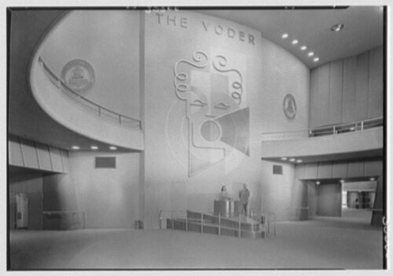
The Voder exhibit at the 1939 New York World's Fair: an early electronic speech synthesiser played by an operator.Image: Unknown author, Wikimedia Commons, Public domain
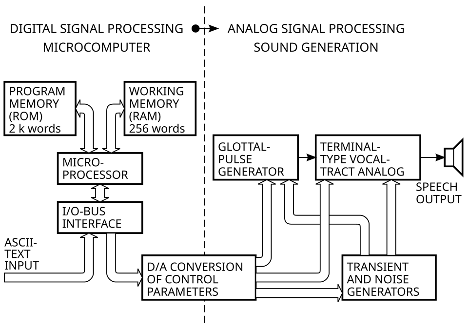
Block diagram of a formant-type speech synthesiser: a glottal pulse and noise source feeding a vocal-tract filter model.Image: Clusternote, Wikimedia Commons, CC BY-SA 3.0
Background and principle of operation
Synthesis is the inverse of the analysis covered in topics 3.8 to 3.10. Where analysis extracts f0, formants or spectral envelopes from speech, synthesis creates speech from them. The source-filter model is again the starting point: a voiced or noise source is shaped by vocal-tract resonances and radiated from the lips.
The text-to-speech front end
Text normalisation. Expands numbers, dates, currency, abbreviations and symbols into words. "Appointment on 3/11 at 10:30" must become words in the right order and style for the local convention, which differs between regions.
Linguistic analysis. Splits text into sentences and words, assigns parts of speech (which decide, for example, the stress in "record" as noun or verb), and detects phrase boundaries.
Grapheme-to-phoneme conversion (G2P). Looks words up in a pronunciation lexicon and applies learned or hand-written rules for unknown words. Names and borrowed words are frequent sources of error.
Prosody prediction. Predicts phone durations, pauses, stress and the f0 contour, which together carry sentence type (statement or question), focus and emotion.
Families of waveform generation
Articulatory synthesis models the movements of the articulators and the resulting tube acoustics. It is mainly a research tool.
Formant synthesis drives a source and a set of digital resonators (formant filters) with parameter tracks produced by rules. The best-known design is Klatt's cascade/parallel formant synthesiser (1980). Output is highly intelligible in good conditions but sounds mechanical. Every parameter is under direct control, which makes it valuable for speech-perception stimuli such as /ba/ to /da/ continua that vary only in F2 transition.
Concatenative synthesis joins recorded segments of a real talker. Diphone synthesis stores one example of each transition between two phones and modifies pitch and duration with signal processing such as pitch-synchronous overlap-add (PSOLA). Unit selection (Hunt and Black, 1996) searches a large recorded database for the sequence of units that minimises a target cost (how well each unit fits the required context) plus a join cost (how smoothly units connect). Unit selection can sound very natural when suitable units exist, with audible glitches when they do not.
Statistical parametric synthesis (Zen, Tokuda and Black, 2009) trains a statistical model, first hidden Markov models and later deep neural networks, to predict vocoder parameters (spectral envelope, f0, aperiodicity) from linguistic features. It is compact and flexible (voices can be adapted or changed easily) but often sounds buzzy or muffled because of vocoder limitations and statistical averaging (over-smoothing).
Neural TTS uses deep networks for both stages. Sequence-to-sequence models with attention (for example Tacotron 2) or non-autoregressive models with explicit duration prediction map phoneme or character sequences to mel spectrograms; neural vocoders (for example WaveNet, WaveRNN and GAN-based vocoders such as HiFi-GAN) generate the waveform. Some systems are trained end to end from text to waveform. Current systems can produce speech that listeners often rate close to natural recordings in quiet, and can imitate a voice from a short sample.
DefinitionVocoder: in synthesis, the component that turns an acoustic representation (vocoder parameters or a spectrogram) into a waveform. Classical vocoders use a source-filter model; neural vocoders learn the mapping from data. (The term comes from the "voice coder" used in telephony, related to the channel vocoder that underlies CI processing in topic 3.7.)
Architecture and signal flow
Figure 3.11a. Text-to-speech pipeline: text, then an acoustic representation, then a waveform. The same structure applies to formant, concatenative, statistical parametric and neural systems; what differs is how the acoustic model and vocoder are built.
Walk-through:
Input text. Plain text or text with markup (for example Speech Synthesis Markup Language, SSML) that sets rate, pitch, pauses and pronunciations.
Text normalisation and linguistic analysis. Produce a sequence of words and then phonemes, with syllable boundaries, stress and phrase breaks.
Prosody prediction. Assigns duration to each phone and an f0 contour to each phrase. In neural systems this is often learned implicitly inside the acoustic model.
Acoustic model. Converts the linguistic sequence into an acoustic representation frame by frame (typically every 5 to 12 ms).
Vocoder. Generates the waveform samples. For a mel spectrogram, a neural vocoder must also invent the phase and fine structure that the spectrogram does not contain; classical alternatives such as Griffin-Lim phase reconstruction produce audible artefacts.
Inside a formant synthesiser
Figure 3.11b. Simplified cascade formant synthesiser. AV and AF are the amplitudes of voicing and frication. Klatt's full design adds a parallel branch of resonators for fricatives and bursts, nasal pole-zero pairs and many more control parameters.
Components
Component
Function
What can go wrong
Text normaliser
Expands numbers, abbreviations, symbols
Wrong reading of dates, units, medical abbreviations ("dB HL", "mg")
Lexicon and G2P
Converts words to phonemes
Mispronounced names, Indian-language words written in Roman script, homographs
Prosody model
Durations, f0 contour, pauses
Flat or wrong intonation, wrong emphasis, questions read as statements
Acoustic model
Predicts acoustic frames
Skipped or repeated words (attention failures), over-smoothed spectra
Unit database (concatenative)
Supplies recorded segments
Missing contexts cause audible joins and pitch jumps
Vocoder
Generates waveform
Buzziness, metallic or phasey artefacts, noise in silent parts
Voice data and licence
Defines whose voice is heard
Unconsented voice cloning, licence restrictions on use in tests or publications
Key parameters and specifications
Parameter
Typical value or range
Meaning
Output sampling rate
16 to 48 kHz (22.05 or 24 kHz common in neural TTS)
Upper limit of reproduced bandwidth; affects fricatives
Mel spectrogram
about 80 bands, frame hop about 10 to 12 ms
Intermediate representation for most neural TTS
Formant update rate
every 5 to 10 ms
Time resolution of formant-synthesis control
Speaking rate
adjustable; conversational speech is roughly 150 to 200 words per minute
Slower rates often help listeners with hearing loss or cognitive decline
Mean opinion score (MOS)
1 (bad) to 5 (excellent)
Listener rating of quality or naturalness
Intelligibility score
% words correct or listener WER
Whether the message is understood, measured by transcription
Real-time factor
below 1 for live use
Synthesis time divided by audio duration; matters for AAC conversation
Algorithms and equations
Klatt digital resonator
y[n] = A x[n] + B y[n-1] + C y[n-2]
C = -exp(-2π B_w T)
B = 2 exp(-π B_w T) cos(2π F T)
A = 1 - B - C
where F is the formant frequency, B_w its bandwidth, T = 1/fs the sampling period, and A normalises the gain to 1 at 0 Hz.
Worked example: F = 500 Hz, Bw = 60 Hz, fs = 10 kHz (T = 0.1 ms). exp(-π × 60 × 0.0001) = exp(-0.01885) = 0.9813; cos(2π × 500 × 0.0001) = cos(0.3142) = 0.9511. So B = 2 × 0.9813 × 0.9511 = 1.8666, C = -0.98132 = -0.9630, and A = 1 - 1.8666 + 0.9630 = 0.0964. The same pole radius and angle appear in LPC (topic 3.8): a formant synthesiser and an LPC synthesis filter are two ways of writing the same resonances.
import numpy as np
from scipy import signal
fs = 10000 # sampling rate (Hz)
T = 1 / fs
def klatt_coeffs(F, B):
C = -np.exp(-2 * np.pi * B * T)
Bk = 2 * np.exp(-np.pi * B * T) * np.cos(2 * np.pi * F * T)
A = 1 - Bk - C # unity gain at 0 Hz
return A, Bk, C
A, Bk, C = klatt_coeffs(500, 60)
print("A = %.4f B = %.4f C = %.4f" % (A, Bk, C))
# y[n] = A x[n] + B y[n-1] + C y[n-2] -> denominator [1, -B, -C]
f, h = signal.freqz([A], [1, -Bk, -C], worN=8192, fs=fs)
g = 20 * np.log10(np.abs(h))
k = np.argmax(g)
print("peak at %.0f Hz, gain %.1f dB re 0 Hz" % (f[k], g[k]))
above = f[g >= g[k] - 3]
print("3 dB bandwidth about %.0f Hz" % (above.max() - above.min()))
A = 0.0964 B = 1.8666 C = -0.9630
peak at 499 Hz, gain 18.5 dB re 0 Hz
3 dB bandwidth about 59 Hz
Data rates through a neural TTS pipeline
A neural system operating at 22 050 Hz with a mel-spectrogram hop of 256 samples produces 22 050 / 256 = 86.1 frames per second. With 80 mel bands that is about 80 × 86.1 = 6891 values per second, which the vocoder must expand into 22 050 waveform samples per second: each frame is upsampled by a factor of 256. The spectrogram contains no phase, so the vocoder has to generate plausible fine structure, one reason why vocoder quality has such a large effect on naturalness.
Unit selection cost
Cost = sum_i C_target(u_i, t_i) + sum_i C_join(u_{i-1}, u_i)
where u_i is the candidate recorded unit for target position i with required properties t_i; the Viterbi algorithm finds the unit sequence with the lowest total cost.
Evaluating synthetic speech: intelligibility versus naturalness
Intelligibility
Is the message understood correctly?
Measured by listener transcription: percentage of words or phonemes correct, or listener WER.
Test materials include rhyme tests (for example the modified rhyme test) and semantically unpredictable sentences, which prevent listeners guessing from context.
Should also be tested in noise and with the intended listeners.
Naturalness and quality
Does it sound like a human talker? Is it pleasant?
Measured by mean opinion score (MOS) on a 5-point scale, following procedures such as ITU-T P.800, or by comparative methods such as MUSHRA (ITU-R BS.1534) and preference tests.
Also includes appropriateness of prosody and speaker similarity for cloned voices.
The two do not always move together. Rule-based formant synthesis can be highly intelligible in quiet while sounding clearly synthetic; a natural-sounding neural voice can still mispronounce a name. Synthetic speech has often been found to lose more intelligibility than natural speech in noise and for listeners with reduced hearing, because it may lack some of the redundant acoustic cues of natural speech. This is directly relevant to AAC users' conversation partners who have hearing loss, and to any test that uses synthetic stimuli.
Clinical applications
Stimulus creation. Formant synthesis creates continua for categorical-perception and cue-weighting studies (for example varying voice onset time or F2 transitions). Neural TTS can generate large sets of sentences in many languages and voices quickly, which is attractive for developing speech-in-noise material in Indian languages. Any such material must be checked for pronunciation, equalised for difficulty, and validated with listeners before use; normative data from natural-speech tests do not transfer to synthetic versions.
AAC devices. Speech-generating devices use TTS so that people who cannot speak intelligibly can communicate. Voice banking (recording one's own voice before it is lost, for example in progressive neurological disease) allows a personalised synthetic voice. Clinicians consider intelligibility for the user's regular listeners, the availability of the user's language and accent, age- and gender-appropriate voices, and latency.
Accessibility. Screen readers and read-aloud tools for people with visual impairment or reading difficulty, including people with combined hearing and vision loss who may need slower rates, higher levels or output routed to hearing aids or CIs.
Intelligibility testing and research. Synthetic speech allows exact control of talker, rate and level across conditions, and reproducible stimuli across sites. It is also used to study how people with hearing loss and CI users cope with degraded or unfamiliar talkers.
Patient information. Automated instructions for tele-audiology and home testing in the patient's language, with careful checking of pronunciation of clinical terms.
Auditory training. Training software can use many synthetic voices to expose listeners to talker variability.
Common errorReplacing the recorded talker of a validated speech test with a synthetic voice creates a new, unvalidated test. Scores cannot be compared with the original norms until equivalence has been demonstrated.
Limitations, errors and troubleshooting
Problem
Cause
What to check or do
Mispronounced names or local words
Missing from lexicon; G2P trained on another language variety
Use custom pronunciation or phonetic spelling (SSML phoneme tags where supported); listen to every stimulus
Wrong reading of numbers and units
Text normalisation rules for another region
Write numbers and units out in words in critical text
Monotonous or odd intonation
Prosody model limitations, lack of context
Add punctuation or markup; choose a different voice; shorten sentences
Buzzy or metallic quality
Vocoder limitations
Use a higher-quality voice or sampling rate; avoid further compression
Skipped or repeated words
Attention or alignment failures in neural models
Check transcripts of generated stimuli; regenerate
Reduced intelligibility in noise
Fewer redundant cues than natural speech
Test in the intended noise and with intended listeners; adjust rate and level
Different loudness across stimuli
TTS output levels vary
Normalise RMS level and calibrate as for any speech material
Ethical and legal risk
Voice cloning without consent, misleading use
Use voices with explicit consent and licence; disclose that speech is synthetic
Ethical considerations
Consent: a person's voice is personal data and part of their identity. Cloning a patient's or colleague's voice needs explicit, informed consent covering the intended uses.
Disclosure: listeners (including research participants) should know when speech is synthetic.
Misuse: realistic cloned voices can be used for fraud and deception, which also weakens voice-based authentication (topic 3.10).
Equity: languages, accents and child voices are unevenly supported, which affects AAC users and multilingual services.
Responsible AI guidance from professional bodies, institutions and national regulators should be followed for clinical and research use.
Demonstration
Equipment: laptop with loudspeakers or headphones, the built-in TTS voices of the operating system, an open-source synthesiser (for example eSpeak NG, a compact rule-based synthesiser, which Praat also uses for its SpeechSynthesizer object), access to a neural TTS voice if institutional policy allows, and Praat or Python for spectrograms.
Type the same sentence, including a number, a date and a local name, into two or three different TTS voices. Students note mispronunciations and text-normalisation errors.
Generate the sentence with a rule-based synthesiser and with a neural voice. Students rate naturalness on a 1 to 5 scale and transcribe each version played at a low level with background noise.
Open both outputs and a natural recording of the same sentence in Praat. Compare spectrograms, f0 contours and formant tracks.
Show the text, acoustic representation, waveform concept: display a mel spectrogram (librosa) of the synthetic sentence, then the waveform, and explain which stage produced each.
Run the Klatt resonator cell and relate the coefficients to the LPC poles of topic 3.8.
Discuss where synthetic speech would and would not be acceptable in audiology practice.
Current developments
Neural TTS with naturalness ratings close to recorded speech for read sentences in well-resourced languages.
Few-shot and zero-shot voice cloning from short recordings, together with work on watermarking and detection of synthetic speech.
Multilingual models and growing support for Indian languages, including code-mixed text, though quality varies between languages.
Expressive and controllable synthesis (emotion, emphasis, speaking style), relevant to AAC users who want to convey more than words.
Personalised AAC voices built from voice banking or from limited recordings of dysarthric speech.
Use of TTS to generate large speech corpora for training ASR and for developing hearing-device algorithms, with ongoing questions about how well synthetic data represent real speech.
Practical activity and assessment
Choose five short sentences, including one question, one number and one local name.
Generate them with two different TTS systems and record the same sentences spoken naturally by a classmate.
Ask three listeners to transcribe each version at a comfortable level and at a low level with background noise, and to rate naturalness from 1 to 5.
Compute percent words correct (or listener WER) and mean naturalness ratings for each version.
Write a short comparison (300 words) of intelligibility versus naturalness, stating whether you would use each voice for AAC, for patient information and for a speech test, with reasons.
References
Taylor, P. Text-to-Speech Synthesis. Cambridge University Press.
Klatt, D. H. (1980). Software for a cascade/parallel formant synthesizer. Journal of the Acoustical Society of America, 67, 971 to 995.
Hunt, A. J., Black, A. W. (1996). Unit selection in a concatenative speech synthesis system using a large speech database. Proceedings of IEEE ICASSP.
Zen, H., Tokuda, K., Black, A. W. (2009). Statistical parametric speech synthesis. Speech Communication, 51, 1039 to 1064.
van den Oord, A., et al. (2016). WaveNet: a generative model for raw audio. arXiv preprint.
Shen, J., et al. (2018). Natural TTS synthesis by conditioning WaveNet on mel spectrogram predictions. Proceedings of IEEE ICASSP.
Kong, J., Kim, J., Bae, J. (2020). HiFi-GAN: generative adversarial networks for efficient and high fidelity speech synthesis. Advances in Neural Information Processing Systems.
Griffin, D. W., Lim, J. S. (1984). Signal estimation from modified short-time Fourier transform. IEEE Transactions on Acoustics, Speech, and Signal Processing, 32, 236 to 243.
Benoît, C., Grice, M., Hazan, V. (1996). The SUS test: a method for the assessment of text-to-speech synthesis intelligibility using semantically unpredictable sentences. Speech Communication, 18, 381 to 392.
ITU-T Recommendation P.800. Methods for subjective determination of transmission quality.
ITU-R Recommendation BS.1534. Method for the subjective assessment of intermediate quality level of audio systems (MUSHRA).
Jurafsky, D., Martin, J. H. Speech and Language Processing (chapter on text-to-speech). Pearson.
Boersma, P., Weenink, D. Praat manual (SpeechSynthesizer). https://www.praat.org
3.12
Inside a modern wireless hearing aid: system-on-chip architecture
Supplementary2 hoursPractical P5Based on NXP reference block diagrams (2025)
A present-day hearing aid is a tiny computer with a radio: one system-on-chip (SoC) captures sound from digital microphones, runs the hearing-aid algorithms, talks to phones and public broadcasts over Bluetooth Low Energy, and manages a battery that may be disposable zinc-air or rechargeable lithium-ion. This topic takes three published reference block diagrams from the semiconductor maker NXP (rechargeable, non-rechargeable and NFC wireless-rechargeable hearing aids) and explains every block, bus and standard in them, so that audiologists can reason about streaming compatibility, battery life, charging, pairing faults and firmware updates from an understanding of what is inside the shell.
What it is
The hardware platform of a wireless hearing aid: a Bluetooth LE Audio SoC containing processor cores, audio DSPs, memory and a 2.4 GHz radio, surrounded by digital microphones, a class-D output stage and receiver, a crystal clock, optional external DSP and flash memory, an antenna path, an interoperability (MFi) block and a power subsystem (zinc-air cell, or lithium-ion cell with a power-management IC, optionally charged wirelessly by NFC).
Why it is required
Every feature an audiologist fits or counsels on (directional microphones, compression, streaming from iPhone or Android, Auracast venues, rechargeable batteries, remote adjustment, firmware updates) is only possible because a particular block exists and has enough power, memory and radio capability. Knowing the architecture explains why aids differ in battery life, why some phones stream and others do not, and why a firmware update can add features.
How it works
Sound is converted by digital MEMS microphones into a 1-bit pulse-density stream, decimated to multi-bit samples, processed by the DSP (filterbank, compression, noise reduction, feedback cancellation), mixed with any decoded Bluetooth stream and sent to a class-D amplifier that drives the receiver. A microcontroller core supervises everything over SPI and I2C buses, the radio exchanges LC3-coded audio and control data at 2.4 GHz, and the power subsystem converts battery energy into the regulated rails the chips need.
Inside a behind-the-ear hearing aid: microphones, DSP circuit board, receiver, battery compartment and tone hook.Image: Laserlicht, Wikimedia Commons, CC BY-SA 4.0A receiver-in-canal style hearing aid with a thin wire and dome.Image: Bastique, Wikimedia Commons, CC BY 4.0
RememberNXP names and part numbers (NXH2004, PCA9420, PCA9421, PCA9422, PCA943x, CRN120, CTN73x) are used here for teaching, to explain a published reference design. This is not an endorsement. Hearing-aid manufacturers use chips from several semiconductor companies and many design their own; the architectural ideas apply to all of them.
This topic builds on 3.1 (digital hearing-aid architecture), 2.9 (modulation, Bluetooth and NFMI), 1.5 (structure of a DSP system) and 1.6 (analogue-to-digital and digital-to-analogue conversion). Read 3.1 first if the idea of a digital signal chain is new.
Overview: three reference designs
NXP publishes application pages on which a typical product is drawn as a block diagram with recommended parts. For hearing aids there are three variants, all dated June 2025 on the source documents. Each is built around the same SoC, the NXH2004, which NXP describes as an ultra-low-power hearing-aid SoC for Bluetooth LE Audio. The introductory paragraph shared by all three diagrams states that the NXH2004 is Bluetooth 5.3 LE Audio certified, supports Auracast broadcast audio, MFi (Made for iPhone/iPad/iPod), ASHA (Audio Streaming for Hearing Aids) and HAP (the Hearing Access Profile), has an integrated audio DSP so that hearing-aid algorithms can run directly on the chip, can operate directly from zinc-air batteries, and, combined with NXP's PMIC (the PCA9420), forms a compact solution for lithium-ion hearing aids.
The three designs differ mainly in where the energy comes from:
Rechargeable hearing aid: a lithium-ion (Li-ion) cell and a power-management IC (PMIC) that charges the cell from a wired or contact charger and produces the supply rails. An optional front-end module (power amplifier and low-noise amplifier) extends radio range.
Non-rechargeable hearing aid: a disposable zinc-air (Zn-air) button cell powers the SoC directly, with no PMIC. The radio connects to the antenna through a balun, and there is no front-end module.
NFC wireless rechargeable hearing aid: a Li-ion cell charged without contacts through a small coil, using NFC (13.56 MHz) wireless charging. The aid contains an NFC wireless-charging power receiver and a communication receiver; the charging case contains an NFC wireless-charging poller (transmitter).
None drawn: the SoC's internal regulators run from the cell
NFC wireless-charging power receiver (PCA943x) with rectifier; supplies VOUT to the battery and VPWR to the system
Charging method
Charger dock or case through contacts (5 V class input)
Not applicable: the cell is replaced
Contactless, 13.56 MHz magnetic coupling from a charging case containing an NFC poller (CTN73x)
Radio path to antenna
Through optional PA/LNA front-end module
Through a balun
Through optional PA/LNA front-end module
Flash memory (SPI)
Yes
Yes
Yes
External DSP (SPI)
Yes (non-NXP)
Yes (non-NXP)
Yes (non-NXP)
Digital microphones
DMICs on the SoC's DMIC interface
Same
Same
Clock
32 MHz crystal
32 MHz crystal
32 MHz crystal
Output
Class-D amplifier to receiver, controlled over I2C
Same
Same
Interoperability block
MFi, on I2C, powered from PMIC VPWR
MFi, on I2C
MFi, on I2C, powered from the power receiver VPWR
Extra parts in the product
Charger base
Supply of disposable cells
Charging case with NFC poller (CTN73x), matching network and coil; communication receiver (CRN120) in the aid
In all three diagrams NXP uses a legend of three kinds of block: NXP technology (filled blue in the original, the MCU, PMIC and NFC parts), non-NXP technology (grey: flash memory, external DSP, microphones, class-D amplifier, MFi block, balun, batteries) and optional technology (dashed outline: the PA/LNA front-end module). The redrawn diagrams below use the same three categories.
Background: what a system-on-chip is
An integrated circuit (IC, or chip) is a single piece of silicon on which transistors, resistors and capacitors are fabricated and wired together. A system-on-chip puts most of a complete electronic system on one die: processor cores, memories, clock generators, power regulators, digital interfaces and, in wireless SoCs, a radio transceiver. The alternative, a board of separate chips, needs more area, more interconnections and more energy to drive signals between packages. In a hearing aid, where the whole electronics must fit in a few cubic millimetres and run for days on a button cell, integration is the only practical route. NXP gives the NXH2004 as a wafer-level chip-scale package (WLCSP) of 9.1 mm² with 48 bumps; a WLCSP is essentially the bare die with solder balls, so the package is hardly bigger than the silicon.
Processor cores
A central processing unit (CPU) core fetches instructions from memory and executes them one after another: arithmetic, comparisons, reading and writing memory, and controlling peripherals. A microcontroller (MCU) is a CPU core packaged with its own memory and peripherals so that it can control a device without an external computer. The NXH2004 contains two Arm Cortex-M0+ cores according to NXP's product page and block diagram: one serves as the application processor (running the hearing-aid control software, the user interface and the Bluetooth host protocols) and the other runs the Bluetooth link layer, the time-critical part of the radio protocol that decides exactly when each packet is sent or received. The Cortex-M0+ is one of Arm's smallest and most energy-efficient 32-bit cores, suited to control tasks rather than heavy signal processing.
Signal processing is done by dedicated digital signal processors (DSPs). A DSP is a processor whose instruction set and data paths are optimised for the operations that dominate filtering and spectral analysis: multiply-accumulate (MAC, computing a = a + b × c in one cycle), circular buffers for delay lines and zero-overhead loops. NXP states that the NXH2004 has a dual-core CoolFlux audio DSP. Splitting control (MCU) from signal processing (DSP) is standard in hearing-aid platforms because the DSP can then run the audio path with fixed, predictable timing while the MCU handles irregular events such as button presses and radio messages.
Memory
Three kinds of memory appear. ROM (read-only memory) holds code fixed at manufacture, for example a boot loader and parts of the Bluetooth stack. RAM (random-access memory) holds working data: audio buffers, filter states, variables; it loses its contents without power. Flash is non-volatile rewritable memory: it keeps its contents with no power and can be erased and reprogrammed, which is how firmware and fitting parameters are stored. NXP's fact sheet lists 640 kB of flash, 160 kB of RAM and 128 kB of ROM on the NXH2004. For comparison, one second of 16-bit mono audio at 16 kHz sampling needs 32 kB, so on-chip RAM is enough for short processing buffers but not for long recordings, which is one reason data logging stores statistics rather than audio.
Peripherals and interfaces
Peripherals are the on-chip hardware blocks through which the cores talk to the outside world. NXP's block diagram of the NXH2004 lists two SPI interfaces, a UART, I2C, GPIO, I2S/PCM, two PDM interfaces, an RSA/AES security block, the 2.4 GHz transceiver with crystal and oscillators (HFO and LFO, high- and low-frequency oscillators), and power regulators with a power-management unit (PMU). Briefly: SPI and I2C are serial buses for other chips (explained below); UART is a simple asynchronous serial port often used for factory test and debugging; GPIO (general-purpose input/output) pins read push buttons and switch things on and off; I2S and PCM carry multi-bit digital audio between chips; PDM carries 1-bit audio from digital microphones; RSA and AES are cryptographic algorithms used for authentication and encryption of wireless links and firmware.
Low-power modes
Energy per operation is fixed by the silicon process, so a hearing aid saves energy mainly by not doing things. Digital logic consumes power mostly when it switches (dynamic power, proportional to capacitance, the square of supply voltage and clock frequency), plus a small leakage current whenever it is powered. SoCs therefore provide several modes: active (cores running), idle (clock stopped to the core, peripherals running), sleep (most blocks unpowered, a low-frequency oscillator keeping time) and deep sleep or ship mode (almost everything off). The radio is duty-cycled: it wakes for a few hundred microseconds at scheduled instants to exchange packets and sleeps in between. The audio path cannot sleep while the aid is worn, so the DSP runs continuously at the lowest clock rate that completes each block of samples in time.
P_dyn = α × C × V² × f
where P_dyn is dynamic power, α the fraction of the circuit switching per cycle, C the switched capacitance, V the supply voltage and f the clock frequency.
Worked example: halving the core supply from 1.2 V to 0.6 V at the same clock and activity reduces dynamic power to (0.6/1.2)² = 0.25 of its original value, a 75% saving. This is why hearing-aid chips run their digital cores from low regulated voltages (NXP's fact sheet says the NXH2004 solution requires only 1.2 V to operate) and why the buck regulators in a PMIC have programmable outputs down to about 0.5 V.
Key ideaThe square law for voltage makes the regulator the most important power-saving component in a rechargeable aid: the Li-ion cell's 3.7 V is far higher than the digital logic needs, so an efficient step-down converter, not a simple resistor or linear drop, is used to generate the core supply.
Architecture and signal flow
The three diagrams below are redrawn in this site's style. Blue blocks are NXP technology, plain blocks are non-NXP technology and the dashed block is optional, as in the source. Each diagram is followed by a walk-through in signal order: sound in to sound out, then control, then power, then wireless.
Design 1: rechargeable hearing aid (Li-ion with PMIC)
Figure 3.12a. Rechargeable hearing aid. Redrawn and simplified from NXP's reference block diagram (Rechargeable Hearing Aid Block Diagram, NXP, 2025). Recommended parts: NXH2004 (MCU), PCA9420/PCA9421 or PCA9422 (PMIC).
Walk-through of Design 1
Sound in. Two digital microphones (DMICs) sit on the SoC's DMIC interface. Each is a MEMS microphone with its own preamplifier and sigma-delta modulator, so the signal leaving it is already digital: a 1-bit pulse-density-modulated (PDM) stream at a clock rate in the megahertz range. Two microphones allow directional processing (see 3.1). NXP lists support for dual digital microphones on the NXH2004.
Conversion to samples. Inside the SoC, decimation filters convert each PDM stream into multi-bit PCM samples at an audio rate (for example 16 or 32 kHz). This is the digital equivalent of the ADC stage in 1.6.
Processing. The integrated audio DSP runs the hearing-aid algorithms: analysis filterbank, wide dynamic range compression (WDRC), noise reduction, feedback cancellation, directional processing and mixing of streamed audio. If a manufacturer's algorithms need more computing power than the integrated DSP offers, the external DSP on SPI takes part of the load.
Sound out. Processed samples leave the SoC as a digital audio stream to the class-D amplifier in the Interfaces block, which switches the receiver (the hearing-aid loudspeaker) between supply rails at high frequency. The receiver's own inductance and the ear's response smooth the switching into sound. NXP's diagram shows only the I2C control link to this block; the audio connection (for example PDM or I2S) is drawn dashed here because it is implied rather than shown.
Control. The MCU configures the class-D amplifier (gain, enable, mute), the PMIC and the MFi block over I2C, and reads firmware and fitting data from the flash memory over SPI. The 32 MHz crystal gives the reference frequency for the radio and, through on-chip frequency synthesis, for the audio and processor clocks.
Power. The Li-ion battery connects to the PMIC. The PMIC's charger delivers charging current to the battery (the VOUT line in the diagram), and its regulators produce VPWR, the supply rail for the SoC and for the MFi block. The MCU talks to the PMIC over I2C to set output voltages, read charge status and put the system into low-power modes.
Wireless. The SoC's 2.4 GHz radio connects through an optional PA/LNA front-end module to the antenna. The PA (power amplifier) raises transmit power and the LNA (low-noise amplifier) improves receive sensitivity, both extending range; a designer omits the module when the on-chip radio alone gives enough range, saving area, cost and battery current.
Design 2: non-rechargeable hearing aid (zinc-air)
Figure 3.12b. Non-rechargeable hearing aid. Redrawn and simplified from NXP's reference block diagram (Non-Rechargeable Hearing Aid Block Diagram, NXP, 2025). Recommended part: NXH2004 (MCU). The audio connection from SoC to class-D amplifier is implied, as in Figure 3.12a.
Walk-through of Design 2
Sound in, processing and sound out follow the same path as Design 1: DMICs with PDM output, decimation inside the SoC, the integrated audio DSP (with the optional help of an external DSP on SPI), and a class-D amplifier driving the receiver.
Control. One I2C bus from the SoC is shared by the MFi interoperability block and the class-D amplifier. Sharing a bus is normal for I2C, because each device has its own address. Flash memory is on SPI (drawn on the right in NXP's version).
Power. There is no PMIC. The zinc-air cell connects straight to the SoC, whose internal regulators and power-management unit derive the core and radio supplies from the cell's roughly 1.2 to 1.4 V under load. NXP states that the NXH2004 can operate directly on zinc-air batteries. This saves the area and cost of a separate power IC but makes the design sensitive to the cell's voltage dips during radio transmission (see Limitations).
Wireless. The radio drives the antenna through a balun, a small passive component that converts the radio's balanced (differential) RF port into the single-ended (unbalanced) signal an antenna feed usually needs and matches impedances. There is no front-end module: a PA would draw extra current that a zinc-air cell is poorly suited to supply.
Design 3: NFC wireless rechargeable hearing aid
Figure 3.12c. NFC wireless rechargeable hearing aid and its charging case. Redrawn and simplified from NXP's reference block diagram (NFC Wireless Rechargeable Hearing Aid Block Diagram, NXP, 2025). Recommended parts: NXH2004 (MCU), PCA943X (NFC wireless-charging power receiver), CRN120 (NFC wireless-charging communication receiver front end), CTN73x (NFC wireless-charging transmitter).
Walk-through of Design 3
Sound in, processing, sound out and control follow Designs 1 and 2: DMICs, integrated DSP with optional external DSP and flash on SPI, class-D amplifier on I2C, MFi block on I2C, optional PA/LNA front-end module to the antenna.
Power inside the aid. The PMIC of Design 1 is replaced by an NFC wireless-charging power receiver (PCA943x). It takes the rectified energy picked up by the aid's coil, charges the Li-ion battery (VOUT), and supplies VPWR to the SoC and the MFi block. It is controlled by the MCU over I2C. NXP's product page describes the PCA943x as a 1 W NFC wireless-charging receiver supporting up to 200 mA, with over-voltage and over-temperature protection, an integrated 10-bit ADC and an I2C target interface.
Energy path from the case. In the charging case, the NFC transmitter (CTN73x) generates a 13.56 MHz signal which passes through a matching network into the case coil. The alternating magnetic field couples into the aid's coil a few millimetres away. The aid's matching network tunes its coil to resonance at 13.56 MHz; the rectifier converts the induced alternating voltage to DC for the power receiver.
Communication path. The same coil and matching network also feed the NFC wireless-charging communication receiver (CRN120), which answers the case's NFC commands. Through this link the case discovers that a chargeable device is present, reads its requirements and controls the power transfer. The CRN120 talks to the MCU over I2C, so the hearing-aid firmware can know when it has been placed in the case (for example to switch off the audio path and start charging).
The dividing line in the figure separates the hearing aid (above) from the charging case (below). Nothing crosses it except the magnetic field, so the aid needs no charging contacts, which helps sealing against sweat and moisture.
The audio signal chain inside the SoC
The block diagrams show chips; Figure 3.12d shows what happens to the sound inside them. It is the same chain described in 3.1, with the two wireless-specific additions: PDM decimation at the input and a Bluetooth stream mixed in before the output.
Figure 3.12d. Audio signal chain inside a hearing-aid SoC, from microphones to receiver, with the Bluetooth stream mixed in before the output stage. Numbers in brackets point to the topics in this unit that explain each algorithm.
The technologies in detail
The audio DSP and what it runs
The integrated audio DSP is where the hearing-aid prescription becomes sound. NXP states that the NXH2004's DSP lets hearing-aid algorithms run directly on the device; the algorithms themselves are written by each hearing-aid manufacturer and are their main intellectual property. A typical processing load, block by block, is:
Analysis filterbank: splits the signal into frequency channels (for example 8 to 48 in current products, depending on the design) so that gain and compression can vary with frequency. See 3.2.
Wide dynamic range compression (WDRC): in each channel, measures the level with attack and release time constants and applies level-dependent gain according to the fitted input/output curves. See 3.3.
Noise reduction: estimates the noise in each channel and reduces gain where the signal-to-noise ratio is poor. See 3.4.
Feedback cancellation: an adaptive filter models the acoustic path from receiver back to microphone and subtracts its predicted contribution from the microphone signal. See 3.5.
Directional processing: combines the two microphone signals with delays and weights to favour sounds from the front.
Environment classification, synthesis and mixing: decides which program or settings suit the scene, recombines the channels and adds streamed audio at the chosen mix ratio.
All of this runs on short blocks of samples. The total delay from microphone to receiver (the processing latency) is usually kept to a few milliseconds, because longer delays make the aid's sound interfere audibly with the direct sound through an open fit (comb filtering) and with the wearer's own voice. The block size and filterbank design are chosen to meet that delay budget within the available DSP cycles.
Why add an external DSP
All three diagrams show a separate, non-NXP DSP connected over SPI. A manufacturer might add one when:
its existing algorithm library was written for another processor family and porting it would be slow or risky;
a feature needs more computation than the integrated DSP provides, for example many-channel processing, binaural beamforming or deep neural network (DNN) noise reduction;
it wants to keep a proprietary processor across product generations and use the Bluetooth SoC mainly as a radio and system controller.
The cost is board area, a second supply load and the energy needed to move audio across the bus. SPI is chosen because it is fast enough to carry audio and control data between chips. In products without demanding algorithms the external DSP is omitted.
Flash memory: firmware, fitting data and updates
Every diagram includes a flash memory on SPI in addition to the SoC's internal flash. Flash is used for:
Firmware: the programme code of the MCU and DSP, including the Bluetooth stack and algorithms.
Fitting parameters: the audiologist's settings for each program (gains, compression ratios, kneepoints, time constants, maximum output, feature settings), written by the fitting software.
Data logging: hours of use, time in each acoustic environment, volume changes, streaming time.
Firmware images for over-the-air (OTA) updates: a new image is downloaded over Bluetooth into spare flash, checked (for example by a cryptographic signature, which is one use of the RSA/AES block), and only then activated. Keeping the old image until the new one is verified protects the aid from being left unusable if the download is interrupted.
Flash has limits that matter in service: it can be erased only in blocks, each block tolerates a finite number of erase cycles (typically tens of thousands to around a hundred thousand for NOR flash, depending on the device), and writing needs a stable supply. This is why manufacturers advise that an aid should have a charged battery during a firmware update.
SPI and I2C: the buses between chips
A bus is a set of shared wires and a set of rules (a protocol) for moving data between chips. Hearing-aid boards use serial buses, which send bits one after another, because every extra wire costs area. Both buses in the diagrams are synchronous: a clock line tells the receiver exactly when to read each bit. Both use a controller (historically called master) that generates the clock and starts every transfer, and one or more targets (historically called slaves) that respond.
SPI (Serial Peripheral Interface)
Four wires: SCLK (clock), MOSI (controller out, target in), MISO (controller in, target out) and CS (chip select, one per target).
Full duplex: a byte goes out on MOSI while a byte comes back on MISO in the same 8 clock pulses.
No addresses: the controller pulls one target's CS line low to select it.
Fast: clock rates of several MHz to tens of MHz are common, set by the devices and board.
Push-pull outputs drive lines actively high and low, so edges are sharp and power per bit is low.
Typical uses in the diagrams: flash memory, external DSP.
I2C (Inter-Integrated Circuit)
Two wires: SCL (clock) and SDA (data), shared by all devices.
Half duplex: data goes one way at a time.
Addressed: each transfer starts with a 7-bit device address, and the addressed target acknowledges each byte.
Slower: standard modes are 100 kHz, 400 kHz (Fast-mode) and 1 MHz (Fast-mode Plus); PCA9420 lists a 1 MHz I2C interface.
Open-drain lines with pull-up resistors: devices only pull low; the resistor pulls high. This allows sharing but costs a little current whenever a line is low.
Typical uses in the diagrams: PMIC, class-D amplifier configuration, MFi block, NFC charging receivers.
Figure 3.12e. The same data byte (0xA5 = 1010 0101) sent over SPI (left, with the target returning 0x3C on MISO at the same time) and over I2C (right, to a target at address 0x2A). SPI needs 8 clock pulses; I2C needs 18 plus start and stop conditions because it also sends the address and acknowledge bits.
Worked example: writing one configuration byte to a device on I2C takes about 20 bit periods (start, 7 address bits, write bit, acknowledge, 8 data bits, acknowledge, stop). At 400 kHz each bit period is 2.5 µs, so the transfer takes about 20 × 2.5 = 50 µs; at 1 MHz about 20 µs. On SPI at 8 MHz the same byte takes 8 × 0.125 = 1 µs. Neither matters for occasional control writes, which is why slow, pin-saving I2C is used for control and fast SPI for bulk data such as reading a 512 kB firmware image (about 0.52 s at 8 MHz on a single data line, ignoring command overhead).
The interactive demo in the Demonstration section draws these waveforms for any byte and lets you compare transfer times.
Digital MEMS microphones and PDM output
A MEMS (micro-electro-mechanical system) microphone is a condenser microphone machined in silicon: a thin conductive diaphragm and a perforated back plate form a capacitor whose value changes as sound pressure moves the diaphragm (principles in 1.1). An ASIC (application-specific IC) in the same package biases the capacitor, amplifies the signal and, in a digital MEMS microphone, digitises it with a sigma-delta modulator. MEMS microphones are small, tolerate reflow soldering, and have well-matched sensitivities between units, which helps directional processing that depends on two microphones behaving alike.
The sigma-delta modulator outputs one bit per clock cycle. Pulse-density modulation (PDM) means that the density of 1s in the bit stream follows the instantaneous amplitude: a large positive pressure gives mostly 1s, a large negative pressure mostly 0s, silence an even mix. The host supplies a clock (commonly around 1 to 3 MHz, depending on the microphone and power mode) and two microphones can share one data line, one sending on the rising clock edge and the other on the falling edge. That is why the SoC needs only one PDM interface for a stereo pair, and NXP's NXH2004 block diagram shows two PDM ports.
Oversampling and noise shaping are what make a 1-bit stream useful. The sampling rate is far above the audio band, and the modulator's feedback loop pushes the quantisation noise to high frequencies, leaving the audio band relatively clean.
Decimation filters
The decimation filter turns the 1-bit, MHz-rate PDM stream into 16- to 24-bit samples at an audio rate. It does two things: a steep low-pass filter removes the shaped high-frequency quantisation noise (which would otherwise alias into the audio band), and the rate is reduced by keeping only every R-th output sample. Designs usually use a chain: a CIC (cascaded integrator-comb) filter, which needs no multipliers and is cheap in power, for the first large reduction, followed by one or more FIR half-band filters that sharpen the passband edge (FIR filters are covered in 1.8).
R = f_PDM / f_s
where R is the decimation ratio, f_PDM the PDM clock rate and f_s the output sample rate.
Worked example: a microphone clocked at 3.072 MHz decimated to 16 kHz needs R = 3 072 000 / 16 000 = 192; to 32 kHz, R = 96. With a 16 kHz output the usable audio bandwidth is below the 8 kHz Nyquist frequency, which is why the aid's upper bandwidth is often quoted up to about 8 to 10 kHz depending on sampling rate. The decimation filter also adds a small fixed delay to the latency budget.
The 32 MHz crystal
A quartz crystal is a thin slice of quartz that vibrates mechanically at a precise frequency when driven electrically, because quartz is piezoelectric. Placed in an oscillator circuit it gives a frequency accurate to a few tens of parts per million (ppm). The 32 MHz crystal in all three diagrams is the reference for the Bluetooth radio: a phase-locked loop (PLL) multiplies it up to the 2.4 GHz carrier, and the Bluetooth specification requires tight frequency accuracy so that transmitter and receiver meet on the same channel at the same time. The same reference, divided and multiplied, produces the processor clock, the PDM microphone clock and the audio sample rate.
Worked example: an error of 20 ppm at a 2.44 GHz carrier is 20 × 10⁻⁶ × 2.44 × 10⁹ = 48 800 Hz, about 49 kHz, which a Bluetooth receiver can track. The low-frequency oscillator (LFO) listed on the NXH2004 keeps time during sleep so that the radio wakes on schedule without running the 32 MHz crystal, which costs more current.
Clinical linkTwo hearing aids streaming the same broadcast must play sound in step. Isochronous channels (below) provide a shared timing reference so left and right play the same audio frame at the same instant, but each aid's own crystal drift still has to be corrected continuously. A timing fault shows up as the sound image wandering or one side clicking.
Class-D amplifier
A class-D amplifier uses transistors as switches, fully on or fully off, rather than as variable resistors. The output switches between the supply rail and ground at a frequency far above audio (hundreds of kHz to MHz range), and the audio information is carried in the pattern of switching: the duty cycle in pulse-width modulation (PWM), or the density of pulses in PDM. The average of the switched waveform over a short time equals the wanted audio voltage.
Hearing aids use an H-bridge: four switches arranged so that the receiver can be connected to the supply in either direction. This doubles the voltage swing available from a low battery voltage and removes the need for a coupling capacitor. An ideal switch has either zero voltage across it (on) or zero current through it (off), so it dissipates almost no power; practical class-D stages in small devices reach efficiencies well above the 78.5% theoretical maximum of a linear class-B stage, which real audio signals never approach. In a hearing aid every microwatt saved is battery life.
Normally a class-D amplifier needs an LC low-pass filter to remove the switching frequency. In a hearing aid the receiver itself does this: a balanced-armature receiver has a large coil inductance and a mechanical system that cannot follow MHz switching, so it responds only to the audio-frequency average. This is called a filterless class-D output. Because it is the receiver's inductance that smooths the current, changing the receiver type in a receiver-in-canal (RIC) aid is only done within the range the manufacturer has designed for, and the fitting software must know which receiver is connected so that it can apply the correct output limits.
The receiver (balanced armature)
The receiver is the hearing aid's loudspeaker. Almost all hearing aids use balanced-armature receivers, described in 1.3: a small armature balanced between the poles of a permanent magnet is deflected by the signal current in a coil and drives a diaphragm through a pin. They are efficient, small and sealed, and their output depends strongly on the acoustic load (tubing, dome, earmould and ear canal), which is why real-ear measurement is needed to verify the delivered response.
The Bluetooth Low Energy radio, antenna, balun and front-end module
Bluetooth operates in the 2.4 GHz ISM (industrial, scientific and medical) band, licence-free worldwide, which is also used by Wi-Fi and microwave ovens. Bluetooth Low Energy (LE) divides the band into 40 channels of 2 MHz spacing, three of which carry advertising packets (used for discovery and for Auracast announcements) and the rest data. It uses frequency hopping to avoid interference and GFSK (Gaussian frequency-shift keying) modulation, discussed in 2.9. NXP states that the NXH2004's radio physical layer conforms to the Bluetooth LE 5.3 specification.
The wavelength at 2.44 GHz is c / f = 3 × 10⁸ / 2.44 × 10⁹ ≈ 0.123 m, about 12 cm. A quarter-wave antenna would be about 3 cm long, larger than a hearing aid, so hearing-aid antennas are electrically small, folded or shaped around the shell, and their efficiency is reduced further because the head, which is mostly salt water, absorbs 2.4 GHz energy. This is the physical reason streaming from a phone in the trouser pocket on the opposite side of the body can drop out, and why ear-to-ear links at 2.4 GHz are hard (see below).
A balun (from balanced-unbalanced) is a small passive component, often a ceramic chip or a network of inductors and capacitors, that converts between a balanced line (two conductors carrying equal and opposite signals, as at a differential radio port) and an unbalanced line (one signal conductor referred to ground, as at most antenna feeds). It also transforms the radio's port impedance to the antenna impedance, commonly 50 Ω. Correct matching means maximum power reaches the antenna on transmit and maximum signal reaches the receiver input. The non-rechargeable diagram shows the balun explicitly; in the rechargeable diagrams its role is taken by the matching in and around the front-end module.
A front-end module (FEM) combines a power amplifier (PA) for transmit, a low-noise amplifier (LNA) for receive and the switch between them. The PA raises the radiated power and the LNA adds gain with little added noise before the signal reaches the radio's own receiver, improving sensitivity. Each few decibels gained extends range or makes the link more robust through the head. NXP marks the FEM as optional because it costs current, particularly the PA during transmission; it appears only in the Li-ion designs, whose PMIC can supply its peaks. A manufacturer might fit it to give reliable streaming in difficult placements, for example to a phone at arm's length or across a room from a TV streamer.
Bluetooth LE Audio
Classic Bluetooth audio (the A2DP profile with the SBC codec, used by headphones for many years) needs more power than a hearing-aid battery can comfortably supply and was designed for one source to one sink. Bluetooth LE Audio is a newer audio architecture built on Bluetooth Low Energy. The Bluetooth SIG describes its main elements as a new codec (LC3), multi-stream audio, broadcast audio (Auracast) and native support for hearing aids. It rests on a radio feature introduced in the Bluetooth Core Specification version 5.2: isochronous channels. NXP states that the NXH2004 is Bluetooth 5.3 LE Audio certified.
The LC3 codec
A codec (coder-decoder) compresses audio into fewer bits for transmission and reconstructs it at the receiver. LC3 (Low Complexity Communication Codec) is a transform codec: it divides the audio into short frames, transforms each frame to the frequency domain (a modified discrete cosine transform, a close relative of the FFT covered in Unit 1), and spends its bits on the spectral components that matter most perceptually. The Bluetooth SIG specification supports frame intervals of 10 ms and 7.5 ms, and the SIG states that listening tests showed LC3 giving better audio quality than SBC even at a 50% lower bit rate. A lower bit rate means less radio airtime per second, which saves battery in both phone and hearing aid.
Worked example: a 10 ms frame at 32 kHz sampling contains 32 000 × 0.010 = 320 samples. If LC3 codes it at 32 kbit/s, each frame is 32 000 × 0.010 / 8 = 40 bytes. Uncoded 16-bit samples would need 640 bytes, so the codec reduces the data by a factor of 16. For comparison, ASHA uses G.722 at 64 kbit/s with 20 ms frames, which is 64 000 × 0.020 / 8 = 160 bytes per frame. NXP lists both LC3 and G.722 as supported by the NXH2004.
Frames add latency: the encoder must collect a whole frame before coding it, the decoder needs it all before output, and the radio schedule adds transmission and retransmission slots. End-to-end streaming latency is therefore tens of milliseconds, much longer than the few milliseconds of the aid's own acoustic path. This is acceptable for phone calls and media but noticeable for lip-reading with a TV if the video is not delayed to match. NXP's fact sheet quotes a latency of 20 ms for the NXH2004 without defining exactly what is measured, so treat such figures as the manufacturer's own.
Isochronous channels: CIS and BIS
Isochronous means "equal time": data that must arrive at regular intervals and is useless if late, such as audio frames. The Bluetooth SIG describes two kinds of isochronous stream:
Connected Isochronous Stream (CIS): a point-to-point stream between a central (for example a phone) and a peripheral (a hearing aid). It is bidirectional and acknowledged, so a lost packet can be retransmitted within its time window. Several CISs are grouped into a Connected Isochronous Group (CIG), for example one CIS to the left aid and one to the right, sharing a timing reference so both play in sync. Because it is two-way, the hearing aid's microphones can send the wearer's voice back to the phone for calls.
Broadcast Isochronous Stream (BIS): a one-to-many stream with no acknowledgement. Any number of receivers can listen, and the transmitter does not know or care how many there are. BISs are grouped into a Broadcast Isochronous Group (BIG), for example a left and right channel, or several language channels. Auracast is built on BIS.
The SIG notes that a CIG or BIG can contain up to 31 streams. Reliability in broadcast comes from sending each packet more than once in scheduled slots rather than from acknowledgements.
Figure 3.12f. Streaming topologies a hearing aid may need to support. Left: LE Audio unicast with one connected isochronous stream to each aid. Centre: Auracast broadcast. Right: the older phone-specific protocols, in which the phone's audio reaches the aids mainly in one direction.
Auracast broadcast audio
Auracast is the Bluetooth SIG's name for LE Audio broadcast. One transmitter sends audio to an unlimited number of receivers without pairing. The SIG describes three ways of joining a broadcast: searching a list of available broadcasts (much like choosing a Wi-Fi network), scanning a QR code, or tapping. Broadcasts can be open or encrypted with a code, so a venue can restrict access.
For hearing-aid users the important use is assisted listening in public places: lecture halls, places of worship, theatres, airports, stations, and TVs in waiting rooms or sports bars. The Bluetooth SIG presents Auracast as a next-generation assistive listening technology and states that it is easier and cheaper to deploy than induction loops while offering higher audio quality and more privacy. These are the SIG's claims; in practice induction loops and telecoils remain widely installed and are still the most universally compatible system, and the two technologies are expected to coexist for years while venues and hearing aids are upgraded. A hearing aid receives Auracast only if both its hardware and firmware support LE Audio broadcast, and the user needs a way to select the broadcast (the aid's app, the phone's settings or a dedicated assistant device).
Hearing Access Profile (HAP)
In Bluetooth, a profile is a specification that defines how devices use lower protocol layers for a particular purpose, so that products from different makers work together. The Hearing Access Profile (HAP) 1.0, published by the Bluetooth SIG in 2022, is the LE Audio profile for hearing aids. (NXP's product page expands HAP as "Hearing Aid Profile"; the SIG's name is Hearing Access Profile.) HAP defines four roles:
Hearing Aid (HA): the hearing aid itself, which may be monaural, part of a binaural set, or a banded pair.
Hearing Aid Unicast Client (HAUC): a device such as a phone that sends, and optionally receives, unicast audio to and from the aid.
Hearing Aid Remote Controller (HARC): a device that controls volume for different audio sources and selects the aid's presets.
Immediate Alert Client (IAC): a device that can alert the wearer, for example to an alarm.
A preset in HAP is a stored configuration on the aid, what clinicians call a program (for example "Restaurant", "Music", "Quiet"). The aid publishes a list of preset records, one of which is the active preset, each with a human-readable name. Through HAP, any compatible phone or remote can list the presets and switch between them without the manufacturer's app. The fitting itself (the gains and compression inside each preset) is still set by the manufacturer's fitting software.
HAP builds on other LE Audio specifications, which a certified aid must also implement: the Basic Audio Profile (BAP), Common Audio Profile (CAP), Hearing Access Service (HAS), Volume Control Profile (VCP), Microphone Control Profile (MICP), Coordinated Set Identification Profile (CSIP, which lets a phone recognise the left and right aids as one set) and Published Audio Capabilities Service (PACS, which advertises the codecs and settings the aid can accept). NXP's product page also lists TMAP, the Telephony and Media Audio Profile, for calls and media.
ASHA: Audio Streaming for Hearing Aids (Android)
Before LE Audio was finalised, Google published ASHA, a specification for streaming from Android phones to hearing aids over Bluetooth LE, supported from Android 10. According to the Android Open Source Project documentation, ASHA uses LE connection-oriented channels (credit-based L2CAP channels), the G.722 codec at 16 kHz sampling with a mandatory 64 kbit/s bit rate and 20 ms frames, and assumes one central (the phone) with two peripherals (left and right aids) treated as a single audio sink, falling back to mono if one aid disconnects. The phone keeps an elastic buffer of several packets to ride over packet loss, favouring audio quality over low latency, and the specification strongly recommends support for the LE 2M PHY (2 Mbit/s radio mode).
ASHA streams audio mainly from phone to aid, so for phone calls the wearer usually speaks into the phone's microphone. Android added built-in LE Audio support in Android 13, and Google's developer documentation states that hearing aids supporting LE Audio (HAP) can use their own microphones for phone and VoIP calls, giving greater accessibility than ASHA.
MFi: Made for iPhone hearing devices (Apple)
MFi is Apple's licensing programme for accessories. Apple's MFi programme lists "MFi Hearing Aid" as a licensed technology, states that BLE-enabled MFi hearing aids are part of the programme, and lists authentication coprocessors as a licensed component. Apple's protocol for hearing devices is proprietary; manufacturers join the programme to use it. On the iPhone, MFi hearing devices are paired under Settings, Accessibility, Hearing Devices, and Apple's support pages describe features such as audio streaming, adjusting presets and microphone level, battery status, Live Listen (the iPhone used as a remote microphone), and a Hearing control in Control Center.
The "Interoperability: MFi" block in all three NXP diagrams sits on the I2C bus with its own supply, which matches the arrangement of an authentication coprocessor; NXP does not label its exact function, and it is non-NXP technology.
Why one hearing aid supports several protocols
Patients own iPhones, Android phones of many ages, TVs, laptops and, increasingly, Auracast venues. No single protocol covers all of them today: MFi covers Apple devices, ASHA covers Android phones from Android 10 whose makers implemented it, and LE Audio with HAP covers newer phones and broadcast. A chip that supports all of them (as NXP states the NXH2004 does) lets a manufacturer build one product for all patients. The cost is firmware complexity and memory, which is one reason flash sizes have grown. For the clinician, the practical consequence is that compatibility depends on three things at once: the aid's hardware and firmware, the phone's operating-system version, and whether the phone maker enabled the relevant feature.
Latency, power and the radio budget
Radio energy depends mainly on how long the transmitter and receiver are on. Streaming keeps the receiver waking every few milliseconds to catch audio packets, which is why published and measured current consumption rises during streaming. A study of wireless hearing aids on AudiologyOnline measured everyday current consumption between about 1.2 and 2.5 mA across six high-end models, found that streaming raised consumption modestly in some models and more than doubled it in others, and found little correlation between datasheet figures and measured real-life consumption. A laboratory study of zinc-air cells reported that wireless features can increase current by up to about 300% compared with standard use. Design choices that reduce streaming energy include a lower bit rate (LC3), longer frames (fewer packets), fewer retransmissions (at the cost of robustness) and the 2M PHY (shorter packets for the same data).
Ear-to-ear links
Binaural features (synchronised volume and program changes, binaural beamforming, sharing a streamed signal between sides) need the two aids to communicate. At 2.4 GHz the head absorbs much of the signal, so some manufacturers use near-field magnetic induction (NFMI) at low MHz frequencies for the ear-to-ear link, whose magnetic field passes around and through the head with little loss (see 2.9). Others use 2.4 GHz for both phone and ear-to-ear links, relying on careful antenna design. NXP's three diagrams do not show an NFMI radio, so in this reference design any ear-to-ear link is implied to use the Bluetooth radio; LE Audio's coordinated sets (CSIP) and synchronised isochronous streams handle the left-right timing for streamed audio.
Zinc-air batteries
A zinc-air cell is a primary (non-rechargeable) battery whose anode is powdered zinc and whose cathode reactant is oxygen taken from the surrounding air. Because the oxygen is not stored inside, almost the whole cell volume can hold zinc, which gives zinc-air the highest energy for its size among common button cells. The cell has small air holes sealed at the factory by a sticker (the coloured tab). Removing the tab lets air in and starts the reaction; the cell reaches working voltage after a short activation time, and a published test protocol waited at least one minute after activation before measuring. Once opened, the cell ages whether or not it is used, because it keeps reacting with air and exchanging moisture.
Anode: Zn + 2 OH⁻ → ZnO + H₂O + 2 e⁻
Cathode: O₂ + 2 H₂O + 4 e⁻ → 4 OH⁻
Overall: 2 Zn + O₂ → 2 ZnO
where the electrolyte is an alkaline solution (typically potassium hydroxide) and the electrons flow through the hearing aid from anode to cathode.
The nominal voltage is 1.4 V, falling to roughly 1.2 to 1.3 V under typical load and to an end point around 1.05 to 1.1 V, at which point the hearing aid shuts down or warns. Sizes are coded by number and tab colour. Typical manufacturer figures (Energizer datasheets, measured at the standard IEC test loads) are:
Size
Tab colour
IEC designation
Typical capacity (datasheet)
Typical use
10
Yellow
PR70
about 98 mAh
Completely-in-canal and small RIC aids
312
Brown
PR41
about 180 mAh
RIC and in-the-canal aids; the most common size
13
Orange
PR48
about 290 mAh
Behind-the-ear and larger RIC aids
675
Blue
PR44
about 600 to 635 mAh
Power BTE aids, some cochlear-implant processors
Datasheet capacities are measured at low, steady test currents. Wireless hearing aids draw higher currents with short peaks during radio transmission, and the zinc-air cell's internal resistance (which rises as zinc oxide builds up) makes the voltage dip during those peaks. The aid may shut down on a voltage dip while charge remains, so the usable capacity in a streaming aid is lower than the datasheet figure; the AudiologyOnline study assumed 130 mAh for a 312 cell in its comparisons. Performance also depends on humidity (very dry air dries the electrolyte, very humid air floods it; the study cited above gives about 55% relative humidity as desirable), temperature (cold reduces available voltage), altitude and storage time.
Lithium-ion rechargeable cells
A lithium-ion (Li-ion) cell stores energy by moving lithium ions between a graphite anode and a metal-oxide cathode through an electrolyte; on charge the ions move into the graphite, on discharge back into the cathode. The nominal voltage is about 3.6 to 3.7 V, the fully charged voltage typically about 4.2 V (some chemistries slightly higher), and discharge normally stops around 3.0 to 3.3 V. Hearing aids use very small sealed cells, often of button or pin shape, built into the aid and not user-replaceable.
Compared with a zinc-air cell of similar size, a Li-ion cell has a lower capacity in mAh but about 2.6 times the voltage, so the right comparison is energy in milliwatt-hours (mWh = mAh × V). Li-ion can supply high current peaks with little voltage dip, which suits radio transmission and a PA front end. Its drawbacks are gradual capacity loss with charge cycles and age (so a rechargeable aid gives fewer hours per charge after some years), the need for careful charging and protection, and sensitivity to heat.
Why a PMIC is needed with Li-ion
A power-management integrated circuit (PMIC) gathers the power functions a Li-ion system needs into one chip:
Charger. Li-ion must be charged with a constant-current, constant-voltage (CC/CV) profile: a limited constant current until the cell reaches its full-charge voltage, then a constant voltage while the current tapers to a small termination value. Overcharging damages the cell and can be dangerous. A charger compliant with JEITA guidelines also reduces charge current or voltage at low and high temperatures.
Regulators. The system needs lower, stable voltages: a core rail around 1 V or below for digital logic, perhaps 1.8 V for input/output and memory, and rails for the radio and amplifiers. A buck (step-down) converter uses a switch, an inductor and a capacitor to convert voltage with high efficiency. An LDO (low-dropout linear regulator) is simpler and quieter but wastes the voltage difference as heat. A buck-boost converter can output a voltage above or below its input, useful as the cell discharges.
Fuel gauge. The gauge estimates state of charge (the percentage shown in the app) by measuring voltage, and sometimes current and temperature, and applying a battery model. Voltage alone is a poor guide for Li-ion because the discharge curve is flat in its middle range.
Protection. Over-voltage protection at the charger input, short-circuit and over-current protection at the battery, thermal shutdown, and a ship mode that disconnects almost everything so that a new aid does not drain its cell on the shelf.
Control. An I2C interface lets the MCU set voltages, read status and change modes.
NXP's recommended PMICs, from their product pages:
PCA9420: a linear Li-ion charger with programmable constant current up to 315 mA, 20 V tolerance on the input pin and JEITA compliance; two buck converters (SW1, 0.5 to 1.5 V in 25 mV steps or a fixed 1.8 V, up to 250 mA; SW2, 1.5 to 2.1 V or 2.7 to 3.3 V, up to 500 mA); two LDOs (an always-on 1.7 to 1.9 V LDO1 up to 1 mA and LDO2 up to 250 mA); a 1 MHz I2C interface; input over-voltage, battery short-circuit and thermal protection; typically 100 nA quiescent current in ship mode; offered in a 2.09 mm × 2.09 mm WLCSP or a 3 mm × 3 mm QFN. The PCA9421 is the same without the charger, for designs that charge the cell another way.
PCA9422: described by NXP as an ultra-low-power charger and gauge PMIC. It has a JEITA-compliant linear charger up to 640 mA with programmable CC/CV regulation, three buck converters, one buck-boost converter (2.5 to 5.5 V input, 1.8 to 5.0 V output), four LDOs, input over-voltage, over-current and thermal protection, and support for FlexGauge, NXP's host-software fuel gauge that needs no extra components.
The source diagram groups these under "5 V PMIC solutions", meaning they are charged from a 5 V class input such as a USB-powered charger base. The phrase in the PCA9422's product title (for i.MX RT500, RT600 and RT700) refers to NXP's microcontroller families it was designed alongside; the diagrams recommend it for hearing aids as well.
The VPWR and VOUT rails
In the rechargeable diagram, VPWR is the regulated supply the PMIC delivers to the SoC and to the MFi block, and VOUT is the PMIC's output towards the Li-ion battery, the charging path. (The battery also supplies the PMIC when not charging; the drawing shows only the charging direction.) In the NFC diagram the same names are used for the power receiver's outputs. In the zinc-air diagram neither exists: the cell supplies the SoC directly and the SoC's internal power-management unit makes its own internal rails. A rail is simply a supply voltage distributed to several parts of a circuit.
NFC wireless charging
NFC (near-field communication) is a short-range radio technology at 13.56 MHz, used for contactless payment and tags, in which a reader and a device couple through the magnetic near field of two coils, like the primary and secondary of a loosely coupled transformer. The same field that carries data can carry energy. The NFC Forum's Wireless Charging (WLC) specification standardises this: the charger acts as the WLC poller, generating the field and controlling the transfer, and the device being charged acts as the WLC listener. Power transfer is controlled through the NFC communication link, and the same antenna can exchange pairing information.
According to the NFC Forum, WLC supports up to 1 W. In static mode the poller uses standard NFC field strength and a consistent power level; in negotiated mode a higher field supports four power transfer classes of 250, 500, 750 and 1000 mW. Version 2.0 of the specification (2021) added support for even smaller antennas, aimed at small battery-powered devices such as earbuds, watches, styluses and fitness trackers.
Why NFC rather than Qi for a hearing aid: Qi, the common phone wireless-charging standard, works at roughly 100 to 200 kHz and needs a relatively large coil (the NFC Forum quotes a recommended diameter of about 30 mm) to deliver its higher power levels, which are far more than a hearing aid needs. NFC at 13.56 MHz can work with an antenna of a few millimetres (the NFC Forum quotes surface areas as small as 3 mm × 3 mm) and is less sensitive to orientation, and one NFC chip can combine charging with data exchange. A small hearing-aid cell needs only a fraction of a watt to charge in a few hours, so NFC's power level is sufficient.
The blocks in Design 3:
Coil and matching network (both sides). The coil is an inductor; the matching network adds capacitors so that coil and capacitors resonate at 13.56 MHz. At resonance the circulating current and the induced voltage are largest, maximising energy transfer across the gap. Metal close to the coil (the receiver, battery, shielding) detunes it, which is why the coil position is designed with the whole aid.
Rectifier. Converts the induced 13.56 MHz alternating voltage to DC, using diodes or synchronised transistor switches.
Power receiver (PCA943x). Regulates the rectified voltage, charges the battery, supplies the system and protects against over-voltage and over-temperature. NXP quotes 1 W NFC wireless charging, up to 200 mA, with an I2C target interface.
Communication receiver (CRN120). NXP describes it as an NFC Forum Type 2 Tag (T2T) wireless-charging communication receiver front end with an I2C target interface, an event and field-detection pin (to wake the host when a field appears), 1 kB EEPROM and 64 bytes of SRAM, for small devices including hearables. It answers the poller's commands so the case can identify the aid and negotiate charging.
Transmitter (CTN73x) in the case. NXP describes it as an NFC wireless-charging transmitter with 1.25 W transmit power, an integrated Arm Cortex-M0 with 160 kB flash, 12 kB SRAM and 4 kB EEPROM, full NFC reader/writer capability and low-power device discovery; the CTN730 adds Type 4A tag card emulation over the CTN732.
Clinical linkA contactless charging case has no pins to corrode or clog with wax and sweat, which is a common cause of charging failures in contact chargers. It does still depend on correct seating: if the aid sits outside the small charging zone, coupling falls sharply and charging stops.
Components
Block
What it does
What can go wrong
SoC: MCU cores
Runs system software, Bluetooth host and link layer, user interface
Firmware bugs, lock-ups after interrupted updates; cleared by restart or reflashing
Corruption if power fails during a write; aid fails to boot or loses settings
Digital MEMS microphones
Convert sound to PDM bit streams
Blocked ports or covers (wax, debris) reduce sensitivity and spoil directionality; moisture damage
32 MHz crystal
Frequency reference for radio and clocks
Cracking from a drop can stop the radio or the whole aid
Class-D amplifier
Drives the receiver efficiently
Faults if the receiver is shorted or the wrong receiver is fitted
Receiver
Converts current to sound
Wax blockage, moisture, dead or intermittent receiver wire in RIC aids
Balun, FEM, antenna
Couple the radio to free space
Detuning from damage or moisture; short range, frequent dropouts
MFi block
Supports Apple hearing-device operation (implied authentication role)
Pairing failures with Apple devices if faulty; not user serviceable
PMIC
Charges Li-ion, generates rails, protects, gauges
Charging stops at high temperature (by design); fault or wrong charger input
Zn-air cell
Primary energy source
Voltage dips during streaming, short life in dry or cold conditions, tab left on
Li-ion cell
Rechargeable energy source
Capacity fade with age and heat; hours per charge fall over the years
NFC receiver chain
Picks up energy and commands from the charging case
Poor seating in case, detuning, case not powered
NFC poller in case
Generates the 13.56 MHz field and controls transfer
Case battery flat, dirt or objects between aid and case coil
Key parameters and specifications
Parameter
Typical value or range
Clinical meaning
Bluetooth version and certification
5.3 LE Audio (NXH2004)
Determines access to LC3, HAP and Auracast
Radio band
2.400 to 2.4835 GHz
Shared with Wi-Fi; head absorbs energy at this frequency
Codec frame duration
LC3: 7.5 or 10 ms; G.722 (ASHA): 20 ms
Contributes to streaming latency (tens of ms end to end)
ASHA codec rate
G.722, 16 kHz, 64 kbit/s
Speech-quality streaming to Android
Aid processing latency (acoustic path)
typically a few ms
Longer delays cause comb filtering with open fits
Sampling rate of audio path
typically 16 to 32 kHz
Sets upper bandwidth (below half the sampling rate)
PDM microphone clock
typically about 1 to 3 MHz
Oversampling that makes 1-bit coding usable
Reference crystal
32 MHz
Radio and system timing
Zn-air nominal voltage
1.4 V
Low-battery warning around 1.1 V under load
Li-ion nominal voltage
about 3.6 to 3.7 V (about 4.2 V full)
Needs PMIC; higher energy per mAh
Hearing-aid average current (Zn-air)
about 1 to 3 mA, higher while streaming
Days per cell; measured values differ from datasheets
NFC WLC frequency and power
13.56 MHz; up to 1 W (classes 250 to 1000 mW)
Enough for small cells; coils a few mm across
PCA9420 charger current
programmable, up to 315 mA
Set by the manufacturer to suit the small cell
NXH2004 memory
640 kB flash, 160 kB RAM, 128 kB ROM
Room for multi-protocol firmware and algorithms
NXH2004 package
WLCSP, 9.1 mm², 48 bumps
Allows very small shells
Energy and battery-life arithmetic
Battery life is energy available divided by energy used per day. For a zinc-air aid, where the load draws current directly from the cell, it is enough to work in mAh. For a Li-ion aid behind a regulator, work in energy (mWh), because the regulator converts between voltages.
Q_day = I_n × h_n + I_s × h_s (mAh per day)
Days = (C × u) / Q_day
where I_n and I_s are average currents (mA) in normal use and while streaming, h_n and h_s the hours per day in each mode, C the cell capacity (mAh) and u the usable fraction of that capacity (less than 1 because of voltage dips at high current).
Worked example 1 (zinc-air, illustrative figures). An aid draws 2.0 mA in normal use and 4.5 mA while streaming, and is worn 16 hours a day with 2 hours of streaming. Q_day = 2.0 × 14 + 4.5 × 2 = 28 + 9 = 37 mAh. With a size 312 cell of about 180 mAh and 80% usable, the cell lasts 144 / 37 ≈ 3.9 days. A size 13 cell of about 290 mAh gives 232 / 37 ≈ 6.3 days. With 6 hours of streaming instead of 2, Q_day = 2.0 × 10 + 4.5 × 6 = 47 mAh and the 312 cell lasts about 3.1 days; with no streaming at all, Q_day = 32 mAh and it lasts 4.5 days.
P_batt = I × V_load / η
E_batt = C × V_nom × u
Days per charge = E_batt / E_day
where V_load is the voltage at which the load current I is drawn, η the regulator efficiency, V_nom the Li-ion nominal voltage (about 3.7 V) and E_day the daily energy in mWh.
Worked example 2 (Li-ion, illustrative figures). Take the same electronics, referred to a 1.3 V supply, behind a regulator of 85% efficiency. Normal use: 2.0 × 1.3 / 0.85 = 3.06 mW; streaming: 4.5 × 1.3 / 0.85 = 6.88 mW. The daily energy is 14 × 3.06 + 2 × 6.88 ≈ 42.8 + 13.8 = 56.6 mWh. A 30 mAh cell at 3.7 V with 80% usable (allowing for the cut-off voltage and some ageing) stores 30 × 3.7 × 0.8 = 88.8 mWh, so one charge covers 88.8 / 56.6 ≈ 1.6 days, or about 25 hours of wear at this mix (88.8 / 56.6 × 16 h). Charging nightly therefore leaves a margin for heavier streaming and for capacity loss as the cell ages. These figures illustrate the method; real currents and cell capacities vary widely between products and should be taken from manufacturer data or measurement.
Common errorComparing a 312 zinc-air cell (about 180 mAh) with a Li-ion hearing-aid cell of a few tens of mAh and concluding the Li-ion cell holds far less energy. At 3.7 V versus about 1.25 V under load, 30 mAh of Li-ion is about 111 mWh and 180 mAh of zinc-air about 225 mWh; the gap is much smaller than the mAh figures suggest.
Clinical applications
Choosing rechargeable or disposable
Dexterity and vision. Changing a size 10 or 312 cell and peeling its tab is hard for patients with arthritis, tremor, neuropathy or low vision. A rechargeable aid that is simply dropped into a charger removes that task. For such patients, a charger into which the aids seat easily (magnetic guidance, wide openings) matters as much as the aid.
Access to power and travel. Disposable cells need no mains power and can be bought widely; a patient who travels to places without reliable electricity, or who forgets to charge, may be better served by zinc-air, or by a charging case with its own battery.
Heavy streaming. Patients who stream for many hours a day may find zinc-air cells in small aids lasting only a few days and dipping in voltage under load; Li-ion handles current peaks better.
Long-term cost and replacement. Li-ion cells fade with age; ask the manufacturer how cell replacement is handled under warranty. Disposable cells are a recurring cost and a waste stream.
Paediatric and cognitive considerations. Button cells are a swallowing hazard for children and some adults with cognitive impairment; tamper-resistant battery doors or sealed rechargeable designs reduce the risk.
SafetySwallowed button cells can cause serious injury. Counsel families to store cells out of reach, dispose of used cells safely and seek urgent medical help if a cell may have been swallowed. Advise patients not to leave rechargeable aids or charging cases in hot places such as a car dashboard, because heat degrades Li-ion cells.
Streaming compatibility
Before fitting, ask which phone and operating-system version the patient uses and check the manufacturer's compatibility list. An iPhone user needs an aid that supports MFi (or, where both sides support it, LE Audio). An Android user needs ASHA support on both the phone and the aid, or LE Audio with HAP on both. Explain that "Bluetooth" on a box does not guarantee direct streaming from every phone, and that hands-free calls using the aid's own microphones depend on the protocol (LE Audio and some proprietary systems allow it; ASHA generally uses the phone's microphone).
Auracast and public venues
When recommending aids to patients who attend lectures, worship, theatres or meetings, ask whether they rely on induction loops now. Advise that telecoil remains the most widely compatible venue system, that Auracast is being introduced, and that an LE Audio-capable aid is needed to use it. Show them how a broadcast is selected on their system (phone settings, the manufacturer's app, or an assistant device) and that some broadcasts need a code or QR scan.
Pairing and battery troubleshooting
Many "the aid is not working" visits are pairing or power problems rather than hardware faults. A systematic approach based on the architecture: check power first (battery tab removed, cell fresh, contacts clean, or charger lights and seating), then the audio path (wax guards, microphone covers, receiver), then the radio link (Bluetooth enabled, the aid in pairing mode, old pairings removed on both phone and aid, phone restarted), then firmware versions of aid, app and phone.
Firmware updates
Firmware updates, delivered through the fitting software or over the air through the patient's app, can fix faults, improve streaming stability and sometimes add features such as new protocols. Because the new image is written to flash, keep the aid charged or fitted with a fresh cell during the update, do not interrupt it, and re-check the fitting afterwards: record the firmware version in the patient's file.
Counselling points
Zinc-air: remove the tab, wait about a minute before inserting, open the battery door at night to let the aid dry and save the cell, store cells at room temperature, expect shorter life in streaming and in dry or cold weather.
Li-ion: charge every night, keep the charger connected and clean, expect fewer hours per charge after some years, keep aids away from heat, and learn what the charger lights mean.
NFC or other wireless charging cases: seat the aids fully, keep the case charged if it has its own battery, and keep keys or coins away from the charging area.
Streaming: heavy streaming shortens battery life; keep the phone on the same side of the body when possible; if audio drops, check distance and body shadowing before assuming a fault.
Limitations, errors and troubleshooting
Problem
Likely cause
What to check or do
Aid shuts down or gives low-battery tone early while streaming (zinc-air)
Voltage dips under radio current peaks; aged, dry or cold cell
Try a fresh cell from a new pack; check storage; consider a larger size or rechargeable model for heavy streamers
Short battery life overall (zinc-air)
High current settings, streaming, humidity extremes, cells stored hot
Review data logging for streaming hours; check battery door left closed overnight; compare with expected life
Rechargeable aid lasts fewer hours than when new
Li-ion capacity fade with cycles, age, heat
Check fuel-gauge readings and charging; contact the manufacturer about cell replacement
Aid does not charge
Dirty or bent contacts, poor seating, charger or case without power, over-temperature cut-out
Clean contacts, reseat, check charger lights and cable, let a hot aid cool
NFC wireless case does not charge
Aid outside the coupling zone, case battery flat, foreign object
Reseat, charge the case, remove objects from the cradle
Phone cannot find the aid
Aid not in pairing mode, pairing through the wrong menu, protocol not supported by phone
Restart the aid to enter pairing mode; iPhone: Settings, Accessibility, Hearing Devices; Android: check ASHA or LE Audio support for that model
Only one aid streams
One side lost its link; ASHA falls back to mono
Forget and re-pair both aids; check both batteries
Streaming drops out
Body shadowing at 2.4 GHz, distance, Wi-Fi congestion
Move phone to the same side or chest pocket; reduce distance; update firmware
Calls use phone microphone, not the aid's
Protocol in use sends audio one way (for example ASHA)
Explain the limitation; check whether LE Audio or a manufacturer accessory is available
Cannot join an Auracast broadcast
Aid or phone without LE Audio broadcast support, encrypted broadcast
Check support; obtain the broadcast code or QR; use telecoil if a loop is installed
Aid dead after a firmware update
Update interrupted, low battery during write
Charge and retry through fitting software; return to manufacturer if it will not boot
Weak or noisy sound, poor directionality
Blocked microphone ports, wax in receiver
Replace microphone covers and wax guards; listening check with a stethoclip
Demonstration
Equipment: the three redrawn block diagrams above (projected), a zinc-air aid and a rechargeable aid (demonstration or non-functional units for handling), a set of 10, 312, 13 and 675 cells, a charger and, if available, a charging case, an iPhone and an Android phone, fitting software in simulation mode, and the two browser demos below.
Show the three block diagrams side by side and ask students to find the blocks that are the same (SoC, DMICs, crystal, flash, external DSP, class-D, MFi) and the blocks that differ (PMIC and Li-ion; Zn-air and balun; NFC receiver and poller).
Pass round the cells. Point out tab colours and air holes. Remove a tab and note that the cell must be exposed to air before it delivers full voltage.
Use the battery-life estimator. Start with a 312 cell and no streaming, then add streaming hours and watch the days per cell fall. Switch to Li-ion and compare energy in mWh rather than mAh.
Use the bus demo to send the same byte over I2C and SPI. Ask students to count clock pulses and compare transfer times at 400 kHz and 8 MHz.
Pair a demonstration aid with an iPhone (Settings, Accessibility, Hearing Devices) and show where presets and battery level appear. Repeat with an Android phone if the aid supports ASHA or LE Audio.
If a charging case is available, show how seating matters: lift the aid slightly and watch the charge indicator.
Students should observe that every clinical feature discussed maps onto a physical block, and that battery life is arithmetic on currents and hours.
Try it: hearing-aid battery-life estimator
Choose a power source, set the hours of normal use and streaming and the average currents, and watch how many days a cell lasts or how long a charge lasts. Default currents are illustrative, not measurements of any product.
Energy used per day
Usable battery energy
Average current while worn
Estimate
Normal useStreamingUsable battery energy
Try it: one byte over I2C and SPI
Pick a bus and a data byte, then drag the progress slider (or press Step) to watch the clock and data lines bit by bit. Compare the number of clock pulses and the transfer time.
Clock pulses
Wires used
Transfer time
Current bit
ClockData from controllerSelect or data from targetAcknowledge
Current developments
LE Audio and Auracast adoption: hearing-aid SoCs certified for Bluetooth LE Audio, such as the one in these diagrams, are bringing HAP and Auracast into products, and phone platforms have added LE Audio support (Android from version 13). Venue installations are growing gradually, alongside existing induction loops.
Multi-protocol chips: single SoCs supporting MFi, ASHA and LE Audio together, so that one hearing aid serves all phone ecosystems during the transition to a common standard.
On-device AI: hearing aids increasingly run deep neural network (DNN) algorithms for noise reduction and scene classification, sometimes on dedicated accelerators or additional DSPs; this is one reason designs keep an external DSP option and why energy per operation is a key chip metric.
Rechargeable and contactless charging: rechargeable Li-ion has become common in new products, and small-antenna wireless charging such as NFC WLC offers sealed designs without charging contacts.
Over-the-counter (OTC) hearing aids: in the United States a regulatory category for OTC hearing aids for adults with perceived mild to moderate hearing loss has brought consumer-electronics manufacturers and hearable-style platforms into the market; the same SoC architectures appear in both prescription and OTC devices, with differences in fitting method, output limits and support.
Remote care and updates: Bluetooth links through the patient's phone support remote fine-tuning and over-the-air firmware updates, making firmware version management part of routine follow-up.
Practical activity and assessment (P5)
Aim: relate the hearing-aid signal chain of Practical P5 to the physical architecture of a wireless hearing aid.
Print or sketch one of the three block diagrams (each group takes a different design).
Annotate every block with: its function in one line, the bus or rail that connects it (SPI, I2C, DMIC/PDM, VPWR, VOUT, RF), and whether it is on the audio path, the control path, the power path or the wireless path. Use four colours.
Trace the path of a spoken word from the microphone to the receiver, naming each conversion (acoustic to PDM, PDM to PCM, processing, PCM to switched output, electrical to acoustic).
Trace the path of a phone call streamed from a phone, for MFi, ASHA and LE Audio, noting where the wearer's voice is picked up in each case.
Using the battery-life estimator, compute days per 312 cell and hours per charge for a patient who wears aids 16 hours a day and streams 1, 4 and 8 hours. Tabulate and explain the trend.
Write a one-page counselling sheet for a patient choosing between a rechargeable and a zinc-air version of the same aid, based on your annotated diagram.
Deliverable: the annotated diagram, the battery table with a short explanation, and the counselling sheet. Assessment: correct identification of all blocks and buses, correct arithmetic, and clinically sound counselling points.
References
NXP Semiconductors. Hearing Aids application page and block diagrams (Rechargeable, Non-Rechargeable and NFC Wireless Rechargeable Hearing Aid Block Diagrams), 2025. https://www.nxp.com/applications/HEARING-AIDS
NXP Semiconductors. NXH2004: Ultra-low power hearing aid SoC solution over Bluetooth LE Audio (product page and block diagram). https://www.nxp.com/products/NXH2004
NXP Semiconductors. Improving everyday life for the hearing impaired (NXH2004 fact sheet). https://www.nxp.com/docs/en/fact-sheet/HEARINGAIDSFS.pdf
NXP Semiconductors. PCA9420/PCA9421 PMIC for low power applications. https://www.nxp.com/products/PCA9420-PCA9421
NXP Semiconductors. PCA9422 ultra-low-power charger and gauge PMIC. https://www.nxp.com/products/PCA9422
NXP Semiconductors. PCA943X NFC wireless charging power receiver; CRN120 NFC wireless charging communication receiver front end; CTN73x NFC wireless charging transmitter. https://www.nxp.com/products/CRN120 and https://www.nxp.com/products/CTN73x
Bluetooth SIG. LE Audio overview. https://www.bluetooth.com/learn-about-bluetooth/recent-enhancements/le-audio/
Bluetooth SIG. Low Complexity Communication Codec (LC3) specification. https://www.bluetooth.com/specifications/specs/low-complexity-communication-codec-1-0/
Bluetooth SIG. 10 frequently asked questions about isochronous channels. https://www.bluetooth.com/blog/10-frequently-asked-questions-on-le-isochronous-channels/
Bluetooth SIG. Auracast broadcast audio. https://www.bluetooth.com/auracast/
Bluetooth SIG. Hearing Access Profile 1.0 specification. https://www.bluetooth.com/specifications/specs/hap-1-0/
Android Open Source Project. Hearing aid audio support using Bluetooth LE (ASHA). https://source.android.com/docs/core/connect/bluetooth/asha
Android Developers. Bluetooth Low Energy Audio overview. https://developer.android.com/develop/connectivity/bluetooth/ble-audio/overview
Apple. Use Made for iPhone hearing devices (support article). https://support.apple.com/en-us/108780
Apple. MFi Program FAQs. https://mfi.apple.com/en/faqs.html
NFC Forum. NFC Forum releases Wireless Charging Specification 2.0 (2021); NFC or Qi for wireless charging (2023). https://nfc-forum.org
Energizer. Zinc air datasheets for sizes 10, 312, 13 and 675. https://data.energizer.com
AudiologyOnline. Battery consumption in wireless hearing aid products: datasheet vs real-world performance (article 11899). https://www.audiologyonline.com/articles/battery-consumption-in-wireless-hearing-11899
Zinc-air hearing aid batteries: an analysis of functional performance. Audiology Research (MDPI), 2024, 14(4), 56. https://www.mdpi.com/2039-4349/14/4/56
Dillon H. Hearing Aids. 2nd ed. Boomerang Press / Thieme.
Kates JM. Digital Hearing Aids. Plural Publishing.
Picture credits
Photographs and figures are from Wikimedia Commons and are public domain or openly licensed. They are reproduced unchanged except for resizing and are credited below with author, source and licence, as each licence requires. Diagrams without a credit were drawn for these notes.